FAQ - 常见问题
欢迎来到CH32H417Q开发板的常见问题页面。这里收集了一些开发过程中可能遇到的问题，以及对应的解决办法。
请先查看本页面的内容，若问题未解决，您可以到WCH官方技术论坛提问，一般会有专业的技术人员回复。
如果您需要通过邮件寻求帮助，请发送邮件至 support#xpulabs.com (将#替换为@)。
在邮件中包含以下信息：
- 问题描述
- 相关截图（如果有）
- 相关日志（如果有）
- 开发环境（如MounRiver Studio II IDE）
- 相关代码（如果有）
FAQ001 - 到哪里下载开发板的SDK
您可以在WCH官方网站下载CH32H417Q开发板的SDK。
访问以下链接获取最新的SDK版本与技术手册：
推荐使用MounRiver Studio II作为开发环境，它提供了对CH32H417Q开发板的完整支持。
FAQ002 - 开发板第一次下载固件总是失败
当你收到板子后，想烧录一个点灯的程序，发现无论如何都烧录不了，这是为什么？
原因是已经烧录了USB3.0的测试程序，程序中会禁用SWD接口，因为这个PB8，PB9(SWDIO，SWCLK)是与USB3.0接口上HS的D+/D-是复用的。 所以在USB3.0程序初始化时使用下面的代码禁用了SWD接口。
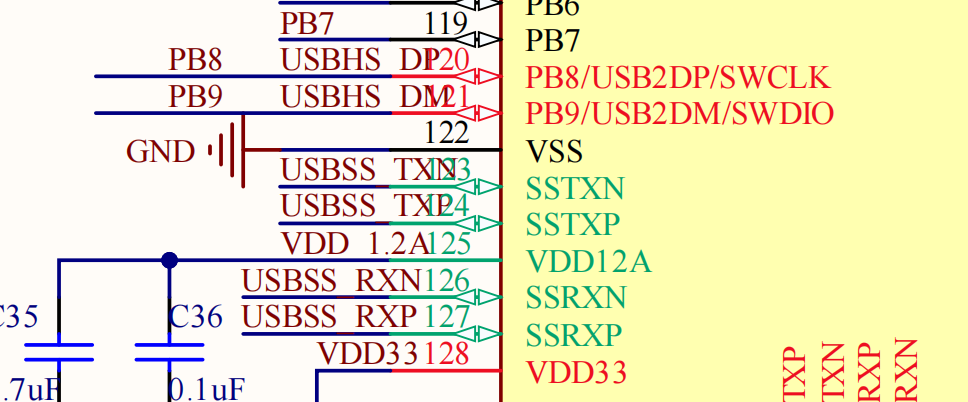
/* Disable SWD */
RCC_HB2PeriphClockCmd(RCC_HB2Periph_AFIO | RCC_HB2Periph_GPIOB, ENABLE);
GPIO_PinRemapConfig(GPIO_Remap_SWJ_Disable, ENABLE);
解决办法：使用WCH LINK-E调试器将Code Flash擦除。 具体步骤如下：
-
连接WCH LINK-E调试器到开发板的SWD接口，并通过调试器供电。
-
打开MounRiver Studio II IDE，选择“下载”->“下载配置”
-
在“Erase Code Flash”选项中，选择“By Power off”, 点击“应用”。下面对话框中会显示成功。
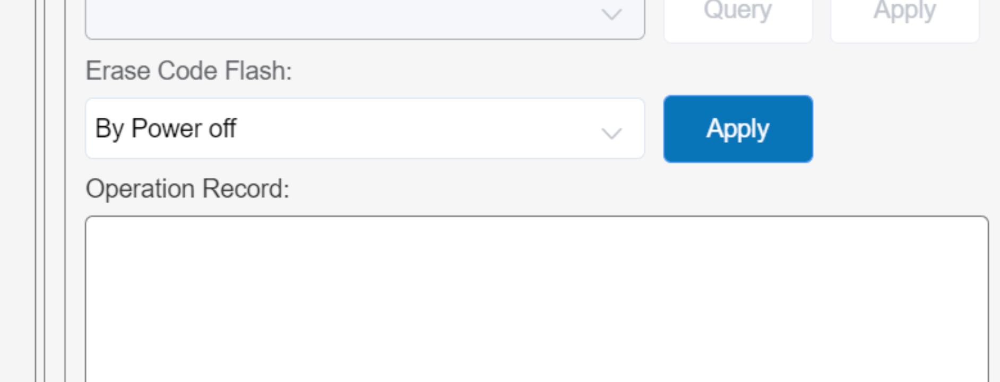
-
拔掉WCH LINK-E调试器给开发板断电，然后重新连接调试器给开发板上电。
-
再使用MounRiver Studio II IDE烧录固件，应该就可以成功了。
FAQ003 - GPIO的电平为什么不对
CH32H417内部集成了可调输出电压的LDO，用于给VIO_18的网络供电，在XO脚上接下拉100K，会输出1.2V, 浮空会输出1.8V，接下拉330K，会输出2.5V.
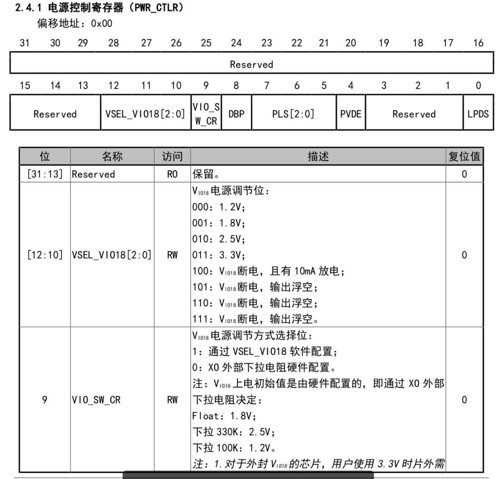
可以通过软件来配置LDO的输出电压，具体方法如下： RCC_HB1PeriphClockCmd(RCC_HB1Periph_PWR, ENABLE);
PWR_VIO18ModeCfg(PWR_VIO18CFGMODE_SW);
PWR_VIO18LevelCfg(PWR_VIO18Level_MODE3); // 输出3.3V
FAQ004 - USB2.0 HS 接口为什么不能正常工作
原因是SWD接口的PB8，PB9是与USB2.0 HS接口的D+/D-是复用的，需要将LINK-E调试器拔下来，然后会进行正常初始化。如果插着LINK-E调试器，会在主机显示一个未知的USB设备。
Petros CH32H417Q Alef板使用手册
Petros CH32H417M Alef开发板使用手册
本手册介绍Petros CH32H417M Alef开发板的使用方法。
1. 产品介绍 - Overview
CH32H417是由南京沁恒公司开发的32位微控制器，用于开发嵌入式产品。其最大的特点在于支持USB3.0高速接口与RISC-V双核架构。正是因为这两个特点，XPU实验室开发了Petros CH32H417M Alef开发板。
Petros CH32H417M Alef开发板使用的是CH32H417MEU6微控制器。它是QFN88的封装，板形外观兼容树莓派RP2040 Pico的直插的板形，其大小为52mm x 21mm，非常小巧。带有一个USB3.0 Type-A母座高速接口，用于开发USB3.0高速设备。实际测试USB3.0接口下行速度为430MB/s, 对于高速数据采集十分实用。板上的板对板连接器主要引出DVP，I2C、SPI、ADC接口，方便适配各种传感器模块。
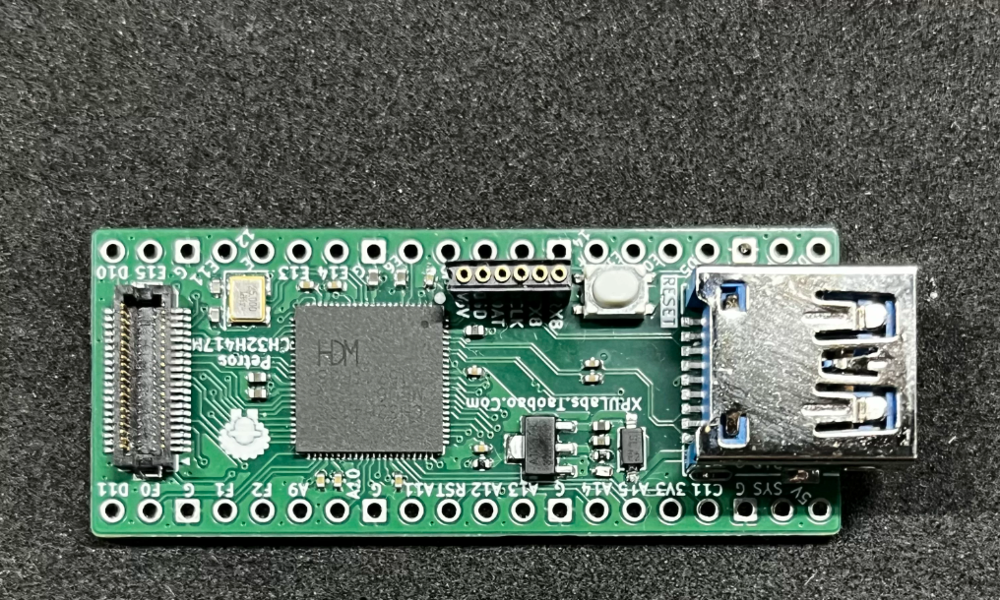
2. 芯片特点 - Features
-
双内核结构：青稞RISC-V5F和RISC-V3F
-
V5F最高频率400MHz，V3F最高频率150MHz
-
896KB SRAM，960KB Flash
-
系统供电额定3.3V、常规GPIO供电额定3.3V，支持1.8V、高速GPIO供电可选1.2/1.8/2.5/3.3V
-
2组共16路通用DMA控制器
-
2组12位模数转换ADC，采样速率高达5Msps，支持双ADC转换模式
-
1组10位高速模数转换HSADC，采样速率高达20Msps
-
32位宽度125MHz通用高速接口UHSIF
-
150MHz数字图像接口DVP
-
200MHz双沿SD/EMMC控制器（SDMMC）
-
SDIO主机/从机接口：支持SD/SDIO/MMC口
-
以太网控制器MAC及10M/100M PHY
-
5Gbps超高速USB 3.0控制器及PHY
-
480Mbps高速USB 2.0控制器及PHY
-
全速USB 2.0控制器及PHY
-
远距离SerDes控制器及PHY，支持千伏级高压信号隔离传输
-
USB PD和Type-C控制器及PHY
-
8组USART串口、4组I2C接口、1组I3C接口
-
4组SPI接口、2组QuadSPI接口、3组CAN接口（2.0B主动
-
串行音频接口SAI
-
LCD-TFT显示控制器LTDC
-
图形处理硬件加速器GPHA
-
灵活存储控制器FMC
-
95个I/O,映射16个外部中断
-
支持单线（默认）和双线两种调试模式
3. 产品规格 - Specifications
- 主芯片：CH32H417MEU6 QFN88 双核USB3.0 RISC-V
- 100%兼容树莓派Pico板的外形
- 板对板连接器扩展相机模块，如OV2640模块
- 所有GPIO都已经引出，方便开发
- 板对板连接器引出DVP、SPI、I2C，ADC接口
- 板载复位按键
- 可通过USB3.0 A口下载固件
- 板载SWD与UART6调试接口
- 配套多接口Link-E调试器，即插即用
- 尺寸：52mm x 21mm
4. 硬件 - Hardware
资源接口
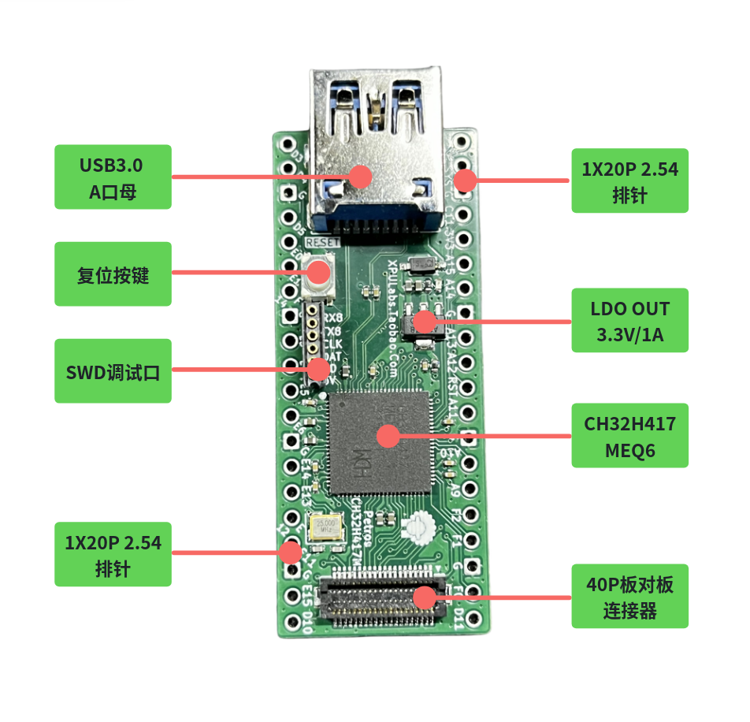
引脚
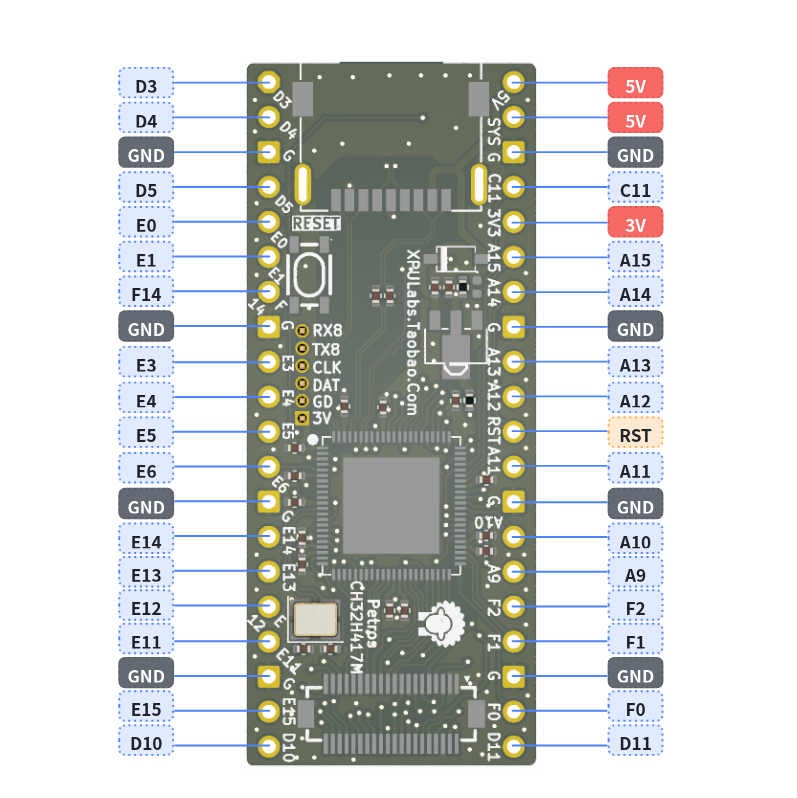
40P板对板连接器管脚定义如下，使用的连接器为HRS的DF12NB(3.0)-40DP-0.5V(51)
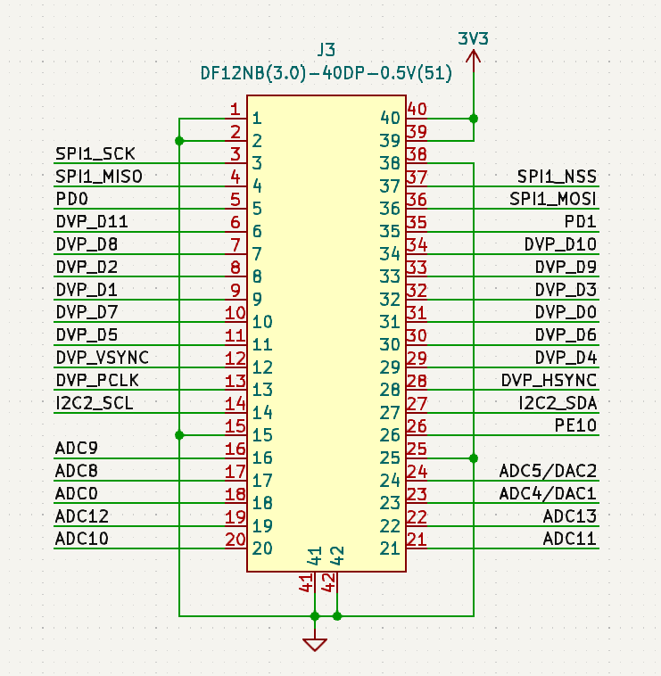
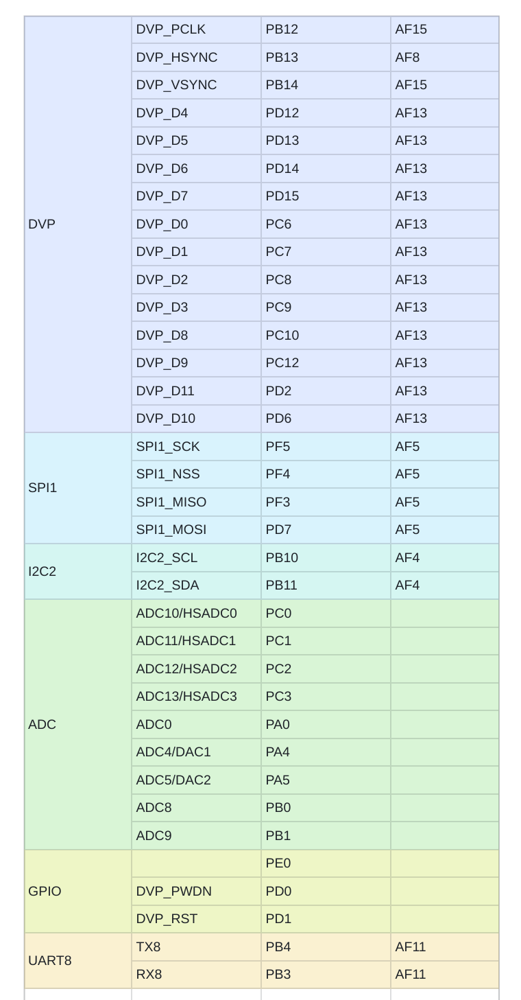
这个接口目前可以连接
-
Phos Ayin OV2640模块
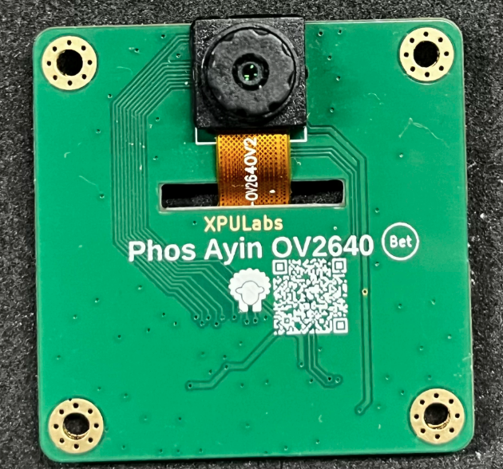
5. 软件开发 - Software
CH32H417使用MounRiver II IDE集成开发环境，支持Windows & Linux.
调试器需要使用Link-E 1V3, XPU实验室开发相应的调试器，可以直接插到板上的1.27mm SWD调试接口上。
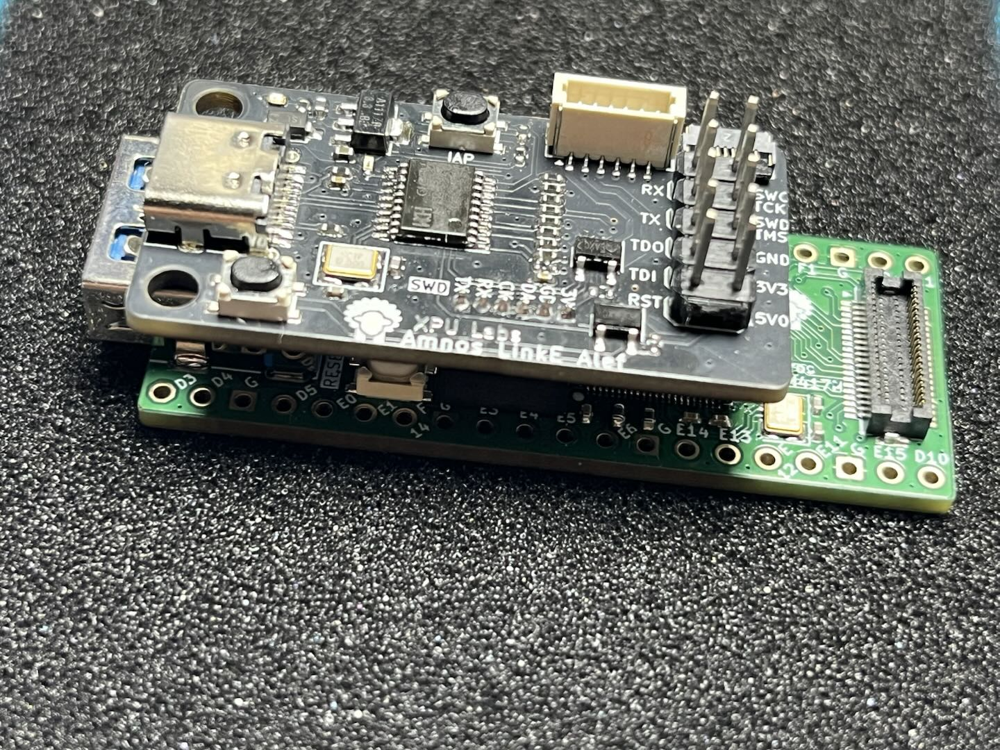
另一种方式是通过普通的USB2.0 Type-A口外接排针，连接到Link-E上。
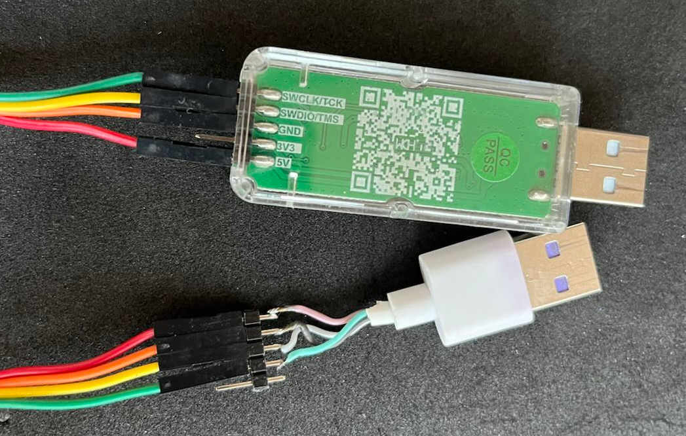
只需要将USB2.0 Type-A口插到板子的USB3.0 Type-A口上即可。
6. 教程 - Tutorials
持续更新中.....
7. 资源 - Resources
-
原理图
-
例程
请联系 xpulabs.taobao.com 淘宝店客服
8. 常见问题 - FAQ
持续更新中.....
Petros CH32H417W Alef开发板使用手册
本手册介绍Petros CH32H417W Alef开发板的使用方法。
1. 产品介绍 - Overview
CH32H417是由南京沁恒公司开发的32位微控制器，用于开发嵌入式产品。其最大的特点在于支持USB3.0高速接口与RISC-V双核架构。正是因为这两个特点，XPU实验室开发了Petros CH32H417W Alef开发板。
Petros CH32H417W Alef开发板使用的是CH32H417WEU6微控制器。它是QFN68的封装，板形外观兼容树莓派RP2040 Pico的直插的板形，其大小为52mm x 21mm，非常小巧。带有一个USB3.0 Type-A母座高速接口，用于开发USB3.0高速设备。实际测试USB3.0接口下行速度为430MB/s, 对于高速数据采集十分实用。板上的板对板连接器主要引出DVP，I2C、SPI、ADC接口，方便适配各种传感器模块。
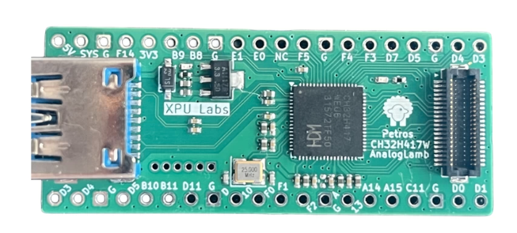
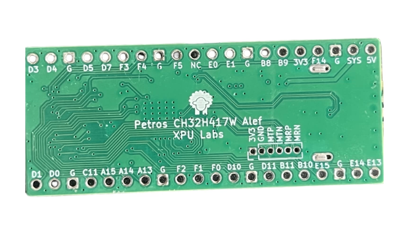
2. 芯片特点 - Features
-
双内核结构：青稞RISC-V5F和RISC-V3F
-
V5F最高频率400MHz，V3F最高频率150MHz
-
896KB SRAM，960KB Flash
-
系统供电额定3.3V、常规GPIO供电额定3.3V，支持1.8V、高速GPIO供电可选1.2/1.8/2.5/3.3V
-
2组共16路通用DMA控制器
-
2组12位模数转换ADC，采样速率高达5Msps，支持双ADC转换模式
-
1组10位高速模数转换HSADC，采样速率高达20Msps
-
32位宽度125MHz通用高速接口UHSIF
-
150MHz数字图像接口DVP
-
200MHz双沿SD/EMMC控制器（SDMMC）
-
SDIO主机/从机接口：支持SD/SDIO/MMC口
-
以太网控制器MAC及10M/100M PHY
-
5Gbps超高速USB 3.0控制器及PHY
-
480Mbps高速USB 2.0控制器及PHY
-
全速USB 2.0控制器及PHY
-
远距离SerDes控制器及PHY，支持千伏级高压信号隔离传输
-
USB PD和Type-C控制器及PHY
-
8组USART串口、4组I2C接口、1组I3C接口
-
4组SPI接口、2组QuadSPI接口、3组CAN接口（2.0B主动
-
串行音频接口SAI
-
LCD-TFT显示控制器LTDC
-
图形处理硬件加速器GPHA
-
灵活存储控制器FMC
-
95个I/O,映射16个外部中断
-
支持单线（默认）和双线两种调试模式
3. 产品规格 - Specifications
- 主芯片：CH32H417WEU6 QFN68 双核USB3.0 RISC-V
- 100%兼容树莓派Pico板的外形
- 板对板连接器扩展相机模块，如OV2640模块
- 所有GPIO都已经引出，方便开发
- 板对板连接器引出DVP、SPI、I2C，ADC接口
- 板载复位按键
- 可通过USB3.0 A口下载固件
- 调试接口引到2.54排针上
- 配套多接口Link-E调试器，即插即用
- 尺寸：52mm x 21mm
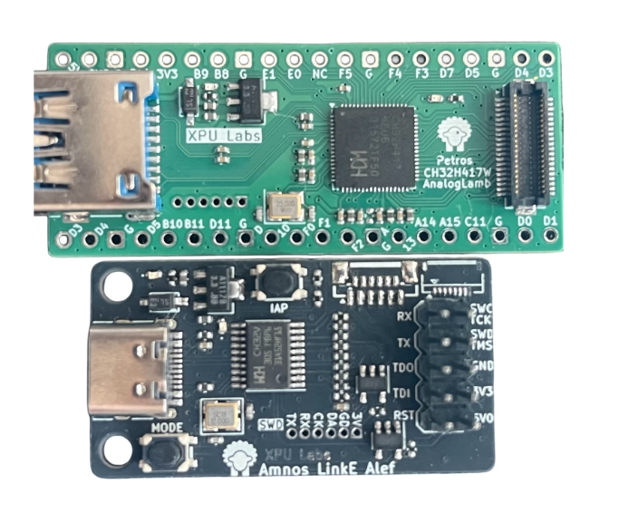
4. 硬件 - Hardware
CH32H417WEQ6的管脚定义
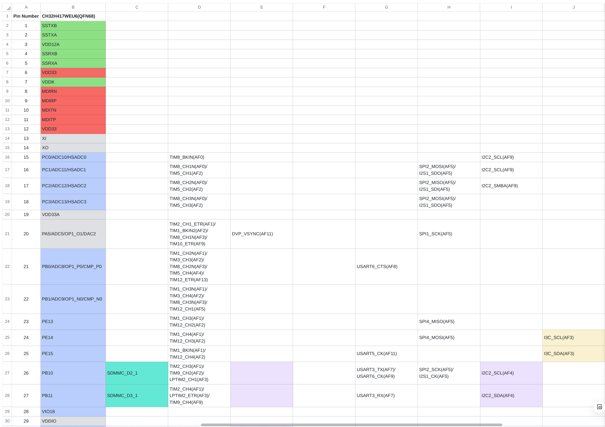
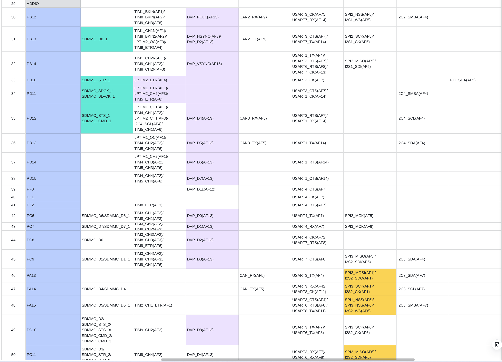
资源接口
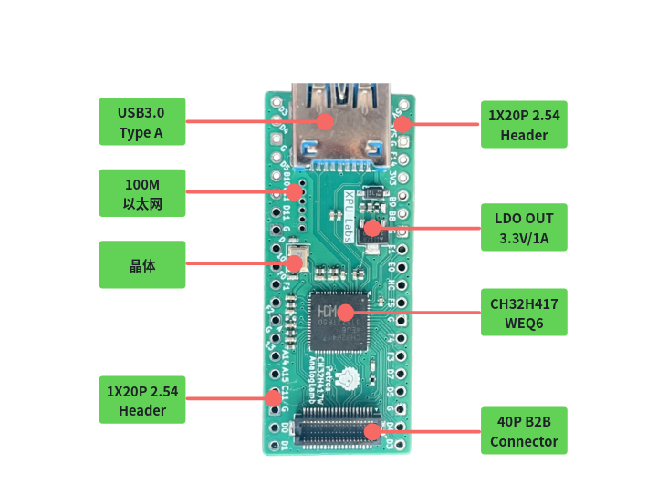
引脚
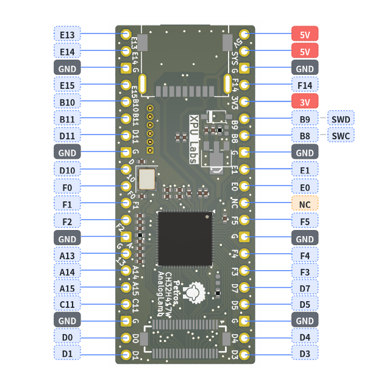
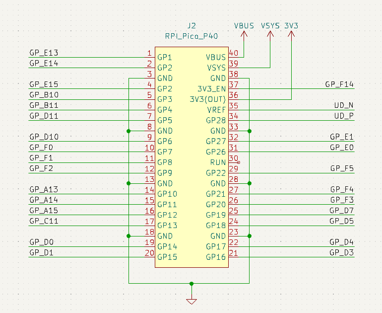
40P板对板连接器管脚定义如下，使用的连接器为HRS的DF12NB(3.0)-40DP-0.5V(51)
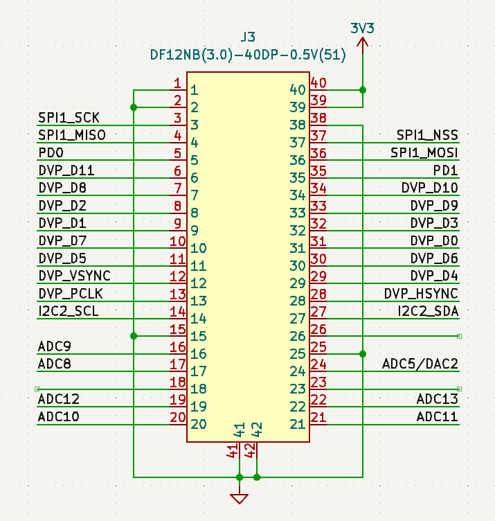
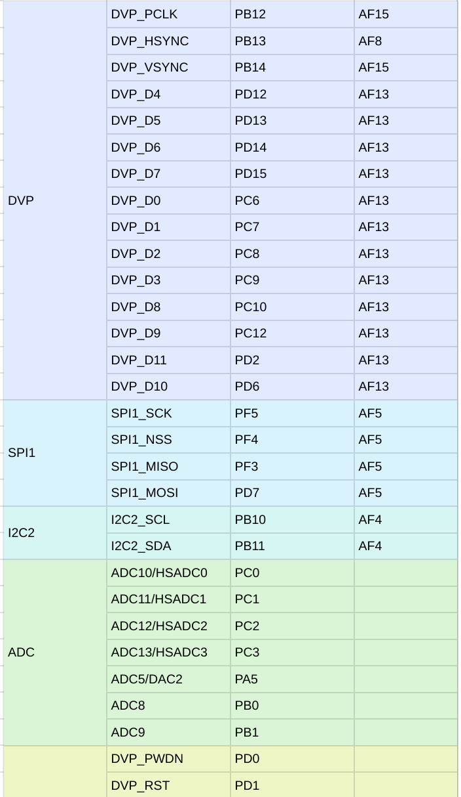
这个接口目前可以连接
-
Phos Ayin OV2640模块
5. 软件开发 - Software
CH32H417使用MounRiver II IDE集成开发环境，支持Windows & Linux.
调试器需要使用Link-E 1V3, XPU实验室开发相应的调试器，可以直接通过杜邦线连接到的B8、B9脚上（2.54mm排针）SWD调试接口上。
更推荐通过普通的USB2.0 Type-A口外接排针，连接到Link-E上。
只需要将USB2.0 Type-A口插到板子的USB3.0 Type-A口上即可。
6. 教程 - Tutorials
持续更新中.....
7. 资源 - Resources
-
原理图
-
例程
请联系 xpulabs.taobao.com 淘宝店客服
8. 常见问题 - FAQ
持续更新中.....
使用手册
TBD
WCH CH32V4x7 评估板使用手册
1. 概述
本评估板应用于 CH32V4x7 芯片的开发，IDE 使用 MounRiver 2 编译器，可使用 WCH-Link 进行仿真和下载，并提供了芯片资源相关的应用参考示例及演示。
2. 评估板硬件
评估板的原理图请参考 CH32V4x7SCH.pdf 文档
 模块说明
模块说明
-
1、网口
-
2、按键
-
3、LED
-
4、LCD 接口
-
5、SWD 接口
-
6、USBHS2 接口
-
7、主控 MCU
-
8、USBHS1 接口
-
9、低压降理想二极管
-
10、电源开关
-
11、DCDC 电路
-
12、IO 口
上图 CH32V407VET6 评估板配有以下资源：主板 - CH32V4x7V-R0
-
网口：主芯片的网络通讯接口
-
USER 按键和复位按键：连接主控 MCU 的 IO 口进行按键控制和用于外部手动复位主控 MCU。
-
LED：通过插针连接主控 MCU 的 IO 口进行控制
-
LCD 接口：用于扩展显示屏幕
-
SWD 接口：用于下载仿真调试
-
USBHS2 接口：连接主芯片 USBHS2 通信接口
-
主控 MCU：主控芯片为 CH32V407VET6
-
USBHS1 接口：连接主芯片 USBHS1 通信接口
-
低压降理想二极管：用于上游 USB 电源的过流和短路保护。CH213 是一款具有限流功能的低压降理想二极管芯片。
-
电源开关: 用于切断或连接外部 5V 供电或 USB 供电
-
DCDC 电路: 降压器芯片为 CH2003V，用于实现将 5V 电压转成芯片可用的 3.3V 电压
-
MCU IO 口: 主控 MCU 的 IO 引出接口
3. 软件开发
3.1 EVT 包目录结构

3.2 IDE 使用 –MounRiver
下载 MounRiver_Studio， 双击安装， 安装后即可使用。 （MounRiver_Studio 使用说明详见,路径：MounRiver\MounRiver_Studio\ MounRiver_Help.pdf 和 MounRiver_ToolbarHelp.pdf）
打开工程
1）在相应的工程路径下直接双击.wvproj 后缀名的工程文件； 2）在 MounRiver IDE2 中点击 File，点击 Load Project，选择相应路径下.project 文件，点击Confirm 应用即可。
编译
MounRiver 包含三个编译选项，如下图所示：

-
编译选项 1 为增量编译，对选中工程中修改过的部分进行编译；
-
编译选项 2 为 ReBuild，对选中工程进行全局编译；
-
编译选项 3 为增量编译并下载，对选中工程中修改过的部分进行编译随后执行下载；
-
编译选项 4 为 All Build，对所有的工程进行全局编译。
下载-调试器下载
通过 WCH-Link 连接硬件（WCH-Link 使用说明详见,路径：MounRiver\MounRiver_Studio\ WCH-Link 使用说明.pdf） ，点击 IDE 上 Download 按钮，在弹出的界面选择下载，如下图所示：

-
1-为查询芯片读保护状态；
-
2-为设置芯片读保护，重新上电配置生效；
-
3-为解除芯片读保护，重新上电配置生效；
-
4-查询显示当前芯片类型
-
5-设置 link 模式
-
6-设置 FLASH，RAM 配置
-
7-power-off 擦除整片用户区 flash
-
8-设置下载地址
-
9-选择单双线模式
-
10-选择下载文件
-
11-下载配置选项
仿真
打开 MounRiver Studio 软件进行调试配置

选择合适的调试选项，应用并保存设置

点击 Start Debug 或者调试图标开始调试
1）工具栏说明
点击菜单栏的调试按键进入下载，见下图所示，下载工具栏

详细功能如下：
- 1.复位（Restart）：复位之后程序回到最开始处。
- 2.继续：点击继续调试。
- 3.终止：点击退出调试。
- 4.单步跳入：每点一次按键，程序运行一步，遇到函数进入并执行。
- 5.单步跳过：跳出该函数，准备下一条语句。
- 6.单步返回：返回所跳入的函数
- 7.指令集单步模式：点击进入指令集调试（需与 4、5、6 功能配合使用）。
2）设置断点
双击代码左侧可设置断点，再次双击取消断点，设置断点如下图所示;

3）界面显示
（1）指令集界面 点击指令集单步调试可进入指令调试，以单步跳入为例，每点击一次，可运行一次，运行光标会发生移动，以查看程序运行，指令集界面如下图所示：

（2）程序运行界面 可与指令集单步调试配合使用，仍以单步跳入为例，每点击一次，可运行一次，运行光标会发生 移动，以查看程序运行，程序运行界面如下图所示：

4）变量
鼠标悬停在源码中变量之上会显示详细信息，或者选中变量，然后右键单击 add to watch


填写变量名 ，将刚才选中的变量加入到窗口：

5）外设寄存器 在IDE 界面左下角Peripherals 界面显示有外设列表，选择外设则在Memory 窗口显示其具体的寄存器名称、地址、数值。

Tips：(1)调试时，点击右上角图标可进入原始界面。

4. WCH-LinkUtility.exe 下载
使用 WCH-LinkUtility 工具对芯片进行下载流程为：
- 1）连接 WCH-Link；
- 2）选择芯片信息；
- 3）添加固件；
- 4）设置配置，若芯片为读保护需解除芯片读保护；
- 5）执行

5. WCHISPTool.exe 下载
使用 WCHISPTool 工具对芯片进行下载，支持 USB 和串口两种下载方式。USB 管脚为 PA11（USB1DM） 、PA1（USB1DP） ，PB6（USB2DM） 、PB7（USB2DP）;串口管脚为 PA9(TX)、PA10（RX） 。LQFP64封装不支持 BOOT 功能，具体芯片型号 CH32V407RET6、CH32V467RET6。
下载流程如下：
- (1) BOOT0 接 VCC，BOOT1 接地，通过串口或者 USB 连接 PC；
- (2) 打开 WCHISPTool 工具，选择相应下载方式，选择下载固件，勾选芯片配置，点击下载；
- (3) BOOT0 接地，重新上电，运行 APP 程序。
WCHISPTool 工具界面如图所示：

-
1.选择USB 或串口下载方式；
-
2.设备列表选择，识别设备，一般自动识别，如未能识别，需手动选择；
-
3.选择固件，选择下载的.hex 或.bin 目标程序文件；
-
4.根据要求选择下载配置；
-
5.解除代码保护
-
6.点击下载。
6. 资源
-
SDK
-
原理图
-
其它：请到xpulabs.taobao.com购买
Hello World
TBD
CH32H417 GPIO及复用功能（GPIO/AFIO）教程
本教程基于CH32H417系列芯片应用手册，详细讲解GPIO的基本特性、功能配置、复用机制及寄存器操作，帮助开发者快速掌握GPIO的使用方法，适用于嵌入式开发入门及芯片实操参考。
一、GPIO基础认知
1.1 GPIO概述
CH32H417芯片内置6组GPIO端口，分别为PA0~PA15、PB0~PB15、PC0~PC15、PD0~PD15、PE0~PE15、PF0~PF14，共95个GPIO引脚。多数引脚可通过软件配置为输入、输出或复用外设功能，是芯片与外部设备通信的核心接口。
1.2 引脚供电分类
不同GPIO引脚的供电电压不同，需根据实际应用选择合适的电源配置，具体分类如下：
-
VDD33供电：PA9~PA12、PC13~PC15、PE3~PE6，额定3.3V；其中PC13~PC15在VDD33掉电时，自动切换为VBAT供电（适合低功耗场景）。
-
VDDIO供电：PA0~PA8、PB2~PB7、PB15、PC4~PC5、PD8、PE2、PF6~PF10，额定3.3V，支持1.8V、2.5V、3.3V自适应电源。
-
VIO18供电（高速引脚）：PA13~PA15、PB0~PB1、PB10~PB14等，内置I/O电压调节器，支持1.2V、1.8V、2.5V、3.3V动态切换，需通过PWR_CTLR寄存器[12:9]字段配置默认电压。
二、GPIO主要特征
每个GPIO引脚可配置为以下7种模式，覆盖绝大多数应用场景：
-
浮空输入：引脚悬空，不接上下拉电阻，适用于外部信号输入（如按键、传感器）。
-
开漏输出：仅N-MOS管工作，输出低电平有效，高电平需外部上拉电阻，适用于总线通信（如I2C）。
-
上拉输入：引脚通过内部上拉电阻接VDD，默认电平为高，适用于稳定的输入信号检测。
-
推挽输出：P-MOS和N-MOS管交替工作，可直接输出高/低电平，驱动能力强（如LED驱动）。
-
下拉输入：引脚通过内部下拉电阻接VSS，默认电平为低，适用于低电平触发的信号输入。
-
复用功能输入/输出：引脚作为芯片外设（如USART、SPI）的专用接口，由外设控制其输入/输出。
-
模拟输入：禁用数字电路，引脚直接接入模拟外设（如ADC），用于采集模拟信号。
注：多数引脚支持复用功能，具体复用分配需参考芯片手册中“引脚复用表”，复用配置需配合AFIO寄存器操作。
三、GPIO功能详解
3.1 GPIO模块结构
GPIO内部结构主要分为3部分，核心逻辑如下：
-
保护二极管：每个引脚内置两只保护二极管，防止静电或过压损坏芯片。
-
输入驱动模块：包含弱上下拉电阻（可选）、TTL施密特触发器；模拟输入时禁用施密特触发器，数字输入时启用，将外部信号转换为芯片可识别的数字信号，存入输入数据寄存器。
-
输出驱动模块：由一对P-MOS/N-MOS管组成，通过配置可实现推挽/开漏输出；输出信号由输出数据寄存器控制，或由复用外设直接控制。
3.2 初始化状态
芯片复位后，多数GPIO引脚默认配置为浮空输入模式；少数与HSE等外设相关的引脚，默认配置为外设复用模式（无需手动初始化）。具体初始化状态需参考芯片“引脚描述”章节。
3.3 外部中断功能
所有GPIO引脚均可配置为外部中断输入通道，核心规则如下：
-
外部中断通道序号与GPIO引脚位号必须一致（如PA1、PB1均对应EXTI1通道）。
-
一个外部中断通道最多只能映射一个GPIO引脚（一对一映射），需通过AFIO_EXTICR寄存器配置引脚与通道的映射关系。
3.4 复用功能与重映射
3.4.1 复用功能原理
GPIO引脚通过复用器连接到芯片内部外设，复用器一次仅允许一个外设的复用功能（AF0~AF15）连接到引脚，避免外设冲突。复位后，复用器默认选择AF0，可通过GPIOx_AFLR（低位）、GPIOx_AFHR（高位）寄存器配置复用功能序号。
3.4.2 复用配置规则
-
输入方向复用：端口配置为“复用输入模式”，上下拉电阻根据实际需求配置。
-
输出方向复用：端口配置为“复用输出模式”，推挽/开漏模式根据外设需求配置。
-
双向复用：端口配置为“复用输出模式”，驱动器自动切换为浮空输入模式。
3.4.3 功能重映射
当默认复用引脚被占用时，可通过重映射功能将外设复用引脚切换到其他空闲引脚，核心重映射场景如下：
-
OSC32_IN/OSC32_OUT（LSE引脚）：LSEON=0时，可重映射为PC14/PC15（GPIO模式）；LSEON=1时，为LSE振荡器引脚。
-
XI/XO（晶振引脚）：通过AFIO_PCFR1寄存器配置，可重映射为PD0/PD1（GPIO模式）。
-
ADC、TIM2、SDMMC、UHSIF等外设：通过对应重映射位配置，具体参考手册“复用功能重映射”章节。
3.5 锁定机制
通过锁定机制可固定GPIO引脚的配置，防止误操作修改，操作流程如下：
-
配置GPIOx_LCKR寄存器，设置需要锁定的引脚（LCK0~LCK15）。
-
执行特定写序列：写1 → 写0 → 写1 → 读0 → 读1（最后一步可选，用于确认锁定生效）。
-
锁定生效后，直至下次芯片复位，该引脚的配置（GPIOx_CFGLR/GPIOx_CFGHR）无法修改。
3.6 输入/输出/模拟模式配置详解
3.6.1 输入模式
配置为输入模式时，输出驱动断开，上下拉电阻可选，禁用复用功能和模拟输入；每个HB时钟周期会将引脚电平采样到输入数据寄存器（GPIOx_INDR），读取该寄存器可获取引脚实时电平。
3.6.2 输出模式
配置为输出模式时，输出驱动器启用（推挽/开漏），禁用上下拉电阻，启用TTL施密特触发器；引脚电平会被采样到输入数据寄存器，推挽模式下读取输出数据寄存器（GPIOx_OUTDR）可获取最后一次写入的值。
3.6.3 模拟输入模式
配置为模拟输入模式时，输出缓冲器断开，施密特触发器禁用，上下拉电阻禁用；输入数据寄存器读取值恒为0，引脚直接接入模拟外设（如ADC）。
3.7 常用外设GPIO配置推荐
不同外设的GPIO配置不同，以下为核心外设的推荐配置（完整配置参考手册表9-1至表9-26）：
| 外设类型 | 引脚功能 | 推荐GPIO配置 |
|---|---|---|
| USART（全双工） | TX、RX | TX：推挽复用输出；RX：浮空输入/上拉输入 |
| SPI（主模式） | SCK、MOSI、MISO、NSS | SCK/MOSI：推挽复用输出；MISO：浮空输入；NSS：推挽复用输出 |
| I2C | SCL、SDA | 开漏复用输出 |
| TIM（输出比较） | CHx | 推挽复用输出 |
| ADC/DAC | 模拟输入/输出 | 模拟输入模式 |
四、GPIO与AFIO寄存器操作
GPIO和AFIO的寄存器均需以32位（字）方式操作，核心寄存器分为GPIO寄存器和AFIO寄存器两类，以下讲解常用寄存器的功能与操作方法。
4.1 GPIO核心寄存器
4.1.1 配置寄存器（GPIOx_CFGLR/GPIOx_CFGHR）
用于配置GPIO引脚的模式（输入/输出/复用/模拟）和输出类型（推挽/开漏），分为低位（CFGLR，控制引脚0~7）和高位（CFGHR，控制引脚8~15）。
-
CNFy[1:0]（配置位）：输入模式下控制输入类型，输出模式下控制输出类型和复用模式。
-
MODEy[1:0]（模式位）：控制引脚模式，00=输入，01/10/11=输出（不同输出速度，需配合SPEED寄存器）。
复位值：0x44444444（默认浮空输入模式）。
4.1.2 输入/输出数据寄存器（GPIOx_INDR/GPIOx_OUTDR）
-
GPIOx_INDR（只读）：位0~15对应引脚0~15的实时输入电平，读取该寄存器可获取引脚状态。
-
GPIOx_OUTDR（读写）：位0~15对应引脚0~15的输出电平，写入该寄存器可控制引脚输出高/低。
复位值：INDR为0x0000XXXX（不确定值），OUTDR为0x00000000（默认低电平）。
4.1.3 置位/复位寄存器（GPIOx_BSHR/GPIOx_BCR）
-
GPIOx_BSHR（只写）：位0~15（BSy）置1时，对应OUTDR位置1；位16~31（BRy）置1时，对应OUTDR位清0（BSy优先级高于BRy）。
-
GPIOx_BCR（只写）：位0~15置1时，对应OUTDR位清0（与BSHR的BRy功能一致）。
复位值：均为0x00000000。
4.1.4 锁定寄存器（GPIOx_LCKR）
用于锁定GPIO配置，核心位为LCKK（锁定键）和LCKy（引脚锁定位），具体操作见3.5节“锁定机制”。
4.1.5 速度寄存器（GPIOx_SPEED）
控制GPIO输出速度，位0~31分为16组（SPEEDy[1:0]），对应引脚0~15，配置如下：
- 00：10MHz；01：50MHz；10：100MHz；11：180MHz
复位值：0x00000000（默认10MHz）。
4.2 AFIO核心寄存器
4.2.1 重映射寄存器1（AFIO_PCFR1）
核心用于配置外设功能重映射，关键位包括：
-
PD0PD1_RM：控制PD0/PD1是否重映射为GPIO（1=GPIO，0=晶振引脚）。
-
SDMMC_RM[1:0]：SDMMC外设引脚重映射配置。
-
UHSIF_PORT_RM[1:0]、UHSIF_CLK_RM[1:0]：UHSIF外设引脚重映射配置。
-
ADC1_ETRGINJ_RM/ADC1_ETRGREG_RM：ADC1外部触发重映射配置。
复位值：0x00000000。
4.2.2 复用功能寄存器（GPIOx_AFLR/GPIOx_AFHR）
用于配置GPIO引脚的复用功能序号（AF0~AF15），分为低位（AFLR，控制引脚0~7）和高位（AFHR，控制引脚8~15），每4位控制一个引脚（AFRy[3:0]）。
复位值：均为0x00000000（默认AF0）。
4.2.3 外部中断配置寄存器（AFIO_EXTICR1/AFIO_EXTICR2）
-
AFIO_EXTICR1：控制EXTI0~EXTI7通道与GPIO引脚的映射。
-
AFIO_EXTICR2：控制EXTI8~EXTI15通道与GPIO引脚的映射。
每4位控制一个中断通道（EXTIx[3:0]），配置值对应GPIO端口（0000=PA，0001=PB，以此类推）。
五、实操示例（以PA0配置为推挽输出为例）
以下为寄存器操作示例（基于C语言，寄存器地址参考手册），实现PA0引脚推挽输出高电平：
#include "ch32h417.h"
void GPIO_PA0_Init(void)
{
// 1. 使能GPIOA时钟（需先使能外设时钟，此处省略时钟配置）
// 2. 配置PA0为推挽输出模式，速度50MHz
R32_GPIOA_CFGLR &= ~(0x0F << 0); // 清除PA0的配置位（CNF0[1:0]和MODE0[1:0]）
R32_GPIOA_CFGLR |= (0x03 << 0); // MODE0=11（输出模式），CNF0=00（推挽输出）
R32_GPIOA_SPEED |= (0x01 << 0); // SPEED0=01（50MHz）
// 3. 控制PA0输出高电平
R32_GPIOA_OUTDR |= (0x01 << 0); // PA0置1
// 或使用BSHR寄存器：R32_GPIOA_BSHR |= (0x01 << 0);
}
int main(void)
{
GPIO_PA0_Init();
while(1)
{
// 循环保持高电平，可添加延时实现高低电平切换
}
}
六、注意事项
-
GPIO引脚供电电压需与配置匹配，避免过压损坏芯片（如VDD33引脚不可接5V）。
-
复用功能配置时，需先配置GPIO模式为“复用输入/输出”，再配置AF寄存器选择复用功能序号。
-
外部中断配置时，需确保中断通道与引脚位号一致，且仅能映射一个GPIO引脚。
-
锁定机制生效后，需复位芯片才能重新配置GPIO，实操时需谨慎使用。
-
高速引脚（VIO18供电）的速度配置需结合PWR_CTLR寄存器，确保电压与速度匹配。
本教程仅涵盖GPIO核心功能与操作，详细的引脚复用分配、寄存器位定义及外设配合使用，需参考CH32H417系列应用手册。
LED Blink
1. 文件概述
hardware.c 是一个用于 LED 交替闪烁控制 的硬件测试程序，实现了 4 个 LED 以固定间隔交替亮灭的功能。
- 作者: XPU Labs - xpulabs.taobao.com
- 版本: V1.0.0
- 日期: 2026/03/11
- 功能: 初始化 LED 引脚并实现 LED 交替闪烁效果
2. 核心函数分析
2.1 LED_GPIO_Init()
功能: 初始化 LED 相关的 GPIO 引脚
void LED_GPIO_Init(void)
初始化步骤:
-
关闭外部低速晶振(LSE)
RCC_LSEConfig(RCC_LSE_OFF); while(RCC_GetFlagStatus(RCC_FLAG_LSERDY) != RESET);- 这是因为部分引脚默认复用为 LSE 晶振功能
- 必须先禁用 LSE 才能将相关引脚用作普通 GPIO
-
使能 GPIO 端口时钟
RCC_HB2PeriphClockCmd(RCC_HB2Periph_GPIOA | RCC_HB2Periph_GPIOC | RCC_HB2Periph_GPIOF, ENABLE);- 使能所有使用到的 GPIO 端口时钟
- 配置了3个GPIO端口：A、C、F
-
配置 LED 引脚(推挽输出)
- LED1: PA1
- LED2: PA2
- LED3: PF10
- LED4: PC15
配置为 GPIO_Mode_Out_PP（推挽输出模式），速度为 GPIO_Speed_Very_High（最高速度）
-
初始化 LED 状态
GPIO_WriteBit(GPIOA, GPIO_Pin_1, Bit_SET); GPIO_WriteBit(GPIOA, GPIO_Pin_2, Bit_SET); GPIO_WriteBit(GPIOF, GPIO_Pin_10, Bit_SET); GPIO_WriteBit(GPIOC, GPIO_Pin_15, Bit_SET);- 初始状态下，所有 LED 熄灭（Bit_SET 为高电平）
2.2 LED_GPIO_Toggle(u8 i)
功能: 根据参数控制 LED 的开关状态
void LED_GPIO_Toggle(u8 i)
实现逻辑:
- 当参数
i == 0时，所有 LED 熄灭（Bit_SET） - 当参数
i != 0时，所有 LED 点亮（Bit_RESET） - 与传统的 "toggle" 函数不同，这里不是逐个翻转状态，而是根据参数统一控制所有 LED
2.3 Hardware(void)
功能: 主循环函数，实现 LED 交替闪烁
void Hardware(void)
工作流程:
-
初始化 LED
LED_GPIO_Init();调用初始化函数配置 GPIO 引脚
-
主循环实现闪烁效果
while(1) { Delay_Ms(250); LED_GPIO_Toggle(i); i = !i; }- 使用
Delay_Ms(250)创建 250ms 的延迟 - 通过
LED_GPIO_Toggle(i)控制 LED 状态 - 通过
i = !i翻转状态变量，实现交替效果
- 使用
3. 硬件连接关系
| LED 编号 | 引脚 | 控制方式 |
|---|---|---|
| LED1 | PA1 | 推挽输出 |
| LED2 | PA2 | 推挽输出 |
| LED3 | PF10 | 推挽输出 |
| LED4 | PC15 | 推挽输出 |
4. 代码优化建议
4.1 改进 LED_GPIO_Toggle 函数
当前的 LED_GPIO_Toggle 函数并不是真正的 "翻转" 函数，而是根据参数设置 LED 状态。可以修改为：
void LED_GPIO_Toggle(void)
{
GPIO_WriteBit(GPIOA, GPIO_Pin_1, (BitAction)(1 - GPIO_ReadOutputDataBit(GPIOA, GPIO_Pin_1)));
GPIO_WriteBit(GPIOA, GPIO_Pin_2, (BitAction)(1 - GPIO_ReadOutputDataBit(GPIOA, GPIO_Pin_2)));
GPIO_WriteBit(GPIOF, GPIO_Pin_10, (BitAction)(1 - GPIO_ReadOutputDataBit(GPIOF, GPIO_Pin_10)));
GPIO_WriteBit(GPIOC, GPIO_Pin_15, (BitAction)(1 - GPIO_ReadOutputDataBit(GPIOC, GPIO_Pin_15)));
}
这样函数名更符合实际功能，而且不需要参数。
4.2 使用数组优化重复代码
可以使用数组存储 LED 信息，减少重复代码：
// 在函数外部定义LED配置数组
GPIO_TypeDef* led_ports[] = {GPIOA, GPIOA, GPIOF, GPIOC};
uint16_t led_pins[] = {GPIO_Pin_1, GPIO_Pin_2, GPIO_Pin_10, GPIO_Pin_15};
// 初始化函数可以修改为
for(int i = 0; i < 4; i++) {
GPIO_InitStructure.GPIO_Pin = led_pins[i];
GPIO_InitStructure.GPIO_Speed = GPIO_Speed_Very_High;
GPIO_InitStructure.GPIO_Mode = GPIO_Mode_Out_PP;
GPIO_Init(led_ports[i], &GPIO_InitStructure);
GPIO_WriteBit(led_ports[i], led_pins[i], Bit_SET);
}
// 翻转函数可以修改为
for(int i = 0; i < 4; i++) {
GPIO_WriteBit(led_ports[i], led_pins[i],
(BitAction)(1 - GPIO_ReadOutputDataBit(led_ports[i], led_pins[i])));
}
4.3 增加注释说明
虽然代码已经有一些注释，但可以增加更多说明，特别是关于硬件连接和工作原理的部分。
5. 工作原理总结
-
初始化阶段：禁用 LSE 晶振，使能 GPIO 端口时钟，配置 LED 引脚为推挽输出模式，并将所有 LED 初始化为熄灭状态。
-
运行阶段：进入无限循环，每隔 250ms 调用一次
LED_GPIO_Toggle函数，通过翻转状态变量i实现 LED 的交替闪烁效果。 -
控制逻辑：当
i为 0 时，所有 LED 熄灭；当i为 1 时，所有 LED 点亮。通过i = !i实现状态交替。
这个程序实现了一个简单但完整的 LED 闪烁功能，适合作为 GPIO 输出功能的基础测试程序。
Chapter 1 - GPIO
1. 文件概述
hardware.c 是一个用于 GPIO 按键和 LED 控制的硬件测试程序，主要实现按键输入与 LED 输出的交互功能。
- 功能: 实现 4 个按键控制 4 个 LED 的基本功能测试
2. 核心函数分析
2.1 GPIO_Key_LED_Init()
功能: 初始化 GPIO 引脚，配置按键和 LED 的工作模式
void GPIO_Key_LED_Init(void)
初始化步骤:
-
关闭外部低速晶振(LSE)
RCC_LSEConfig(RCC_LSE_OFF); while(RCC_GetFlagStatus(RCC_FLAG_LSERDY) != RESET);这是因为 PB3/PB4 引脚默认复用为 LSE 晶振引脚，需要禁用 LSE 才能将其用作普通 GPIO。
-
使能 GPIO 端口时钟
RCC_HB2PeriphClockCmd(RCC_HB2Periph_GPIOA | RCC_HB2Periph_GPIOB | RCC_HB2Periph_GPIOC | RCC_HB2Periph_GPIOF | RCC_HB2Periph_GPIOD, ENABLE);使能所有使用到的 GPIO 端口时钟。
-
配置 LED 引脚(推挽输出)
- LED1: PA1
- LED2: PA2
- LED3: PF10
- LED4: PC15
配置为 GPIO_Mode_Out_PP (推挽输出模式)，速度为 GPIO_Speed_Very_High (最高速度)。
-
配置按键引脚(上拉输入)
- Key1: PB3
- Key2: PB4
- Key3: PB5
- Key4: PD6
配置为 GPIO_Mode_IPU (带内部上拉电阻的输入模式)。
-
初始化 LED 状态
GPIO_WriteBit(GPIOA, GPIO_Pin_1, Bit_SET); GPIO_WriteBit(GPIOA, GPIO_Pin_2, Bit_SET); GPIO_WriteBit(GPIOF, GPIO_Pin_10, Bit_SET); GPIO_WriteBit(GPIOC, GPIO_Pin_15, Bit_SET);初始状态下，所有 LED 熄灭 (Bit_SET 为高电平)。
2.2 Key_Control_LED()
功能: 读取按键状态并控制对应的 LED
void Key_Control_LED(void)
工作原理:
-
按键检测
- 使用
GPIO_ReadInputDataBit()读取按键引脚状态 - 按键按下时，引脚状态为 Bit_RESET (低电平)
- 按键松开时，引脚状态为 Bit_SET (高电平，由内部上拉电阻维持)
- 使用
-
按键去抖动
if (GPIO_ReadInputDataBit(GPIOB, GPIO_Pin_3) == Bit_RESET) { Delay_Ms(10); // 10ms 去抖动 if (GPIO_ReadInputDataBit(GPIOB, GPIO_Pin_3) == Bit_RESET) { // 按键确实被按下 } }通过两次检测并添加 10ms 延迟，有效消除按键机械抖动带来的误触发。
-
LED 控制
- 按键按下时: 对应的 LED 点亮 (Bit_RESET 低电平)
- 按键松开时: 对应的 LED 熄灭 (Bit_SET 高电平)
-
串口反馈
- 按下按键时，通过
printf()输出按键状态信息 - 松开按键时的信息被注释掉，减少串口输出量
- 按下按键时，通过
2.3 Hardware()
功能: 主硬件测试函数，包含测试主循环
void Hardware(void)
工作流程:
-
打印测试信息
printf("GPIO Key LED TEST\r\n");向串口输出测试开始信息。
-
初始化硬件
GPIO_Key_LED_Init();调用初始化函数配置 GPIO 引脚。
-
主循环
while(1) { Key_Control_LED(); Delay_Ms(10); }- 持续调用
Key_Control_LED()检测按键并控制 LED - 循环中添加 10ms 延迟，减少 CPU 占用率
- 持续调用
3. 硬件连接关系
| 按键 | 引脚 | 对应 LED | 引脚 |
|---|---|---|---|
| Key1 | PB3 | LED1 | PA1 |
| Key2 | PB4 | LED2 | PA2 |
| Key3 | PB5 | LED3 | PF10 |
| Key4 | PD6 | LED4 | PC15 |
4. 代码优化建议
-
使用宏定义引脚映射
#define KEY1_PIN GPIO_Pin_3 #define KEY1_PORT GPIOB #define LED1_PIN GPIO_Pin_1 #define LED1_PORT GPIOA增加代码可读性和可维护性。
-
使用数组优化重复代码
GPIO_TypeDef* key_ports[] = {GPIOB, GPIOB, GPIOB, GPIOD}; uint16_t key_pins[] = {GPIO_Pin_3, GPIO_Pin_4, GPIO_Pin_5, GPIO_Pin_6}; GPIO_TypeDef* led_ports[] = {GPIOA, GPIOA, GPIOF, GPIOC}; uint16_t led_pins[] = {GPIO_Pin_1, GPIO_Pin_2, GPIO_Pin_10, GPIO_Pin_15};减少重复代码，提高可扩展性。
-
增加状态变量
uint8_t led_states[4] = {1, 1, 1, 1}; // 1: 熄灭, 0: 点亮避免不必要的 GPIO 写入操作，提高效率。
5. 应用场景
- 硬件调试：快速测试 GPIO 输入输出功能
- 学习示例：适合初学者学习 GPIO 配置和按键处理
- 产品原型：可作为简单交互产品的基础代码
该程序实现了一个基础但完整的 GPIO 交互功能，展示了嵌入式系统中常见的输入输出控制模式。
CH32H417 中断（PFIC+EXTI）实操教程
本教程基于CH32H417系列芯片 datasheet 中“4.7 中断和事件（PFIC）”章节，聚焦**可编程快速中断控制器（PFIC）和外部中断/事件控制器（EXTI）**的核心用法，从基础概念、核心特征、实操配置到问题排查，全程贴合嵌入式开发实操场景，适合有一定CH32H417基础的开发者快速上手中断开发。
第一章：中断核心基础认知
1.1 核心概念
中断是芯片应对外部/内部事件的异步响应机制，CH32H417的中断系统核心由 PFIC（可编程快速中断控制器） 和 EXTI（外部中断/事件控制器） 组成：
-
PFIC：负责中断的分配、优先级管理、嵌套控制、睡眠唤醒等核心功能，是中断系统的“中枢”；
-
EXTI：负责处理外部触发信号（GPIO、外设唤醒等），筛选触发沿、产生中断/事件请求，是连接外部信号与PFIC的“桥梁”。
1.2 关键特性（必记）
-
PFIC支持最多256个中断向量，RISC-V3F（2级嵌套）、RISC-V5F（8级嵌套）内核各管理32个私有中断，其余为共享中断；
-
共享中断可通过寄存器分配给任意一个内核响应，一次中断仅向一个内核发送请求；
-
EXTI支持27路通道，可配置上升沿、下降沿、双边沿触发，支持软件触发和硬件触发；
-
中断可唤醒内核低功耗状态（执行WFI指令后），EXTI可产生“中断”（需处理）和“事件”（无需处理，仅唤醒）。
第二章：PFIC核心配置（重中之重）
PFIC的配置直接决定中断能否正常响应，核心围绕“中断分配、优先级配置、中断使能”三大步骤，以下是实操重点。
2.1 中断分配（共享中断必配）
CH32H417有两个内核（C0、C1），共享中断（非内核私有）需通过 PFIC_IALLOCRx 寄存器 分配给指定内核，私有中断（0~31号中部分）需通过外设寄存器分配。
核心规则：
-
PFIC_IALLOCRx 寄存器（偏移地址0x600~0x6FF），每4个中断对应1个寄存器（32位），每8位对应1个中断；
-
仅最低位有效：1=分配给C1内核，0=分配给C0内核；
-
当某内核使能某中断时，该寄存器会自动更新为该内核ID（无需手动配置，可查询验证）。
示例（将32号中断分配给C0内核）：
// PFIC_IALLOCR0 对应中断0~3，PFIC_IALLOCR8 对应中断32~35（32=8*4）
*(volatile uint32_t *)(0x600 + 8*4) &= ~(1 << 0); // 32号中断对应该寄存器bit0，清0=分配给C0
2.2 中断优先级配置
所有中断（包括私有和共享）通过 PFIC_IPRIORx 寄存器（偏移地址0x400~0x4FF）配置优先级，核心规则如下：
-
每个中断占用8位，仅高4位（bit7~bit4）有效，低4位固定为0；
-
数值越小，优先级越高；抢占位由CSR寄存器的preempt控制（0=无抢占，1=bit7为抢占位，以此类推）；
-
RISC-V3F内核最多2级嵌套，RISC-V5F最多8级嵌套，嵌套满后无法抢占。
示例（配置32号中断优先级为最高，抢占位1位）：
// PFIC_IPRIOR8 对应中断32~35（32=8*4），32号中断对应bit7~bit4
*(volatile uint32_t *)(0x400 + 8*4) &= ~(0xF << 4); // 清0bit7~bit4
*(volatile uint32_t *)(0x400 + 8*4) |= (0x0 << 4); // 优先级0（最高）
// 配置CSR寄存器preempt=1（仅RISC-V3F/V5F对应配置）
asm volatile("csrw preempt, 0x1"); // 1位抢占位
2.3 中断使能与挂起控制
中断配置完成后，需通过PFIC的使能寄存器开启中断，同时可通过挂起寄存器手动设置/清除中断挂起状态。
2.3.1 中断使能（必配）
使用 PFIC_IENRx 寄存器（偏移地址0x100~0x110）使能中断，每32个中断对应1个寄存器：
-
PFIC_IENR1：控制12~31号中断；
-
PFIC_IENR2：控制32~63号中断；
-
写1使能对应中断，写0无影响。
示例（使能32号中断）：
// 32号中断对应PFIC_IENR2（0x104）的bit0
*(volatile uint32_t *)0x104 |= (1 << 0); // 使能32号中断
2.3.2 中断挂起与清除
-
挂起：通过 PFIC_IPSRx 寄存器（0x200~0x210）写1，手动挂起中断；
-
清除挂起：通过 PFIC_IPRRx 寄存器（0x280~0x290）写1，清除中断挂起状态。
示例（清除32号中断挂起）：
// 32号中断对应PFIC_IPRR2（0x284）的bit0
*(volatile uint32_t *)0x284 |= (1 << 0); // 清除32号中断挂起
第三章：EXTI外部中断实操（最常用场景）
EXTI主要用于处理GPIO等外部信号的中断/事件，核心流程：GPIO配置 → EXTI通道配置 → PFIC配置 → 中断服务函数，以下以“GPIOA0上升沿触发中断”为例，完整演示实操步骤。
3.1 步骤1：GPIO配置（外部中断引脚）
外部中断引脚需配置为模拟输入或浮空输入（避免电平干扰），以GPIOA0（对应EXTI0通道）为例：
#include "ch32h417.h"
void GPIO_Config(void)
{
GPIO_InitTypeDef GPIO_InitStructure;
RCC_APB2PeriphClockCmd(RCC_APB2Periph_GPIOA, ENABLE); // 使能GPIOA时钟
// GPIOA0 配置为浮空输入
GPIO_InitStructure.GPIO_Pin = GPIO_Pin_0;
GPIO_InitStructure.GPIO_Mode = GPIO_Mode_IN_FLOATING;
GPIO_InitStructure.GPIO_Speed = GPIO_Speed_50MHz;
GPIO_Init(GPIOA, &GPIO_InitStructure);
// 配置AFIO，将GPIOA0映射到EXTI0（CH32H417需手动配置AFIO_EXTICR）
AFIO_EXTICR1 |= AFIO_EXTICR1_EXTI0_PA; // EXTI0映射到PA0
}
3.2 步骤2：EXTI通道配置
EXTI核心寄存器（共6个），重点配置4个：中断使能、触发沿、软中断（可选）、中断标志清除，以EXTI0为例：
void EXTI_Config(void)
{
// 1. 使能EXTI0中断（EXTI_INTENR寄存器，bit0对应EXTI0）
R32_EXTI_INTENR |= (1 << 0);
// 2. 配置上升沿触发（EXTI_RTENR寄存器，bit0对应EXTI0）
R32_EXTI_RTENR |= (1 << 0);
// 若需下降沿触发，配置EXTI_FTENR |= (1 << 0); 双边沿则两者都置1
// 3. 清除EXTI0中断标志（避免初始挂起）
R32_EXTI_INTFR |= (1 << 0); // 写1清除标志
}
3.3 步骤3：PFIC配置（关联EXTI中断）
EXTI0对应中断编号为6（参考datasheet向量表），属于共享中断，需分配内核、配置优先级、使能中断：
void PFIC_Config(void)
{
// 1. 分配EXTI0（6号中断）给C0内核（PFIC_IALLOCR0，bit6对应6号中断）
*(volatile uint32_t *)0x600 &= ~(1 << 6); // bit6清0=分配给C0
// 2. 配置6号中断优先级（PFIC_IPRIOR0，bit7~bit4对应6号中断）
*(volatile uint32_t *)0x400 &= ~(0xF << 4); // 清0优先级位
*(volatile uint32_t *)0x400 |= (0x1 << 4); // 优先级1（次高）
// 3. 使能6号中断（PFIC_IENR1，bit6对应6号中断）
*(volatile uint32_t *)0x100 |= (1 << 6);
}
3.4 步骤4：中断服务函数（核心）
中断服务函数需对应中断编号，EXTI0对应中断向量表中的6号中断，函数名需与启动文件中的中断向量名一致（避免链接错误）：
// EXTI0中断服务函数（中断编号6）
void EXTI0_IRQHandler(void)
{
// 1. 检查EXTI0中断标志（确认是EXTI0触发）
if(R32_EXTI_INTFR & (1 << 0))
{
// 2. 中断处理逻辑（示例：翻转LED）
GPIO_WriteBit(GPIOC, GPIO_Pin_13, !GPIO_ReadOutputDataBit(GPIOC, GPIO_Pin_13));
// 3. 清除EXTI中断标志（必须做，否则会反复触发）
R32_EXTI_INTFR |= (1 << 0);
}
}
3.5 步骤5：主函数初始化与测试
int main(void)
{
// 初始化系统时钟（根据实际需求配置）
SystemInit();
// 初始化GPIO（LED+EXTI引脚）
GPIO_Config();
// 初始化EXTI
EXTI_Config();
// 初始化PFIC
PFIC_Config();
while(1)
{
// 主循环逻辑（中断会异步触发）
}
}
第四章：EXTI事件配置（无需处理，仅唤醒）
EXTI事件与中断的区别：事件无需进入中断服务函数，仅用于唤醒内核低功耗状态，配置步骤比中断简单（无需PFIC使能中断）。
void EXTI_Event_Config(void)
{
// 1. GPIO配置（同中断，PA0映射到EXTI0）
GPIO_Config();
// 2. 使能EXTI0事件（EXTI_EVENR寄存器，bit0对应EXTI0）
R32_EXTI_EVENR |= (1 << 0);
// 3. 配置上升沿触发（同中断）
R32_EXTI_RTENR |= (1 << 0);
// 4. 配置内核低功耗（WFI指令）
asm volatile("wfi"); // 内核进入低功耗，等待EXTI0事件唤醒
}
第五章：实操注意事项（避坑重点）
-
中断标志清除：EXTI中断触发后，必须手动清除EXTI_INTFR对应位，否则会反复进入中断服务函数；
-
内核分配：共享中断必须分配给指定内核，否则无法响应；私有中断（如SysTick）需通过外设寄存器分配；
-
触发沿配置：若触发沿配置错误（如需要上升沿却配置了下降沿），中断无法触发，需结合实际需求选择；
-
优先级嵌套：R32F内核最多2级嵌套，R52F最多8级，嵌套满后高优先级中断无法抢占低优先级；
-
低功耗唤醒：用EXTI事件唤醒时，需配置PFIC_SCTLR寄存器的WFITOWFE位（1=WFI指令等待事件唤醒）；
-
寄存器访问：PFIC部分寄存器为内核私有，C0和C1内核访问地址相同，但数据独立，不可跨内核改写。
第六章：常见问题排查（快速定位问题）
-
中断无法触发：
-
排查GPIO配置：是否为输入模式，AFIO映射是否正确；
-
排查EXTI配置：中断使能、触发沿是否正确，中断标志是否清除；
-
排查PFIC配置：中断是否分配给当前内核，优先级是否配置，是否使能中断。
-
-
中断反复触发：
-
未清除EXTI中断标志（最常见），需在中断服务函数中写1清除；
-
GPIO引脚电平不稳定，需增加滤波电路，或延长采样时间。
-
-
低功耗无法唤醒：
-
EXTI事件未使能，或触发沿配置错误；
-
PFIC_SCTLR寄存器的WFITOWFE位未置1，WFI指令无法等待事件唤醒。
-
-
中断优先级不生效：
-
PFIC_IPRIORx寄存器配置错误，仅bit7~bit4有效；
-
CSR寄存器的preempt位配置错误，导致抢占位无效。
-
第七章：核心寄存器速查（实操常用）
7.1 PFIC常用寄存器
| 寄存器名称 | 访问地址 | 核心功能 |
|---|---|---|
| PFIC_IALLOCRx | 0x600~0x6FF | 中断分配（共享中断分配给C0/C1） |
| PFIC_IPRIORx | 0x400~0x4FF | 中断优先级配置 |
| PFIC_IENR1~5 | 0x100~0x110 | 中断使能 |
| PFIC_IPRR1~5 | 0x280~0x290 | 中断挂起清除 |
| PFIC_SCTLR | 0xD10 | 低功耗唤醒、事件配置 |
7.2 EXTI常用寄存器
| 寄存器名称 | 访问地址 | 核心功能 |
|---|---|---|
| R32_EXTI_INTENR | 0x40010400 | EXTI中断使能 |
| R32_EXTI_EVENR | 0x40010404 | EXTI事件使能 |
| R32_EXTI_RTENR | 0x40010408 | 上升沿触发使能 |
| R32_EXTI_FTENR | 0x4001040C | 下降沿触发使能 |
| R32_EXTI_INTFR | 0x40010414 | 中断标志位（写1清除） |
总结
CH32H417中断开发的核心是“PFIC管全局，EXTI管外部”：PFIC负责中断的分配、优先级和使能，是中断响应的基础；EXTI负责外部信号的筛选和触发，是连接外部设备与内核的关键。
实操时需牢记“GPIO配置→EXTI配置→PFIC配置→中断服务函数”的流程，重点关注中断标志清除、内核分配、触发沿配置三个易错点。本教程覆盖了最常用的EXTI外部中断场景，可根据实际需求（如软中断、双内核中断分配、低功耗唤醒）结合datasheet扩展配置。
hardware.c 文件解析（mio_gpio_exti）
1. 文件概述
hardware.c 是一个用于 GPIO 外部中断（EXTI）测试 的硬件控制程序，实现了通过按键触发外部中断来控制 LED 灯状态翻转的功能。
- 作者: XPU Labs - xpulabs.taobao.com
- 版本: V1.0.0
- 日期: 2025/03/01
- 功能: 利用外部中断检测按键按下事件，并控制对应 LED 灯的亮灭状态翻转
2. 核心功能模块
2.1 全局变量定义
// LED状态变量
uint8_t LED1_State = 0; // 0: 熄灭, 1: 点亮
uint8_t LED2_State = 0;
uint8_t LED3_State = 0;
uint8_t LED4_State = 0;
void EXTI7_0_IRQHandler(void) __attribute__((interrupt("WCH-Interrupt-fast")));
- 定义了4个LED状态变量，用于记录每个LED的当前状态
- 声明了外部中断处理函数，并使用
__attribute__((interrupt("WCH-Interrupt-fast")))关键字指定为快速中断处理函数
2.2 GPIO 引脚初始化 (GPIO_Key_LED_Init)
功能: 初始化按键和 LED 相关的 GPIO 引脚
void GPIO_Key_LED_Init(void)
初始化步骤:
-
关闭外部低速晶振(LSE)
RCC_LSEConfig(RCC_LSE_OFF); while(RCC_GetFlagStatus(RCC_FLAG_LSERDY) != RESET);- 因为 PB3/PB4 引脚默认复用为 LSE 晶振引脚，需要禁用 LSE 才能将其用作普通 GPIO 按键
-
使能 GPIO 端口时钟
RCC_HB2PeriphClockCmd(RCC_HB2Periph_GPIOA | RCC_HB2Periph_GPIOB | RCC_HB2Periph_GPIOC | RCC_HB2Periph_GPIOF | RCC_HB2Periph_GPIOD | RCC_HB2Periph_AFIO, ENABLE);- 使能所有使用到的 GPIO 端口时钟
- 特别注意使能了
RCC_HB2Periph_AFIO，这是外部中断功能所必需的
-
配置 LED 引脚(推挽输出)
- LED1: PA1
- LED2: PA2
- LED3: PF10
- LED4: PC15
配置为 GPIO_Mode_Out_PP（推挽输出模式），速度为 GPIO_Speed_Very_High（最高速度）
-
配置按键引脚(上拉输入)
- Key1: PB3
- Key2: PB4
- Key3: PB5
- Key4: PD6
配置为 GPIO_Mode_IPU（带内部上拉电阻的输入模式）
-
初始化 LED 状态
- 所有 LED 初始化为熄灭状态（Bit_SET 为高电平）
2.3 外部中断初始化 (EXTI_Key_Init)
功能: 为按键配置外部中断功能
void EXTI_Key_Init(void)
初始化步骤:
-
配置按键与 EXTI 线的映射
- Key1 (PB3) -> EXTI_Line3
- Key2 (PB4) -> EXTI_Line4
- Key3 (PB5) -> EXTI_Line5
- Key4 (PD6) -> EXTI_Line6
-
配置 EXTI 中断参数
EXTI_InitStructure.EXTI_Mode = EXTI_Mode_Interrupt; EXTI_InitStructure.EXTI_Trigger = EXTI_Trigger_Falling; // 下降沿触发 EXTI_InitStructure.EXTI_LineCmd = ENABLE;- 设置为中断模式
- 选择下降沿触发（按键按下时产生下降沿）
- 使能 EXTI 线
-
配置 NVIC（嵌套向量中断控制器）
NVIC_SetPriority(EXTI7_0_IRQn, 0); NVIC_EnableIRQ(EXTI7_0_IRQn);- 设置中断优先级为最高（0）
- 使能 EXTI7_0 中断通道
2.4 LED 状态翻转函数 (LED_Toggle)
功能: 根据指定的 LED 索引翻转其状态
void LED_Toggle(uint8_t led_index)
实现逻辑:
- 使用 switch 语句根据 led_index 选择对应的 LED
- 翻转相应的 LED 状态变量（0 变 1，1 变 0）
- 根据新的状态变量设置 GPIO 引脚状态：
- 状态为 1 时，LED 点亮（Bit_RESET 低电平）
- 状态为 0 时，LED 熄灭（Bit_SET 高电平）
2.5 外部中断处理函数 (EXTI7_0_IRQHandler)
功能: 处理 EXTI0-7 线的中断请求
void EXTI7_0_IRQHandler(void)
处理流程:
- 检测中断源：通过
EXTI_GetITStatus()函数检查哪个 EXTI 线触发了中断 - 执行相应操作：根据不同的中断源调用
LED_Toggle()函数翻转对应的 LED 状态 - 清除中断标志：通过
EXTI_ClearITPendingBit()函数清除中断标志，确保下次中断可以正确触发
中断源与处理对应关系:
- EXTI_Line3 (Key1) -> LED1 翻转
- EXTI_Line4 (Key2) -> LED2 翻转
- EXTI_Line5 (Key3) -> LED3 翻转
- EXTI_Line6 (Key4) -> LED4 翻转
2.6 主函数 (Hardware)
功能: 程序入口函数，完成初始化并进入主循环
void Hardware(void)
执行流程:
- 打印测试信息 "GPIO-EXTI TEST"
- 调用
GPIO_Key_LED_Init()初始化 GPIO 引脚 - 调用
EXTI_Key_Init()初始化外部中断 - 进入无限循环
while(1);，等待中断事件发生
3. 硬件连接关系
| 按键 | 引脚 | EXTI线 | 对应LED | 引脚 |
|---|---|---|---|---|
| Key1 | PB3 | EXTI3 | LED1 | PA1 |
| Key2 | PB4 | EXTI4 | LED2 | PA2 |
| Key3 | PB5 | EXTI5 | LED3 | PF10 |
| Key4 | PD6 | EXTI6 | LED4 | PC15 |
4. 工作原理
-
初始化阶段:
- 禁用 LSE 晶振，使能 GPIO 和 AFIO 时钟
- 配置 LED 引脚为推挽输出，按键引脚为带内部上拉的输入
- 配置外部中断，将按键引脚映射到 EXTI 线，设置下降沿触发
- 初始化 LED 状态为熄灭
-
运行阶段:
- 程序进入无限循环，等待中断事件
- 当按键被按下时，产生下降沿信号
- 下降沿触发对应的 EXTI 线中断
- 中断处理函数被调用，检测到对应的 EXTI 线中断
- 调用 LED_Toggle 函数翻转对应的 LED 状态
- 清除中断标志，等待下一次按键按下
5. 与其他 GPIO 测试程序的对比
| 特性 | mio_gpio_exti | mio_gpio_test | mio_gpio_toggle |
|---|---|---|---|
| 控制方式 | 外部中断 | 轮询 | 轮询 |
| CPU 占用率 | 低（仅中断时工作） | 中（需要不断轮询） | 低（固定延迟轮询） |
| 响应速度 | 快（立即响应） | 中（取决于轮询间隔） | 固定（250ms 间隔） |
| 实现复杂度 | 中等（需要配置中断） | 简单（仅轮询） | 简单（仅轮询） |
| 资源占用 | 中断资源 | 无额外资源 | 无额外资源 |
6. 代码优化建议
6.1 使用宏定义简化代码
可以使用宏定义来表示引脚和端口的对应关系，提高代码可读性和可维护性：
// LED定义
#define LED1_PORT GPIOA
#define LED1_PIN GPIO_Pin_1
#define LED2_PORT GPIOA
#define LED2_PIN GPIO_Pin_2
#define LED3_PORT GPIOF
#define LED3_PIN GPIO_Pin_10
#define LED4_PORT GPIOC
#define LED4_PIN GPIO_Pin_15
// 按键定义
#define KEY1_PORT GPIOB
#define KEY1_PIN GPIO_Pin_3
#define KEY1_EXTI EXTI_Line3
#define KEY2_PORT GPIOB
#define KEY2_PIN GPIO_Pin_4
#define KEY2_EXTI EXTI_Line4
// ... 其他按键定义
6.2 增加按键去抖动处理
虽然外部中断方式比轮询方式对抖动更不敏感，但在实际应用中仍建议添加去抖动处理：
void EXTI7_0_IRQHandler(void)
{
// 按键1 (PB3) - EXTI_Line3
if(EXTI_GetITStatus(EXTI_Line3) != RESET)
{
Delay_Ms(10); // 10ms去抖动
if(GPIO_ReadInputDataBit(GPIOB, GPIO_Pin_3) == Bit_RESET) // 确认按键仍被按下
{
LED_Toggle(1);
}
EXTI_ClearITPendingBit(EXTI_Line3); // 清除中断标志
}
// ... 其他按键处理类似
}
6.3 使用数组优化 LED_Toggle 函数
可以使用数组来存储 LED 端口和引脚信息，减少重复代码：
GPIO_TypeDef* led_ports[] = {GPIOA, GPIOA, GPIOF, GPIOC};
uint16_t led_pins[] = {GPIO_Pin_1, GPIO_Pin_2, GPIO_Pin_10, GPIO_Pin_15};
void LED_Toggle(uint8_t led_index)
{
if(led_index >= 1 && led_index <= 4)
{
uint8_t idx = led_index - 1;
LED_States[idx] = !LED_States[idx];
GPIO_WriteBit(led_ports[idx], led_pins[idx], LED_States[idx] ? Bit_RESET : Bit_SET);
}
}
6.4 注释优化
可以增加一些注释来解释关键的硬件连接和设计思路，特别是对于不熟悉 EXTI 配置的开发者。
7. 应用场景
- 低功耗应用: 中断方式可以使 CPU 在没有按键操作时进入低功耗模式，只在按键按下时唤醒
- 实时响应要求高的应用: 中断方式可以立即响应按键操作，而不需要等待轮询周期
- 多任务系统: 在多任务系统中，使用中断可以避免长时间占用 CPU 资源进行轮询
8. 总结
这个程序实现了一个基于外部中断的按键控制 LED 系统，具有以下特点：
- 高效性: 使用外部中断方式，CPU 资源占用低，响应速度快
- 可靠性: 配置了适当的 GPIO 模式和中断触发方式
- 可扩展性: 代码结构清晰，便于扩展更多的按键和 LED
- 学习价值: 完整展示了外部中断的配置和使用方法，适合作为 EXTI 学习示例
通过这个程序，可以很好地理解 CH32H417 微控制器的 GPIO 外部中断功能的使用方法和编程技巧。
CH32H417 PIOC（可编程协议I/O微控制器）实操教程
本教程基于CH32H417系列微控制器应用手册，详细讲解芯片内嵌的PIOC（可编程协议I/O微控制器，文档中简称eMCU）的核心功能、指令系统、寄存器配置及实操流程，旨在帮助开发者快速掌握PIOC的使用方法，实现I/O协议控制、精确定时、数据传输等功能。教程严格贴合手册34章内容，规避冗余理论，聚焦实操重点，适用于有一定单片机基础、需开发PIOC相关功能的开发者。
第一章：PIOC基础认知
1.1 什么是PIOC
PIOC（可编程协议I/O微控制器）是CH32H417芯片内嵌的一款专用微控制器，基于单时钟周期的精简指令集（RISC8B）内核，运行于系统主频，具备独立的程序空间、寄存器组和I/O控制能力。其核心作用是实现2个通用I/O引脚的协议控制，支持多种中低速通讯协议的I/O实现，以及精确定时控制，可通过动态加载程序适配不同协议需求。
1.2 核心特征（重点）
-
内核与指令：采用RISC8B 8位内核，66条指令，除跳转、程序空间读写指令为双周期外，其余均为单周期，优化了位操作指令，执行效率高；
-
程序空间：复用4K字节系统SRAM作为程序ROM（2K指令容量），支持程序暂停和动态加载，程序空间地址范围0x0000-0x07FF；
-
数据存储：具备6级深度11位堆栈（用于子程序返回地址和数据保存），49个专用功能寄存器（SFR），33字节双向/单向寄存器；
-
I/O控制：支持2个通用双向I/O引脚，具备输入电平变化检测、位传送、编解码等功能；
-
协议适配：可通过动态加载不同程序，支持多种单线、两线协议，兼容单线ARGB芯片1024级串联；
-
定时功能：内置1个8位定时器（定时器0），支持定时器模式和脉宽调制器（PWM）模式，可实现精确定时和信号输出；
-
低功耗：支持睡眠模式，可通过引脚电平变化或时钟控制唤醒，全静态设计，程序暂停与睡眠效果等同。
1.3 核心结构框架
PIOC的核心结构围绕“内核-程序空间-数据空间-I/O控制-定时/编解码”展开，各模块协同工作：
-
RISC8B内核：执行指令集，控制整个PIOC的运行，处理算术、逻辑和位操作；
-
程序空间：复用系统SRAM，用于存储PIOC运行的程序，支持程序读取（不支持写入）；
-
数据空间：包含49个SFR寄存器，用于存储运行状态、配置参数和数据，支持多种寻址方式；
-
I/O控制模块：管理2个双向I/O引脚，实现输入检测、输出控制和位传送；
-
定时模块：定时器0，用于精确定时、超时复位和PWM信号输出；
-
编解码模块：支持PWM占空比调制和Manchester曼彻斯特调制，实现数据的发送与接收编解码。
第二章：PIOC核心功能详解
2.1 指令系统（关键实操基础）
PIOC采用RISC8B内核，共66条指令，数据宽度8位，指令宽度16位，核心指令分类及重点指令如下（贴合手册，聚焦常用指令）：
2.1.1 指令分类与周期
-
单周期指令（核心）：除跳转、程序空间读写外，其余均为单周期，包括位操作、寄存器读写、算术逻辑运算等，执行效率高；
-
双周期指令：跳转指令、程序空间读指令（RDCODE），执行时需两个时钟周期。
2.1.2 重点指令详解（实操常用）
（1）事件等待指令（WAITB）
核心功能：等待指定事件发生后退出等待，执行下一条指令；事件无效时持续等待，PC计数器保持不变，可可选开启定时器超时复位。支持8种事件等待，实操中常用参数如下：
-
WB_PORT_I0_FALL：等待IO0引脚检测到下降沿，退出时清除检测记录；
-
WB_PORT_I0_RISE：等待IO0引脚检测到上升沿，退出时清除检测记录；
-
WB_PORT_XOR0_1：等待IO0引脚输入电平与输出电平异或为1（即电平变化）；
-
WB_BIT_CYC_TAIL_1：等待编码位周期进入后25%（编解码完成）。
（2）位传送指令（核心位操作指令）
支持2个位操作寄存器，实现I/O引脚、标志位与寄存器之间的快速位传送，单周期完成，分为输出型、输入型和异或更新型：
-
输出型（BP1F、BP2F）：对应SFR_INDIR_ADDR、SFR_DATA_EXCH寄存器，控制4个独立位输出（SB_FLAG_C、SB_BIT_TX_O0、SB_PORT_OUT0、SB_PORT_OUT1）；
-
输入型（BG1F、BG2F）：对应上述两个寄存器，读取4个独立位输入（SB_FLAG_C、SB_BIT_RX_I0、SB_PORT_IN0、SB_PORT_IN1）；
-
异或更新型（BCTC）：读取4个输入位，其中SB_FLAG_C更新为自身与SB_PORT_IN0的异或结果。
（3）程序空间读指令（RDCODE）
用于读取PIOC程序空间的16位数据（双字节查表），操作步骤：
-
将目标程序地址低8位写入SFR_INDIR_ADDR寄存器；
-
将目标程序地址高3位写入A寄存器；
-
执行RDCODE指令，低字节返回至A寄存器，高字节返回至SFR_INDIR_ADDR寄存器。
（4）睡眠与唤醒指令
-
SLEEP/SLEEPX：执行后PIOC进入睡眠状态，程序暂停运行；
-
唤醒方式：开启电平变化检测的引脚发生电平变化、SB_MST_CLK_GATE从0变为1（开启PIOC时钟）。
2.2 程序空间与堆栈
2.2.1 程序空间
-
容量与地址：2048字（对应4K字节SRAM），地址范围0x0000-0x07FF；
-
复用机制：由SB_MST_CLK_GATE位控制（SFR_SYS_CFG寄存器），0=专用于主机SRAM，1=专用于PIOC程序ROM；
-
操作限制：仅支持读操作，不支持写操作，0地址指令不执行（特殊用途）。
2.2.2 堆栈
6级深度、11位宽度的堆栈存储器，核心用途：
-
子程序调用时，自动保存程序返回地址；
-
通过PUSHAS指令，保存程序运行中的变量、状态等数据。
2.3 定时功能（定时器0）
PIOC内置1个8位定时器（定时器0），支持两种工作模式，可实现精确定时和PWM输出，核心配置由SFR_TIMER_CTRL、SFR_TMR0_INIT等寄存器控制。
2.3.1 工作模式
-
定时器模式（默认）：
-
计数范围：从SFR_TMR0_INIT（初值寄存器）计数到0xFF，溢出后自动重新加载初值；
-
周期信号：计数值从0xFE到0xFF时，SB_TMR0_CYCLE置1；溢出后清零；
-
频率计算：SB_TMR0_CYCLE频率 = 定时器时钟频率 / (256 - SFR_TMR0_INIT)，占空比1/(256 - SFR_TMR0_INIT)。
-
-
脉宽调制器（PWM）模式：
-
计数范围：从0x00计数到0xFF，溢出后重新从0x00开始；
-
周期信号：计数值大于SFR_TMR0_INIT时，SB_TMR0_CYCLE置1；溢出后清零；
-
占空比：(255 - SFR_TMR0_INIT)/256，可通过调整初值改变占空比。
-
2.3.2 时钟选择
由SFR_TIMER_CTRL寄存器的SB_TMR0_FREQ位（3位）选择，以系统主频为基准，分频数可选：1024X、256X、64X、16X、8X、4X、2X、1X（1X即系统主频）。
2.4 编解码功能
PIOC支持两种位调制方式，用于数据的发送与接收编解码，由SFR_BIT_CYCLE（编码位周期）和SFR_BIT_CONFIG（编码位配置）寄存器控制。
-
开启条件：SFR_BIT_CYCLE寄存器的[6:0]位（编码位宽度）大于3；
-
调制方式：
-
PWM占空比调制（默认）：0对应25%占空比，1对应75%占空比；
-
Manchester曼彻斯特调制：0在周期内不翻转，1在周期内翻转。
-
-
发送与接收：
-
发送（SB_BIT_TX_EN=1）：将原始数据写入SB_BIT_TX_O0，编码后自动输出到IO0引脚；
-
接收（SB_BIT_TX_EN=0）：从IO0引脚接收信号，解码后的数据存入SB_BIT_RX_I0。
-
第三章：数据空间、寻址方式与寄存器配置（重点实操）
3.1 数据空间与寻址方式
3.1.1 数据空间
PIOC的数据空间由49个专用功能寄存器（SFR）组成，地址范围0x00-0x3F，所有寄存器均为8位宽度，部分寄存器支持主机侧读写（主机侧写操作优先）。
3.1.2 寻址方式（6种，重点掌握4种寄存器寻址）
-
立即数寻址：直接使用指令码中的操作数，无需寄存器中转；
-
立即数快速寻址：无需通过A寄存器中转，快速将操作数写入目标寄存器（如MOVA1F快速设置SFR_PORT_DIR）；
-
普通直接寻址：指令提供8位寄存器地址，寻址范围0x000-0x0FF，适用于大部分直接地址指令（如CLR、ADD）；
-
扩展直接寻址：指令提供9位寄存器地址，寻址范围0x000-0x1FF，仅适用于MOV register,A/F、MOVA register指令；
-
间接寻址（常用）：寻址范围0x000-0x0FF，通过两组间接寻址寄存器（地址寄存器+数据读写端口）实现，步骤：
-
向地址寄存器（SFR_INDIR_ADDR/SFR_INDIR_ADDR2）写入目标寄存器地址；
-
通过数据读写端口（SFR_INDIR_PORT/SFR_INDIR_PORT2）读写目标寄存器；
-
补充：SFR_INDIR_ADDR2具备自动增量特性，读写后自动加1。
-
-
位寻址：指令提供3位位地址，结合普通直接/间接寻址，可寻址任意寄存器的任意一位。
3.2 核心寄存器配置详解（实操必用）
PIOC的49个SFR寄存器中，以下为实操中最常用的核心寄存器，重点掌握配置位、复位值和核心功能，其余寄存器可参考手册补充。
3.2.1 系统配置寄存器（SFR_SYS_CFG，地址0x40025C1C）
核心配置PIOC的全局状态、时钟和I/O控制权限，复位值0x00000000，重点位如下：
-
SB_MST_CLK_GATE（位0）：PIOC全局时钟控制，1=开启时钟（程序运行），0=关闭时钟（程序暂停）；
-
SB_MST_RESET（位1）：强制PIOC复位，1=强制复位，0=不强制；
-
SB_MST_IO_EN0/EN1（位2/3）：IO0/IO1引脚控制权限，1=PIOC控制，0=主机控制；
-
SB_INT_REQ（位7）：PIOC向主机请求中断，1=请求中断，0=取消请求。
3.2.2 端口控制相关寄存器
（1）端口方向设置寄存器（SFR_PORT_DIR，地址0x40025C0A）
配置IO0/IO1引脚的方向和上拉使能，复位值0x00000000：
-
SB_PORT_DIR0（位0）：IO0方向，1=输出，0=输入；
-
SB_PORT_DIR1（位1）：IO1方向，1=输出，0=输入；
-
SB_PORT_PU0（位2）：IO0上拉使能，1=允许，0=禁用；
-
SB_PORT_PU1（位3）：IO1上拉使能，1=允许，0=禁用。
（2）端口输入输出寄存器（SFR_PORT_IO，地址0x40025C0B）
读取引脚输入状态、控制引脚输出电平，复位值0xXXXXXX00，重点位如下：
-
SB_PORT_OUT0（位0）：IO0输出电平，1=高电平，0=低电平（定时器输出优先）；
-
SB_PORT_OUT1（位1）：IO1输出电平，1=高电平，0=低电平；
-
SB_PORT_IN0（位4）：IO0输入状态（参考SB_PORT_IN_EDGE采样时点）；
-
SB_PORT_IN1（位5）：IO1输入状态；
-
SB_PORT_XOR0（位2）：IO0输入与输出异或结果（1=电平变化）；
-
SB_PORT_XOR1（位3）：IO1输入与输出异或结果（1=电平变化）。
3.2.3 定时器相关寄存器
（1）定时器控制寄存器（SFR_TIMER_CTRL，地址0x40025C06）
配置定时器0的工作模式、时钟频率和输出使能，复位值0x00000000：
-
SB_TMR0_MODE（位3）：工作模式，1=PWM模式，0=定时器模式；
-
SB_TMR0_OUT_EN（位4）：定时器信号输出使能，1=允许输出到IO0；
-
SB_TMR0_ENABLE（位5）：定时器计数使能，1=允许计数，0=禁止；
-
SB_TMR0_FREQ（位0-2）：定时器时钟分频数（000=1024X，111=1X）。
（2）定时器初值/计数寄存器
-
SFR_TMR0_INIT（地址0x40025C07）：定时器0初值寄存器，复位值0x00，用于设定计数起始值；
-
SFR_TMR0_COUNT（地址0x40025C05）：定时器0计数寄存器，复位值0x00，实时存储当前计数值，支持直接写入更新。
3.2.4 编解码相关寄存器
（1）编码位周期寄存器（SFR_BIT_CYCLE，地址0x40025C08）
配置编解码的位宽度和发送数据，复位值0x00000000：
-
SB_BIT_CYCLE（位0-6）：编码位宽度（时钟周期数-1），>3开启编解码，=0强制编解码完成；
-
SB_BIT_TX_O0（位7）：发送编码的原始数据，双缓冲结构，可提前加载下一位数据。
（2）编码位配置寄存器（SFR_BIT_CONFIG，地址0x40025C0C）
配置编解码方式和采样时点，复位值0x00010000：
-
SB_BIT_TX_EN（位7）：编解码发送使能，1=发送，0=接收；
-
SB_BIT_CODE_MOD（位6）：调制方式，1=Manchester，0=PWM占空比；
-
SB_PORT_IN_EDGE（位5）：采样时点，1=前一周期边沿，0=本周期中间。
3.2.5 间接寻址相关寄存器
-
SFR_INDIR_ADDR（地址0x40025C04）：间接寻址1地址寄存器，用于存储目标寄存器地址；
-
SFR_INDIR_PORT（地址0x40025C00）：间接寻址1数据读写端口，读写目标寄存器数据；
-
SFR_INDIR_ADDR2（地址0x40025C09）：间接寻址2地址寄存器，具备自动增量特性；
-
SFR_INDIR_PORT2（地址0x40025C01）：间接寻址2数据读写端口。
第四章：PIOC实操流程（核心步骤）
PIOC的实操核心是“初始化-功能配置-执行操作-睡眠/唤醒”，以下流程严格贴合手册，可直接用于代码开发参考，以最常用的“I/O输出控制+定时器定时”为例。
4.1 实操准备
-
确认PIOC时钟开启：配置SFR_SYS_CFG寄存器的SB_MST_CLK_GATE=1，开启PIOC时钟；
-
取消强制复位：确保SFR_SYS_CFG的SB_MST_RESET=0，避免PIOC被强制复位；
-
配置I/O控制权限：设置SB_MST_IO_EN0=1，让PIOC控制IO0引脚。
4.2 初始化步骤（以IO0输出+定时器定时为例）
-
配置端口方向：写入SFR_PORT_DIR，设置SB_PORT_DIR0=1（IO0为输出），SB_PORT_PU0=1（开启上拉）；
-
配置定时器：
-
写入SFR_TMR0_INIT，设置定时器初值（如0x80，调整定时周期）；
-
写入SFR_TIMER_CTRL，设置SB_TMR0_MODE=0（定时器模式）、SB_TMR0_FREQ=011（16分频）、SB_TMR0_ENABLE=1（允许计数）；
-
-
配置事件等待（可选）：如需等待定时器周期信号，可使用WAITB WB_BIT_CYC_TAIL_1指令；
-
使能相关中断（可选）：如需中断触发，配置状态寄存器和中断使能寄存器（参考手册）。
4.3 执行操作（IO0输出翻转）
-
读取当前IO0输出状态：通过SFR_PORT_IO的SB_PORT_OUT0位读取；
-
翻转输出状态：使用位传送指令或直接写入SFR_PORT_IO，将SB_PORT_OUT0置为相反电平；
-
等待定时周期：执行WAITB WB_BIT_CYC_TAIL_1，等待定时器周期完成；
-
循环执行：重复步骤1-3，实现IO0引脚周期性翻转（如LED闪烁）。
4.4 睡眠与唤醒操作
-
进入睡眠：执行SLEEP指令，PIOC进入睡眠状态，程序暂停；
-
唤醒：
-
引脚唤醒：确保IO0/IO1开启电平变化检测（SFR_TIMER_CTRL的SB_EN_LEVEL0/1=1），引脚发生电平变化时唤醒；
-
时钟唤醒：将SFR_SYS_CFG的SB_MST_CLK_GATE从0置为1，开启时钟唤醒。
-
4.5 编解码实操示例（以PWM调制发送为例）
-
配置编解码参数：
-
写入SFR_BIT_CYCLE，设置SB_BIT_CYCLE=0x0F（位宽度16个时钟周期）；
-
写入SFR_BIT_CONFIG，设置SB_BIT_TX_EN=1（发送使能）、SB_BIT_CODE_MOD=0（PWM调制）；
-
-
发送数据：将需要发送的原始数据写入SFR_BIT_CYCLE的SB_BIT_TX_O0位；
-
等待发送完成：执行WAITB WB_BIT_CYC_TAIL_1，等待编解码完成；
-
循环发送：重复步骤2-3，发送下一位数据。
第五章：实操注意事项与常见问题排查
5.1 实操注意事项
-
寄存器读写优先级：主机侧写操作优先于PIOC，当两者同时写入同一寄存器时，PIOC的写操作会被丢弃；
-
保留位操作：部分SFR的保留位读出为0，写入时必须保持原值或写0，否则可能导致PIOC工作异常；
-
时序匹配：编解码、定时器的时钟频率需与实际需求匹配，避免时序错误导致数据传输或定时异常；
-
堆栈使用：子程序调用次数不超过6次（堆栈深度6级），避免堆栈溢出；
-
程序空间操作：仅支持读操作，不支持写操作，读取程序空间需严格遵循RDCODE指令步骤；
-
超时复位：使用WAITB指令时，若开启定时器超时复位（SB_EN_TOUT_RST=1），需合理设置定时器初值，避免误复位。
5.2 常见问题排查
-
问题1：PIOC程序无法运行，IO无输出？
- 排查：检查SFR_SYS_CFG的SB_MST_CLK_GATE是否为1（时钟开启）；确认SB_MST_RESET=0（未强制复位）；检查I/O控制权限（SB_MST_IO_EN0/1=1）。
-
问题2：定时器定时周期异常？
- 排查：检查SFR_TMR0_INIT的初值设置是否正确；确认SFR_TIMER_CTRL的SB_TMR0_FREQ分频系数是否正确；检查SB_TMR0_ENABLE是否为1（计数使能）。
-
问题3：编解码无数据发送/接收？
- 排查：检查SFR_BIT_CYCLE的SB_BIT_CYCLE是否大于3（开启编解码）；确认SB_BIT_TX_EN的状态（发送/接收模式）；检查调制方式（SB_BIT_CODE_MOD）是否与接收端匹配。
-
问题4：WAITB指令无法退出等待？
- 排查：检查等待的事件参数是否正确（如引脚电平变化、编解码完成）；确认相关引脚的检测功能是否开启（如SB_EN_LEVEL0/1=1）；检查定时器超时复位是否误触发。
-
问题5：间接寻址操作失败？
- 排查：确认地址寄存器（SFR_INDIR_ADDR/ADDR2）已写入正确的目标寄存器地址；检查数据读写端口（SFR_INDIR_PORT/PORT2）的操作方向是否正确（读/写）。
第六章：总结
CH32H417的PIOC（eMCU）是一款功能强大的可编程协议I/O微控制器，核心优势在于单周期位操作、灵活的I/O控制、精确定时和编解码能力，可通过动态加载程序适配多种中低速协议。掌握PIOC的关键在于：理解指令系统的核心用法、熟悉常用寄存器的配置、遵循实操流程、注意寄存器读写和时序匹配。
本教程聚焦实操，省略冗余理论，重点讲解了开发中常用的功能、寄存器和流程，可作为PIOC开发的参考手册。实际开发中，需结合具体协议需求（如ARGB串联、自定义单线协议），调整寄存器配置和程序逻辑，同时参考CH32H417官方应用手册和RISC8B指令集文档，提升开发效率。
WS2812B
1. 文件概述
hardware.c 是一个用于 WS2812B RGB LED 控制 的硬件测试程序，通过 CH32H417 的 PIOC（可编程 I/O 控制器）接口实现 WS2812B LED 灯带的控制。
- 作者: XPU Labs - xpulabs.taobao.com
- 版本: V1.0.0
- 日期: 2025/03/01
- 功能: 初始化 PIOC 接口并实现 WS2812B LED 灯带的颜色显示与切换
2. 核心功能模块
2.1 RGB 颜色数据缓冲区
u8 RGBpbuf[] = {
0x00, 0x00, 0xFF, // LED1: Blue
0xFF, 0x00, 0x00, // LED2: Red
0x00, 0xFF, 0x00, // LED3: Green
0x00, 0x00, 0xFF, // LED4: Blue
0xFF, 0x00, 0x00, // LED5: Red
0x00, 0xFF, 0x00, // LED6: Green
0x00, 0x00, 0xFF, // LED7: Blue
0xFF, 0x00, 0x00, // LED8: Red
};
u8 RGBpbuf1[] = {
0xFF, 0x00, 0x00, // LED1: Red
0x00, 0xFF, 0x00, // LED2: Green
0x00, 0x00, 0xFF, // LED3: Blue
0xFF, 0x00, 0x00, // LED4: Red
0x00, 0xFF, 0x00, // LED5: Green
0x00, 0x00, 0xFF, // LED6: Blue
0xFF, 0x00, 0x00, // LED7: Red
0x00, 0xFF, 0x00, // LED8: Green
};
u8 RGBpbuf2[] = {
0xFF, 0x00, 0x00, // LED1: Red
0x00, 0xFF, 0x00, // LED2: Green
0x00, 0x00, 0xFF, // LED3: Blue
0xFF, 0x00, 0x00, // LED4: Red
0x00, 0xFF, 0x00, // LED5: Green
0x00, 0x00, 0xFF, // LED6: Blue
0xFF, 0x00, 0x00, // LED7: Red
0x00, 0xFF, 0x00, // LED8: Green
};
- 定义了三个不同的 RGB 颜色缓冲区，每个缓冲区包含 8 个 WS2812B LED 的颜色数据
- 每个 LED 需要 3 个字节数据：红(R)、绿(G)、蓝(B)，共 24 字节
- 三个缓冲区定义了不同的颜色序列模式
2.2 全局配置定义
#define rgb_source_addr ((uint8_t *)RGBpbuf2)
#define rgb_data_bytes sizeof(RGBpbuf2) // 8 RGB LEDs, 24 bytes data
#define timer_to_run 1 // start by timer
rgb_source_addr: 默认使用 RGBpbuf2 作为数据源rgb_data_bytes: RGB 数据总字节数 (24 字节，对应 8 个 LED)timer_to_run: 定时器运行模式开关 (1=启用定时器触发)
2.3 主函数 (Hardware)
功能: 初始化硬件并实现 WS2812B LED 控制的主循环
void Hardware(void)
执行流程:
-
初始化与配置:
printf("MIO WS2812B TEST\r\n"); RCC_HB1PeriphClockCmd(RCC_HB1Periph_PWR, ENABLE); PWR_VIO18ModeCfg(PWR_VIO18CFGMODE_SW); PWR_VIO18LevelCfg(PWR_VIO18Level_MODE3); // PWR_VIO18Level_MODE3 = 3.3V Delay_Ms(100); RGB1W_Init(); stat = 0x80; //free- 打印测试信息
- 配置电源管理：启用 PWR 时钟，设置 VIO18 电压为 3.3V
- 初始化 WS2812B 控制接口
- 设置状态变量为 0x80 (空闲状态)
-
主循环:
while (1) { total_bytes = rgb_data_bytes; Delay_Ms(200); stat = 0x80; //free if (stat != 0xFF) { //RGB1W completed if (stat < 0x80) { //got status in interrupt if (stat == RGB1W_ERR_OK) printf("1-wire finished\r\n"); else printf("1-wire error %02x\r\n", stat); stat = 0x80; //free } if (stat == 0x80 && total_bytes && timer_to_run) { //RAM mode for 1~3072 bytes data stat = 0xFF; //wait if (t1 == 0) { t1 = 1; RGB_RAM = RGBpbuf; } else if (t1 == 1) { t1 = 2; RGB_RAM = RGBpbuf1; } else if (t1 == 2) { t1 = 0; RGB_RAM = RGBpbuf2; } RGB1W_SendRAM(total_bytes, RGB_RAM, 1); total_bytes = 0; } } if (PIOC->D8_SYS_CFG & RB_INT_REQ) { //query if disable interrupt stat = PIOC->D8_CTRL_RD; //auto remove interrupt request after reading } }- 每隔 200ms 执行一次 RGB 数据更新
- 循环使用三个不同的 RGB 缓冲区 (RGBpbuf → RGBpbuf1 → RGBpbuf2 → 重复)
- 使用
RGB1W_SendRAM函数发送 RGB 数据到 LED 灯带 - 处理传输状态和可能的错误
- 检查 PIOC 中断状态
3. WS2812B 控制原理
WS2812B 是一种智能 RGB LED，采用单总线协议，具有以下特点：
-
通信协议:
- 单根数据线 (DI)
- 每个 LED 包含红、绿、蓝三个 8 位颜色通道
- 采用归零码 (NRZ) 编码方式
- 严格的时序要求：
- 逻辑 1: 0.8μs 高电平 + 0.45μs 低电平
- 逻辑 0: 0.4μs 高电平 + 0.85μs 低电平
- 重置信号: 大于 50μs 低电平
-
控制实现:
- 利用 CH32H417 的 PIOC (Programmable I/O Controller) 外设
- PIOC 提供精确的硬件时序控制，避免软件实现的时序误差
- 支持 RAM 模式和 SFR 模式发送数据
- RAM 模式适合发送较长数据 (1~3072 字节)
- SFR 模式适合发送较短数据 (1~32 字节)
4. 关键技术点分析
4.1 电源配置
RCC_HB1PeriphClockCmd(RCC_HB1Periph_PWR, ENABLE);
PWR_VIO18ModeCfg(PWR_VIO18CFGMODE_SW);
PWR_VIO18LevelCfg(PWR_VIO18Level_MODE3); // PWR_VIO18Level_MODE3 = 3.3V
Delay_Ms(100);
- 配置 VIO18 为 3.3V，确保 WS2812B 获得正确的工作电压
- WS2812B 通常工作在 3.5-5.3V，但 3.3V 也能正常工作
4.2 RGB 数据发送机制
if (stat == 0x80 && total_bytes && timer_to_run) { //RAM mode for 1~3072 bytes data
stat = 0xFF; //wait
// 切换 RGB 缓冲区
RGB1W_SendRAM(total_bytes, RGB_RAM, 1);
total_bytes = 0;
}
- 使用 RAM 模式发送数据，适合批量发送多个 LED 的颜色信息
- 发送前检查状态，确保上一次发送完成
- 发送完成后将
total_bytes清零
4.3 状态管理
if (stat < 0x80) { //got status in interrupt
if (stat == RGB1W_ERR_OK)
printf("1-wire finished\r\n");
else
printf("1-wire error %02x\r\n", stat);
stat = 0x80; //free
}
- 状态变量
stat用于跟踪 WS2812B 数据发送状态 - 0x80: 空闲状态
- 0xFF: 等待状态
- <0x80: 中断返回的状态码
- RGB1W_ERR_OK: 发送成功
5. 与其他 GPIO 应用的对比
| 特性 | mio_pioc_ws2812b | mio_gpio_test | mio_gpio_exti |
|---|---|---|---|
| 控制对象 | WS2812B LED 灯带 | 普通 LED | 普通 LED |
| 通信协议 | 单总线 (1-Wire) | 普通 GPIO 输出 | 外部中断 |
| 时序要求 | 极高 (微秒级) | 低 | 中 |
| 硬件依赖 | PIOC 外设 | 通用 GPIO | 通用 GPIO + EXTI |
| 数据量 | 批量数据 (RGB 序列) | 单个状态 | 单个状态 |
6. 代码优化建议
6.1 增加颜色效果函数
可以增加一些颜色效果生成函数，如彩虹渐变、呼吸灯等：
void generateRainbowEffect(uint8_t* buffer, uint8_t num_leds, uint8_t offset) {
for (uint8_t i = 0; i < num_leds; i++) {
uint8_t hue = (i * 32 + offset) % 256;
// HSL to RGB conversion
buffer[i*3] = ...; // R
buffer[i*3+1] = ...; // G
buffer[i*3+2] = ...; // B
}
}
6.2 使用定时器中断优化
可以使用定时器中断代替延迟函数，提高系统响应性：
void TIM2_IRQHandler(void) {
if (TIM_GetITStatus(TIM2, TIM_IT_Update) != RESET) {
// 发送 RGB 数据
RGB1W_SendRAM(total_bytes, current_buffer, 1);
// 切换缓冲区
// ...
TIM_ClearITPendingBit(TIM2, TIM_IT_Update);
}
}
6.3 增加错误处理机制
增强错误处理，提高系统稳定性：
if (stat != RGB1W_ERR_OK) {
printf("1-wire error %02x\r\n", stat);
// 重试发送或恢复默认状态
RGB1W_Init();
Delay_Ms(100);
}
6.4 注释完善
增加更多注释，特别是关于 WS2812B 通信协议和 PIOC 配置的细节：
// WS2812B 时序要求：
// - 逻辑 1: 0.8μs 高电平 + 0.45μs 低电平
// - 逻辑 0: 0.4μs 高电平 + 0.85μs 低电平
// - 重置信号: 大于 50μs 低电平
RGB1W_Init();
7. 总结
这个程序实现了基于 CH32H417 PIOC 外设的 WS2812B LED 灯带控制功能，主要特点：
-
硬件加速：利用 PIOC 外设提供的精确时序控制能力，确保 WS2812B 通信协议的正确实现
-
多模式支持：提供 RAM 模式和 SFR 模式两种数据发送方式，适应不同数据量需求
-
状态管理：完善的状态跟踪和错误处理机制，确保系统稳定运行
-
可扩展性：通过切换不同的 RGB 缓冲区实现颜色模式变化，便于扩展更多颜色效果
该程序展示了如何利用 CH32H417 的高级外设功能实现对时序要求严格的智能 LED 设备的控制，具有较高的学习和参考价值。
CH32H417系列ADC（模拟/数字转换）入门到精通教程
前言
ADC（Analog-to-Digital Converter，模拟/数字转换器）是嵌入式系统中连接模拟信号与数字信号的核心模块，负责将传感器、模拟电路输出的连续模拟电压，转换为单片机可识别、处理的离散数字信号。CH32H417系列MCU内置2个12位ADC，支持最高80MHz输入时钟，具备多通道、多转换模式、模拟看门狗等丰富功能，可广泛应用于数据采集、传感器监测、电压检测等场景。
本教程将基于CH32H417系列MCU的ADC模块手册，从基础认知、核心功能、配置流程、实操要点、寄存器详解五个维度，手把手教你掌握ADC的使用方法，兼顾理论深度与实操可落地性，适合嵌入式初学者及进阶开发者参考。
第一章：ADC基础认知
1.1 什么是ADC
ADC是模拟信号到数字信号的转换桥梁，其核心作用是将连续变化的模拟电压（如温度传感器输出的电压、电位器调节的电压），转换为离散的二进制数字（0~4095，对应12位分辨率），供MCU进行运算、存储或传输。
CH32H417系列ADC的核心参数：
-
分辨率：12位（可区分的最小电压间隔 = 参考电压/4096）；
-
输入时钟：最高80MHz，由HCLK分频得到；
-
采样通道：16个外部通道（ADC_IN0~ADC_IN15）+ 2个内部通道（温度传感器ADC_IN16、内部参考电压V_REFINT ADC_IN17）；
-
输入范围：VSS ≤ VIN ≤ VDDIO；
-
核心功能：单次/连续转换、通道扫描、外部触发、模拟看门狗、双重ADC模式等。
1.2 ADC核心概念
1.2.1 分辨率
分辨率是ADC区分不同模拟电压的能力，单位为“位（bit）”。CH32H417的ADC为12位，意味着其可将参考电压范围内的电压划分为2¹²=4096个等级，每个等级对应一个数字值（0~4095）。
举例：若参考电压为3.3V，12位ADC的最小分辨电压为3.3V/4096 ≈ 0.805mV，即模拟电压每变化约0.8mV，数字值就会变化1。
1.2.2 采样时间与转换时间
采样时间：ADC对输入模拟电压的“采集时间”，需通过寄存器配置，每个通道可独立设置，范围为1.5~239.5个ADCCLK周期；
转换时间：完成一次模拟到数字转换的总时间，计算公式为：T_CONV = 采样时间 + 12.5×T_ADCCLK（12.5个周期为ADC内部转换固定耗时）。
举例：若ADCCLK为80MHz（T_ADCCLK=12.5ns），采样时间设为1.5个周期，则转换时间 = 1.5×12.5ns + 12.5×12.5ns = 175ns，对应采样率约5.7MHz。
1.2.3 转换组：规则组与注入组
CH32H417的ADC支持两种转换组，用于实现多通道的灵活转换：
-
规则组：最多16个通道，转换顺序由ADCx_RSQRx寄存器配置，转换总数由ADCx_RSQR1寄存器的L[3:0]定义，适用于常规的多通道连续采集；
-
注入组：最多4个通道，转换顺序由ADCx_ISQR寄存器配置，转换总数由JL[1:0]定义，优先级高于规则组，可在规则组转换过程中“插入”转换，适用于紧急场景（如异常电压检测）。
1.2.4 数据对齐
ADC转换后的12位数字值，可通过ADCx_CTLR2寄存器的ALIGN位配置两种对齐方式：
-
右对齐（默认）：12位有效数据占据寄存器的低12位，高4位补0，适合常规数据处理；
-
左对齐：12位有效数据占据寄存器的高12位，低4位补0，适合需要高位精度的场景。
第二章：ADC核心功能详解
2.1 转换模式（重点）
CH32H417的ADC支持多种转换模式，可通过ADCx_CTLR1和ADCx_CTLR2寄存器的控制位组合配置，满足不同场景需求：
2.1.1 单次单通道模式
配置：CONT=0（禁止连续转换）、SCAN=0（禁止扫描），通过ADON位（软件）或外部触发启动转换；
特点：仅对规则组/注入组中排序第1的通道执行一次转换，转换完成后停止，需重新触发才能再次转换；
适用场景：单次采集单个模拟信号（如按键电压检测）。
2.1.2 单次扫描模式
配置：CONT=0、SCAN=1，可配合JAUTO位选择“触发注入”或“自动注入”；
特点：按配置顺序，对规则组/注入组的所有通道逐个执行一次转换，转换完成后停止；
触发注入（JAUTO=0）：规则组转换时，若收到注入组触发信号，暂停规则组，先完成注入组转换，再恢复规则组；
自动注入（JAUTO=1）：规则组转换完成后，自动启动注入组转换，无需外部触发；
适用场景：一次性采集多个通道的模拟信号（如多传感器数据采集）。
2.1.3 单次间断模式
配置：CONT=0、SCAN=1，同时设置DISCEN（规则组）或JDISCEN（注入组）为1，通过DISCNUM[2:0]定义每次触发转换的通道数；
特点：将一组通道分为多个短序列，每次外部触发仅转换一个短序列，直到所有通道转换完成，下一次触发重新开始；
注意：规则组和注入组不能同时开启间断模式；
适用场景：需分批次采集多通道数据，避免单次转换耗时过长。
2.1.4 连续转换模式
配置：CONT=1、SCAN可设为0（单通道）或1（多通道），通过ADON位或外部触发启动；
特点：转换完成后立即启动下一次转换，循环往复，直到CONT位清0；
适用场景：需要持续采集模拟信号（如实时温度监测、电压监控）。
2.2 外部触发源
ADC的转换可通过外部事件触发，无需软件持续控制，配置方式如下：
-
规则组：设置ADCx_CTLR2的EXTTRIG=1，通过EXTSEL[2:0]选择触发源（如定时器1的CC1事件、EXTI线11等）；
-
注入组：设置ADCx_CTLR2的JEXTTRIG=1，通过JEXTSEL[2:0]选择触发源（如定时器1的TRGO事件、EXTI线15等）；
-
注意：外部触发仅上升沿可启动转换。
2.3 模拟看门狗
模拟看门狗用于监测ADC通道的输入电压，当电压超出设定的高/低阈值时，触发AWD标志位，可配置中断提醒，步骤如下：
-
通过ADCx_WDHTR（高阈值）和ADCx_WDLTR（低阈值）寄存器设置阈值（12位有效）；
-
通过ADCx_CTLR1的AWDEN（规则组）、JAWDEN（注入组）、AWDSGL（单通道/所有通道）、AWDCH[4:0]（指定通道）配置警戒范围；
-
设置AWDIE=1，开启模拟看门狗中断，当电压超出阈值时，触发中断处理。
适用场景：电压异常监测（如电池欠压、传感器故障）。
2.4 温度传感器与内部参考电压
CH32H417内置温度传感器（连接ADC_IN16）和内部参考电压V_REFINT（连接ADC_IN17），配置方法：
-
设置ADCx_CTLR2的TSVREFE=1，唤醒内部通道；
-
配置温度传感器通道（ADC_IN16）的采样时间（推荐17.1us）；
-
启动ADC转换，读取转换数据，通过公式换算温度：
温度（℃）= （V_SENSE - V25）/ Avg_Slope + 25
说明：V25是25℃时温度传感器的输出电压，Avg_Slope是电压与温度的平均斜率，具体值参考CH32H417数据手册的电气特性章节。
2.5 双ADC模式
CH32H417内置2个ADC，可配置为双ADC模式，ADC1为主ADC，ADC2为从ADC，通过ADC1_CTLR1的DUALMOD[3:0]选择模式，核心模式包括：
-
独立模式：两个ADC独立工作，互不影响；
-
同步规则/注入模式：两个ADC同步触发，同时转换规则组/注入组通道；
-
快速/慢速交替模式：两个ADC交替转换同一规则通道，提高采样率；
-
交替触发模式：两个ADC交替转换注入组通道，适用于高频注入采集。
注意：双ADC模式中，仅ADC1支持DMA功能，ADC2的转换数据需通过ADC1的DMA传输。
2.6 DMA功能
规则组转换支持DMA功能，可自动将转换数据传输到指定存储地址，避免CPU占用，配置步骤：
-
配置DMA控制器，指定传输源地址（ADCx_RDATAR）、目的地址（SRAM缓冲区）、传输长度；
-
设置ADCx_CTLR2的DMA=1，开启ADC的DMA功能；
-
启动ADC转换，转换完成后（EOC置位），硬件自动触发DMA传输。
注意：注入组转换不支持DMA功能。
2.7 低功耗模式
通过ADCx_CTLR2的ADC_LP位配置：
-
ADC_LP=0（默认）：高功耗模式，适用于6MHz及以上采样率，要求VDD33A>3V；
-
ADC_LP=1：低功耗模式，适用于2MHz以下采样率，功耗更低。
第三章：ADC配置步骤（实操核心）
以“单次扫描模式+规则组+DMA传输”为例，讲解CH32H417 ADC的完整配置流程（以ADC1为例，基于标准库），适用于多通道数据采集场景。
3.1 配置前提
-
初始化系统时钟，确保HCLK正常工作（CH32H417默认HCLK为168MHz）；
-
配置ADC通道对应的GPIO引脚（外部通道需配置为模拟输入模式，GPIO_MODE_AIN）；
-
开启ADC和DMA的时钟（RCC_APB2PeriphClockCmd(RCC_APB2Periph_ADC1, ENABLE)；RCC_AHBPeriphClockCmd(RCC_AHBPeriph_DMA1, ENABLE)）。
3.2 具体配置步骤
步骤1：配置ADC时钟
ADCCLK由HCLK分频得到，通过RCC_CFGR0的ADCPRE[1:0]配置，最大不超过80MHz，示例：
RCC_ADCCLKConfig(RCC_PCLK2_Div2); // HCLK=168MHz，ADCCLK=84MHz（略高于80MHz，实际可设为RCC_PCLK2_Div3，ADCCLK=56MHz）
步骤2：初始化ADC参数
-
初始化ADC结构体（ADC_InitTypeDef），配置分辨率、数据对齐、转换模式等；
-
配置规则组通道（如ADC_IN0、ADC_IN1），设置转换顺序和总数；
-
配置采样时间（每个通道独立设置）。
示例代码片段：
ADC_InitTypeDef ADC_InitStructure;
// ADC初始化配置
ADC_InitStructure.ADC_Mode = ADC_Mode_Independent; // 独立模式
ADC_InitStructure.ADC_ScanConvMode = ENABLE; // 开启扫描模式
ADC_InitStructure.ADC_ContinuousConvMode = DISABLE; // 单次转换模式
ADC_InitStructure.ADC_ExternalTrigConv = ADC_ExternalTrigConv_None; // 禁止外部触发，软件启动
ADC_InitStructure.ADC_DataAlign = ADC_DataAlign_Right; // 右对齐
ADC_InitStructure.ADC_NbrOfChannel = 2; // 规则组2个通道
ADC_Init(ADC1, &ADC_InitStructure);
// 配置规则组通道（ADC_IN0、ADC_IN1），转换顺序1：ADC_IN0，顺序2：ADC_IN1
ADC_RegularChannelConfig(ADC1, ADC_Channel_0, 1, ADC_SampleTime_28Cycles5); // 采样时间28.5周期
ADC_RegularChannelConfig(ADC1, ADC_Channel_1, 2, ADC_SampleTime_28Cycles5);
步骤3：配置DMA（可选）
-
初始化DMA结构体（DMA_InitTypeDef），指定传输方向、缓冲区地址、传输长度；
-
关联ADC1和DMA通道（ADC1的规则组对应DMA1_Channel1）；
-
开启DMA传输。
示例代码片段：
DMA_InitTypeDef DMA_InitStructure;
uint16_t ADC_Buffer[2]; // 存储2个通道的转换数据
// DMA初始化
DMA_InitStructure.DMA_PeripheralBaseAddr = (uint32_t)&ADC1->RDATAR; // 外设地址（ADC1规则数据寄存器）
DMA_InitStructure.DMA_MemoryBaseAddr = (uint32_t)ADC_Buffer; // 内存地址（缓冲区）
DMA_InitStructure.DMA_DIR = DMA_DIR_PeripheralSRC; // 外设->内存
DMA_InitStructure.DMA_BufferSize = 2; // 传输长度（2个通道）
DMA_InitStructure.DMA_PeripheralInc = DMA_PeripheralInc_Disable; // 外设地址不递增
DMA_InitStructure.DMA_MemoryInc = DMA_MemoryInc_Enable; // 内存地址递增
DMA_InitStructure.DMA_PeripheralDataSize = DMA_PeripheralDataSize_HalfWord; // 外设数据宽度16位
DMA_InitStructure.DMA_MemoryDataSize = DMA_MemoryDataSize_HalfWord; // 内存数据宽度16位
DMA_InitStructure.DMA_Mode = DMA_Mode_Circular; // 循环模式
DMA_InitStructure.DMA_Priority = DMA_Priority_Medium; // 优先级中等
DMA_InitStructure.DMA_M2M = DMA_M2M_Disable; // 禁止内存到内存传输
DMA_Init(DMA1_Channel1, &DMA_InitStructure);
// 开启DMA
DMA_Cmd(DMA1_Channel1, ENABLE);
步骤4：ADC校准（必做）
ADC上电后需进行校准，确保转换精度，步骤：
// ADC上电
ADC_Cmd(ADC1, ENABLE);
// 等待ADC稳定
delay_ms(1);
// 初始化校准寄存器
ADC_ResetCalibration(ADC1);
while(ADC_GetResetCalibrationStatus(ADC1)); // 等待校准初始化完成
// 启动校准
ADC_StartCalibration(ADC1);
while(ADC_GetCalibrationStatus(ADC1)); // 等待校准完成
步骤5：启动ADC转换
开启ADC的DMA功能（若使用），启动转换：
// 开启ADC DMA功能
ADC_DMACmd(ADC1, ENABLE);
// 软件启动ADC转换
ADC_SoftwareStartConvCmd(ADC1, ENABLE);
步骤6：读取转换数据
DMA传输完成后，直接读取缓冲区数据；若未使用DMA，需等待EOC标志位置1后，读取ADCx_RDATAR寄存器：
// 方法1：DMA方式（推荐）
while(DMA_GetFlagStatus(DMA1_FLAG_TC1) == RESET); // 等待DMA传输完成
DMA_ClearFlag(DMA1_FLAG_TC1); // 清除传输完成标志
uint16_t adc_val0 = ADC_Buffer[0]; // ADC_IN0转换值
uint16_t adc_val1 = ADC_Buffer[1]; // ADC_IN1转换值
// 方法2：非DMA方式
while(ADC_GetFlagStatus(ADC1, ADC_FLAG_EOC) == RESET); // 等待转换完成
uint16_t adc_val = ADC_GetConversionValue(ADC1); // 读取转换值
第四章：实操注意事项（避坑重点）
-
校准注意：启动校准前，ADC必须上电（ADON=1）且稳定至少2个ADCCLK周期；校准期间，采样时间至少1us；
-
通道配置：转换期间修改ADCx_RSQRx或ADCx_ISQR寄存器，会终止当前转换，需重新启动；
-
触发注意：外部触发仅上升沿有效，触发间隔需大于转换总时间，避免触发丢失；
-
双ADC模式：主从ADC的外部触发需配置正确，从ADC需设为软件触发，避免误触发；
-
低功耗注意：低功耗模式仅适用于2MHz以下采样率，且需确保VDD33A电压符合要求；
-
采样时间：采样率高于1MHz时，采样时间不建议小于3.5个ADCCLK周期，避免采样精度下降；
-
温度传感器：上电后需等待建立时间，可同时设置ADON和TSVREFE位，缩短等待时间。
第五章：常用寄存器速查（重点寄存器）
CH32H417的ADC寄存器较多，以下列出实操中最常用的寄存器，详细位定义参考手册：
5.1 控制寄存器
-
ADCx_CTLR1（控制寄存器1）：配置扫描模式（SCAN）、间断模式（DISCEN/JDISCEN）、双ADC模式（DUALMOD）、模拟看门狗（AWDEN/JAWDEN）等；
-
ADCx_CTLR2（控制寄存器2）：配置ADON（ADC上电）、CONT（连续转换）、ALIGN（数据对齐）、DMA（DMA使能）、TSVREFE（内部通道使能）、外部触发（EXTTRIG/JEXTTRIG）等。
5.2 采样时间配置寄存器
-
ADCx_SAMPTR1：配置ADC_IN8~ADC_IN17的采样时间；
-
ADCx_SAMPTR2：配置ADC_IN0~ADC_IN7的采样时间。
5.3 序列配置寄存器
-
ADCx_RSQR1~ADCx_RSQR3：配置规则组通道的转换顺序和总数；
-
ADCx_ISQR：配置注入组通道的转换顺序和总数。
5.4 数据寄存器
-
ADCx_RDATAR：规则组转换数据寄存器（双模式下，高16位存储ADC2数据）；
-
ADCx_IDATAR1~ADCx_IDATAR4：注入组转换数据寄存器。
5.5 看门狗阈值寄存器
-
ADCx_WDHTR：模拟看门狗高阈值寄存器（12位有效）；
-
ADCx_WDLTR：模拟看门狗低阈值寄存器（12位有效）。
第六章：常见问题排查
-
转换数据为0或固定值：
-
排查GPIO引脚是否配置为模拟输入模式；
-
检查ADC是否上电、校准是否完成；
-
确认通道配置正确，未混淆规则组和注入组。
-
-
转换数据波动过大：
-
增加采样时间，降低采样率；
-
检查输入信号是否稳定，增加滤波电路；
-
重新执行ADC校准，确保校准成功。
-
-
DMA传输失败：
-
检查DMA通道是否正确关联（ADC1规则组对应DMA1_Channel1）；
-
确认DMA缓冲区地址、传输长度配置正确；
-
检查ADC的DMA功能是否开启（ADC_DMACmd）。
-
-
外部触发无法启动转换：
-
检查EXTTRIG/JEXTTRIG位是否置1；
-
确认触发源配置正确（EXTSEL/JEXTSEL）；
-
检查触发信号是否为上升沿，触发间隔是否足够。
-
总结
CH32H417系列ADC的核心优势的是高分辨率、多通道、多模式、低功耗，掌握其使用方法的关键的是：理解规则组与注入组的区别、熟练配置转换模式、做好校准和时钟配置。本教程覆盖了从基础认知到实操配置、问题排查的全流程，可作为嵌入式开发中ADC应用的参考手册。
实际开发中，可根据具体场景（如采样率、通道数量、功耗要求）灵活选择转换模式和配置参数，结合DMA功能减少CPU占用，提升系统效率。如需更复杂的应用（如双ADC同步采集、模拟看门狗中断处理），可结合手册进一步深入研究。
ADC按键
1. 文件概述
hardware.c 是一个用于 ADC 定时器触发采样 的硬件测试程序，通过 CH32H417 的定时器和 ADC 外设实现定时触发的模拟信号采样功能。
- 作者: XPU Labs - xpulabs.taobao.com
- 版本: V1.0.0
- 日期: 2025/03/01
- 功能: 实现定时器触发的 ADC 采样功能，包括定时器 PWM 配置、ADC 初始化和中断处理
2. 核心功能模块
2.1 全局变量定义
u16 ADC_val;
- 定义了一个 16 位无符号整数，用于存储 ADC 采样的结果值
2.2 ADC 初始化函数 (ADC_Function_Init)
功能: 初始化 ADC1 为定时器触发的注入通道采样模式
void ADC_Function_Init(void)
执行流程:
-
时钟配置:
RCC_HB2PeriphClockCmd(RCC_HB2Periph_ADC1|RCC_HB2Periph_GPIOA, ENABLE ); RCC_ADCCLKConfig(RCC_ADCCLKSource_HCLK); RCC_ADCHCLKCLKAsSourceConfig(RCC_PPRE2_DIV4,RCC_HCLK_ADCPRE_DIV8);- 启用 ADC1 和 GPIOA 时钟
- 配置 ADC 时钟源为 HCLK
- 设置 ADC 时钟预分频：APB2 预分频为 4，HCLK ADC 预分频为 8
-
GPIO 配置:
GPIO_InitStructure.GPIO_Pin = GPIO_Pin_0; GPIO_InitStructure.GPIO_Mode = GPIO_Mode_AIN; GPIO_Init(GPIOA, &GPIO_InitStructure);- 配置 PA0 为模拟输入模式 (AIN)，作为 ADC 通道 0 的采样引脚
-
ADC 基本配置:
ADC_InitStructure.ADC_Mode = ADC_Mode_Independent; ADC_InitStructure.ADC_ScanConvMode = DISABLE; ADC_InitStructure.ADC_ContinuousConvMode = DISABLE; ADC_InitStructure.ADC_ExternalTrigConv = ADC_ExternalTrigInjecConv_None; ADC_InitStructure.ADC_DataAlign = ADC_DataAlign_Right; ADC_InitStructure.ADC_NbrOfChannel = 1; ADC_Init(ADC1, &ADC_InitStructure); ADC_LowPowerModeCmd(ADC1, ENABLE);- 配置为独立模式，单通道采样
- 禁用扫描模式和连续转换模式
- 右对齐数据
- 启用低功耗模式
-
ADC 注入通道配置:
ADC_ExternalTrigInjectedConvConfig(ADC1, ADC_ExternalTrigInjecConv_T2_CC1); ADC_InjectedSequencerLengthConfig(ADC1, 1); ADC_InjectedChannelConfig(ADC1, ADC_Channel_0, 1, ADC_SampleTime_CyclesMode5); ADC_ExternalTrigInjectedConvCmd(ADC1, ENABLE);- 配置注入通道外部触发源为 TIM2_CC1
- 注入通道序列长度为 1
- 配置通道 0 为注入通道 1，采样时间为模式 5（最长采样时间）
- 启用注入通道外部触发转换
-
中断配置:
NVIC_EnableIRQ(ADC1_2_IRQn); NVIC_SetPriority(ADC1_2_IRQn, 0); ADC_ITConfig(ADC1, ADC_IT_JEOC, ENABLE);- 启用 ADC1_2 中断
- 设置最高中断优先级 (0)
- 启用注入通道转换结束中断
-
ADC 校准:
ADC_ResetCalibration(ADC1); while(ADC_GetResetCalibrationStatus(ADC1)); ADC_StartCalibration(ADC1); while(ADC_GetCalibrationStatus(ADC1)); ADC_BufferCmd(ADC1, DISABLE);- 执行 ADC 校准
- 禁用 ADC 缓冲模式
2.3 定时器 PWM 初始化函数 (TIM1_PWM_In)
功能: 初始化 TIM2 为 PWM 模式，用于触发 ADC 采样
void TIM1_PWM_In(u16 arr, u16 psc, u16 ccp)
arr: 自动重载值psc: 预分频器值ccp: 捕获比较值 (PWM 占空比)
执行流程:
RCC_HB1PeriphClockCmd(RCC_HB1Periph_TIM2, ENABLE);
TIM_TimeBaseInitStructure.TIM_Period = arr;
TIM_TimeBaseInitStructure.TIM_Prescaler = psc;
TIM_TimeBaseInitStructure.TIM_ClockDivision = TIM_CKD_DIV1;
TIM_TimeBaseInitStructure.TIM_CounterMode = TIM_CounterMode_Up;
TIM_TimeBaseInit(TIM2, &TIM_TimeBaseInitStructure);
TIM_OCInitStructure.TIM_OCMode = TIM_OCMode_PWM1;
TIM_OCInitStructure.TIM_OutputState = TIM_OutputState_Enable;
TIM_OCInitStructure.TIM_Pulse = ccp;
TIM_OCInitStructure.TIM_OCPolarity = TIM_OCPolarity_Low;
TIM_OC1Init(TIM2, &TIM_OCInitStructure);
TIM_CtrlPWMOutputs(TIM2, ENABLE);
TIM_OC1PreloadConfig(TIM2, TIM_OCPreload_Disable);
TIM_ARRPreloadConfig(TIM2, ENABLE);
TIM_SelectOutputTrigger(TIM2, TIM_TRGOSource_Update);
TIM_Cmd(TIM2, ENABLE);
- 启用 TIM2 时钟
- 配置定时器基本参数：向上计数模式，预分频值和自动重载值
- 配置 PWM 模式：PWM1 模式，低极性
- 启用 TIM2 PWM 输出
- 配置更新事件作为触发源
- 启用 TIM2
2.4 主函数 (Hardware)
功能: 初始化定时器和 ADC，启动整个系统
void Hardware(void)
{
TIM1_PWM_In(7200, 1000-1, 3600);
ADC_Function_Init();
}
- 调用
TIM1_PWM_In函数初始化 TIM2，参数配置：- 自动重载值: 7200
- 预分频值: 999 (1000-1)
- PWM 占空比: 50% (3600/7200)
- 调用
ADC_Function_Init函数初始化 ADC1
2.5 ADC 中断处理函数 (ADC1_2_IRQHandler)
功能: 处理 ADC1 注入通道转换结束中断
void ADC1_2_IRQHandler()
{
if(ADC_GetITStatus( ADC1, ADC_IT_JEOC)){
printf("ADC Extline trigger conversion...\r\n");
ADC_val = ADC_GetInjectedConversionValue(ADC1, ADC_InjectedChannel_1);
printf("JADC %04d\r\n", ADC_val);
}
ADC_ClearITPendingBit( ADC1, ADC_IT_JEOC);
}
- 检查注入通道转换结束中断标志
- 如果中断发生，打印采样信息
- 获取注入通道 1 的采样值并存储到
ADC_val - 打印采样结果
- 清除中断标志位
3. 工作原理与时序分析
3.1 系统工作流程
-
初始化阶段:
Hardware函数首先调用TIM1_PWM_In初始化 TIM2 为 PWM 模式- 然后调用
ADC_Function_Init初始化 ADC1 为定时器触发的注入通道采样模式
-
运行阶段:
- TIM2 以 PWM 模式运行，产生周期性的触发信号
- 当 TIM2_CC1 事件发生时，触发 ADC1 注入通道采样
- ADC 完成采样后，产生注入通道转换结束中断
- 中断处理函数读取采样值并打印结果
3.2 关键时序参数计算
假设系统时钟 HCLK 为 72MHz：
-
TIM2 时钟频率:
- HCLK = 72MHz
- 预分频值 psc = 1000-1 = 999
- TIM2 时钟 = HCLK / (psc + 1) = 72MHz / 1000 = 72kHz
-
PWM 周期:
- 自动重载值 arr = 7200
- PWM 周期 = arr / TIM2 时钟 = 7200 / 72kHz = 100ms
- PWM 频率 = 1 / 100ms = 10Hz
-
ADC 采样频率:
- ADC 采样由 TIM2_CC1 事件触发
- 采样频率等于 PWM 频率，即 10Hz (每 100ms 采样一次)
-
ADC 采样时间:
- 配置为 ADC_SampleTime_CyclesMode5，这是最长的采样时间模式
- 确保了更高的采样精度
4. 与其他 ADC 应用的对比
| 特性 | mio_adc_timer | 普通 ADC 应用 |
|---|---|---|
| 触发方式 | 定时器触发 | 软件触发或连续转换 |
| 采样频率 | 固定频率 (10Hz) | 灵活配置或连续 |
| 功耗特性 | 低功耗模式 | 正常模式 |
| 精度优先级 | 高 (长采样时间) | 根据需求调整 |
| 中断处理 | 注入通道中断 | 规则通道中断 |
5. 代码优化建议
5.1 增加采样频率配置
// 增加采样频率配置参数
void TIM1_PWM_In(u16 sample_rate)
{
u32 timer_clock = 72000000 / 1000; // 72kHz
u16 arr = timer_clock / sample_rate;
u16 ccp = arr / 2; // 50% duty cycle
// 保留原有初始化代码...
}
5.2 使用宏定义简化配置
// 采样参数宏定义
#define SAMPLE_FREQUENCY 10 // Hz
#define TIMER_PRESCALER 999 // 72MHz / (999+1) = 72kHz
#define PWM_PERIOD (72000 / SAMPLE_FREQUENCY) // 72kHz / 10Hz = 7200
#define PWM_DUTY_CYCLE (PWM_PERIOD / 2) // 50% duty cycle
5.3 增加采样结果处理
// 在中断处理函数中增加数据处理
void ADC1_2_IRQHandler()
{
if(ADC_GetITStatus(ADC1, ADC_IT_JEOC)){
ADC_val = ADC_GetInjectedConversionValue(ADC1, ADC_InjectedChannel_1);
// 增加数据处理，如平均值计算、阈值判断等
static u16 adc_sum = 0;
static u8 sample_count = 0;
adc_sum += ADC_val;
sample_count++;
if(sample_count >= 10) { // 每10个样本计算一次平均值
u16 avg_val = adc_sum / sample_count;
printf("Avg ADC: %04d\r\n", avg_val);
adc_sum = 0;
sample_count = 0;
}
}
ADC_ClearITPendingBit(ADC1, ADC_IT_JEOC);
}
5.4 增加错误处理
// 在初始化函数中增加错误检查
if(ADC_GetCalibrationStatus(ADC1) != 0) {
// 校准失败处理
printf("ADC Calibration Failed!\r\n");
}
6. 总结
这个程序实现了基于 CH32H417 的定时器触发 ADC 采样功能，主要特点：
-
定时器触发: 使用 TIM2 PWM 信号触发 ADC 采样，确保采样频率精确可控
-
注入通道模式: 利用 ADC 注入通道功能，实现外部事件触发的高精度采样
-
低功耗设计: 启用 ADC 低功耗模式，降低系统功耗
-
中断处理: 通过中断方式处理采样结果，提高系统响应性
-
高精度采样: 使用最长的采样时间模式，确保采样精度
该程序展示了如何结合定时器和 ADC 外设实现定时触发的模拟信号采样功能，适用于需要精确控制采样频率的应用场景，如数据采集系统、传感器信号处理等。
CH32H417系列SAI教程（从入门到实操）
本教程针对CH32H417/CH32H416系列微控制器的SAI（串行音频接口），从基础概念、核心功能、寄存器配置到实操流程，循序渐进讲解，帮助新手快速掌握SAI的使用方法，适配音频传输、协议通信等常见应用场景。教程结合芯片手册，聚焦实操重点，避开复杂理论冗余，兼顾入门易懂性和工程实用性。
第一章：SAI基础认知
1.1 什么是SAI
SAI（Serial Audio Interface，串行音频接口）是CH32H417系列内置的高速串行接口，专为音频传输设计，支持多种音频协议和传输模式，可实现高效、同步的音频数据收发。其核心优势在于灵活性高，可适配TDM、I2S、AC’97、SPDIF等多种音频协议，同时支持DMA传输和中断控制，能有效减轻CPU负担，广泛应用于音频播放器、语音采集、音频编解码等场景。
CH32H417的SAI包含两个独立的音频模块（A模块和B模块），每个模块均可独立配置为发送器或接收器，支持主模式、从模式，可满足单声道、立体声音频传输需求，还具备静音检测、数据压扩等实用功能。
1.2 核心特性总结（实操必记）
-
双独立模块：A、B两个音频模块，可独立工作，支持同步或异步模式；
-
多协议支持：自由协议（可自定义适配I2S、TDM等）、AC’97协议、SPDIF协议；
-
灵活配置：支持8/10/16/20/24/32位数据宽度，单声道/立体声切换；
-
高效传输：支持DMA传输和中断控制，减少CPU占用；
-
实用功能：静音检测、数据压扩（μ-Law/A-Law）、FIFO缓存、错误检测；
-
时钟灵活：支持主时钟（MCLK）配置，可通过分频器调整传输速率。
1.3 关键术语解释（避免混淆）
-
SCK：串行时钟线，用于同步数据传输，由主模式设备生成；
-
FS：帧同步信号，用于标识音频帧的起始和结束，决定帧长度和Slot分配；
-
SD：串行数据线，用于传输音频数据（发送器输出SDO，接收器输入SDI）；
-
Slot：时隙，一个音频帧由多个Slot组成，每个Slot对应一个声道或一段数据；
-
FIFO：缓存区，用于暂存收发数据，避免数据丢失，支持阈值中断；
-
主模式/从模式：主模式生成SCK和FS信号，从模式跟随外部SCK和FS信号工作。
第二章：SAI核心功能与模式详解
SAI的核心功能围绕“协议配置”和“传输模式”展开，不同模式对应不同应用场景，实操中需根据需求选择合适的配置，以下是最常用的功能和模式详解。
2.1 核心工作模式（重点掌握）
2.1.1 自由协议模式（最常用）
自由协议是SAI最灵活的模式，可通过配置寄存器自定义帧长度、Slot数量、数据宽度等参数，适配I2S、TDM、PCM等常见音频协议，是大多数音频传输场景的首选。
核心配置要点：
-
协议配置：R32_SAI_xCFGR1寄存器PRTCFG[1:0] = 00b（自由协议）；
-
帧配置：通过R32_SAI_xFRCR寄存器设置帧长度（FRL）、帧同步极性（FSPOL）、帧同步偏移（FSOFF）；
-
Slot配置：通过R32_SAI_xSLOTR寄存器设置Slot数量（NBSLOT）、Slot大小（SLOTSZ）、有效Slot（SLOTEN）；
-
数据配置：通过R32_SAI_xCFGR1寄存器设置数据宽度（DS[2:0]）、传输顺序（LSBFIRST）。
2.1.2 SPDIF模式（数字音频输出）
SPDIF（索尼/飞利浦数字接口）用于消费级音频设备的数字音频输出，仅支持发送模式，遵循IEC 60958标准，适用于音频信号的数字传输场景（如连接音响、功放）。
核心特性与配置：
-
协议配置：R32_SAI_xCFGR1寄存器PRTCFG[1:0] = 01b（SPDIF模式）；
-
强制配置：自动强制为主发送模式（MODE[1:0] = 00b），数据宽度强制为24位；
-
时钟要求：位时钟（SCK）应为符号率的两倍，符号率与音频采样频率对应（如48kHz采样率对应3.072MHz符号率）；
-
数据传输：数据通过R32_SAI_xDATAR寄存器写入，包含24位数据和4位状态位，采用曼彻斯特编码传输。
2.1.3 AC’97模式（音频链路控制）
AC’97模式用于AC’97协议的音频链路控制，适用于与AC’97编解码器通信，Slot数和Slot大小固定，帧同步信号波形固定，无需复杂配置。
核心特性：
-
协议配置：R32_SAI_xCFGR1寄存器PRTCFG[1:0] = 10b（AC’97模式）；
-
固定参数：Slot数固定为13，第一个Slot为16位，其余为20位；
-
FS信号：无论主从模式，SAI自动生成FS信号（输出）；
-
特殊标志：支持CNRDY标志（编解码器未就绪），可触发中断。
2.2 关键辅助功能
2.2.1 单声道/立体声切换
仅当Slot数为2（R32_SAI_xSLOTR寄存器NBSLOT[3:0] = 0001b）时有效，通过R32_SAI_xCFGR1寄存器MONO位控制：
-
MONO = 1：单声道模式，发送时Slot0数据复制到Slot1，接收时仅存储Slot0数据；
-
MONO = 0：立体声模式，Slot0和Slot1分别对应左右声道。
2.2.2 静音模式
分为发送静音和接收静音检测，适用于音频启停控制和异常检测：
-
发送静音：通过R32_SAI_xCFGR2寄存器MUTE位置1使能，可选择发送0或上一个数据（MUTEVAL位控制）；
-
接收静音检测：通过R32_SAI_xCFGR2寄存器MUTECNT[5:0]设置连续静音帧数，检测到后MUTEDET标志置1，可触发中断。
2.2.3 数据压扩模式
适用于移动通信场景，支持μ-Law和A-Law两种压扩算法（CCITT G.711标准），仅在TDM协议下有效：
-
压扩配置：R32_SAI_xCFGR2寄存器COMP[1:0]选择算法（10b=μ-Law，11b=A-Law）；
-
补码设置：通过CPL位选择1的补码或2的补码计算；
-
数据宽度：使能压扩后，数据宽度强制为8位（DS[2:0] = 010b）。
2.2.4 错误检测与处理
SAI支持多种错误检测，便于排查传输异常，核心错误标志（R32_SAI_xSR寄存器）如下：
-
OVRUDR：FIFO上溢/下溢（接收时FIFO满仍接收为上溢，发送时FIFO空仍发送为下溢）；
-
AFSDET：帧同步提前检测（从模式下，提前检测到FS信号）；
-
LFSDET：帧同步滞后检测（从模式下，未按时检测到FS信号）；
-
CNRDY：编解码器未就绪（仅AC’97模式有效）；
-
WCKCFG：主模式时钟配置错误（帧长度不符合规范）。
错误处理：所有错误标志均可通过“写1清零”，部分错误（如AFSDET、LFSDET）需重新使能SAI模块以恢复同步。
第三章：核心寄存器配置详解（实操必用）
CH32H417的SAI每个模块（A/B）包含7个核心寄存器，前缀分别为R32_SAI_A（A模块）和R32_SAI_B（B模块），以下重点讲解实操中最常用的寄存器，其余寄存器可参考官方手册补充。
3.1 配置寄存器1（R32_SAI_xCFGR1）
地址：A模块=0x40015804，B模块=0x40015824，复位值=0x00000040，核心配置位（仅列实操常用）：
| 位字段 | 功能描述 | 实操配置要点 |
|---|---|---|
| PRTCFG[1:0]（bit3~2） | 协议配置：00=自由协议，01=SPDIF，10=AC’97，11=保留 | 根据应用场景选择，常规音频传输选00b |
| MODE[1:0]（bit1~0） | 工作模式：00=主发送，01=主接收，10=从发送，11=从接收 | SPDIF模式强制为00b；主模式需生成SCK/FS，从模式跟随外部信号 |
| DS[2:0]（bit7~5） | 数据宽度：010=8位，011=10位，100=16位，101=20位，110=24位，111=32位 | 根据音频数据规格选择，如常规音频选100b（16位） |
| SAIEN（bit16） | SAI模块使能：1=使能，0=禁止 | 所有配置完成后置1，禁用时置0；主模式需先有时钟再使能 |
| DMAEN（bit17） | DMA使能：1=使能，0=禁止 | 需DMA传输时置1，配置前需确定工作模式（发送/接收） |
| MONO（bit12） | 单声道模式：1=单声道，0=立体声 | 仅Slot数为2时有效，根据音频声道需求配置 |
3.2 配置寄存器2（R32_SAI_xCFGR2）
地址：A模块=0x40015808，B模块=0x40015828，复位值=0x00000000，核心配置位：
| 位字段 | 功能描述 | 实操配置要点 |
|---|---|---|
| MUTE（bit5） | 静音模式使能：1=使能，0=禁止（SPDIF模式无效） | 音频启停时置1，需配合MUTEVAL位选择静音值 |
| FFLUSH（bit3） | FIFO刷新：1=触发刷新，0=禁止 | 错误恢复或重新配置前，置1刷新FIFO，需先禁止DMA/中断 |
| FTH[2:0]（bit2~0） | FIFO阈值：000=空，001=1/4，010=1/2，011=3/4，100=满 | 配合FREQ中断使用，如发送模式设001（1/4阈值）避免下溢 |
| COMP[1:0]（bit15~14） | 压扩模式：10=μ-Law，11=A-Law，其余无效 | 仅TDM协议使用，根据通信标准选择，无需压扩则置00b |
3.3 帧配置寄存器（R32_SAI_xFRCR）
地址：A模块=0x4001580C，B模块=0x4001582C，复位值=0x00000007，核心配置位（自由协议必配）：
-
FRL[7:0]（bit7~0）：帧长度，帧位数=FRL+1，范围8~256，主模式下建议为2的幂次；
-
FSPOL（bit17）：帧同步极性，1=高电平有效，0=低电平有效（0时需外接上拉）；
-
FSOFF（bit18）：帧同步偏移，1=FS在Slot0第一位前触发，0=FS在Slot0第一位触发；
-
FSDEF（bit16）：帧同步定义，1=FS为SOF+通道识别（Slot数需为偶数），0=FS为起始帧信号。
3.4 Slot寄存器（R32_SAI_xSLOTR）
地址：A模块=0x40015810，B模块=0x40015830，复位值=0x00000000，核心配置位（自由协议必配）：
-
NBSLOT[3:0]（bit11~8）：Slot数，Slot数=NBSLOT+1，最大值16，FSDEF=1时需为偶数；
-
SLOTSZ[1:0]（bit7~6）：Slot大小，00=与数据大小一致，01=16位，10=32位，需大于等于数据大小；
-
SLOTEN[15:0]（bit31~16）：有效Slot，对应位=1表示该Slot有效，0表示无效；
-
FBOFF[4:0]（bit4~0）：数据偏移，定义Slot中第一个数据位的位置，多余位发送时清零、接收时丢弃。
3.5 中断使能寄存器（R32_SAI_xINTENR）
地址：A模块=0x40015814，B模块=0x40015834，复位值=0x00000000，核心中断使能位：
-
OVRUDRIE（bit0）：上溢/下溢中断使能，1=使能，0=禁止；
-
FREQIE（bit3）：FIFO阈值中断使能，1=使能，0=禁止；
-
AFSDETIE（bit5）：帧同步提前中断使能，1=使能，0=禁止；
-
LFSDETIE（bit6）：帧同步滞后中断使能，1=使能，0=禁止。
3.6 状态寄存器（R32_SAI_xSR）
地址：A模块=0x40015818，B模块=0x40015838，复位值=0x00000008，核心状态位（只读，写1清零）：
-
OVRUDR（bit0）：上溢/下溢标志，1=有错误，0=无错误；
-
FREQ（bit3）：FIFO阈值标志，1=达到阈值，0=未达到；
-
FLTH[2:0]（bit18~16）：FIFO当前级别，实时查看FIFO缓存状态；
-
AFSDET（bit5）、LFSDET（bit6）：帧同步错误标志，1=有错误，0=无错误。
3.7 数据寄存器（R32_SAI_xDATAR）
地址：A模块=0x40015820，B模块=0x40015840，复位值=0x00000000，核心功能：
-
发送模式：FIFO未满时，写入该寄存器向FIFO加载数据；
-
接收模式：FIFO非空时，读取该寄存器获取接收数据；
-
SPDIF模式：写入24位数据+4位状态位，数据存储在DATA[23:0]，状态位在DATA[26:24]。
第四章：SAI实操流程（以自由协议+主发送为例）
以最常用的“自由协议+主发送+16位立体声”为例，讲解SAI的完整实操流程，适配常规音频传输场景，其他模式可参考此流程调整配置。
4.1 实操准备
-
硬件连接：将SAI的SCK、FS、SDO引脚与外部设备（如编解码器、音响）对应连接；
-
参数确定：音频采样率48kHz，数据宽度16位，立体声（2个Slot），帧长度32位（FRL=31）；
-
时钟配置：HCLK=144MHz，主时钟（MCLK）=12.288MHz，SCK=3.072MHz（48kHz×64）。
4.2 初始化步骤（核心代码逻辑，以A模块为例）
-
禁止SAI模块，等待空闲：
-
R32_SAI_ACFGR1 &= ~(1 << 16); // 清SAIEN位，禁止A模块
-
while((R32_SAI_ASR & (1 << 3)) == 0); // 等待FREQ标志为1（FIFO空闲）
-
-
配置帧参数（R32_SAI_AFRCR）：
- R32_SAI_AFRCR = 0x0000001F; // FRL=31（帧长度32位），FSPOL=0（低电平有效），FSDEF=1（通道识别）
-
配置Slot参数（R32_SAI_ASLOTR）：
-
R32_SAI_ASLOTR = 0x00000001; // NBSLOT=1（2个Slot），SLOTSZ=00（与数据大小一致）
-
R32_SAI_ASLOTR |= 0x00000003; // SLOTEN[1:0]=11（两个Slot均有效）
-
-
配置控制参数（R32_SAI_ACFGR1）：
-
R32_SAI_ACFGR1 = 0x00000000; // PRTCFG=00（自由协议），MODE=00（主发送）
-
R32_SAI_ACFGR1 |= (0x04 << 5); // DS=100（16位数据）
-
R32_SAI_ACFGR1 |= (1 << 17); // DMAEN=1（使能DMA）
-
R32_SAI_ACFGR1 |= (0x01 << 12); // MONO=0（立体声）
-
-
配置FIFO阈值（R32_SAI_ACFGR2）：
- R32_SAI_ACFGR2 = 0x00000001; // FTH=001（1/4阈值，避免下溢）
-
使能中断（可选）：
- R32_SAI_AINTENR |= (1 << 0) | (1 << 3); // 使能上溢/下溢、FIFO阈值中断
-
使能SAI模块：
- R32_SAI_ACFGR1 |= (1 << 16); // 置SAIEN位，使能A模块
4.3 数据发送操作（DMA模式）
-
配置DMA通道：选择SAI_A发送DMA通道，设置数据长度、源地址（音频数据缓冲区）、目标地址（R32_SAI_ADATAR）；
-
启动DMA传输：使能DMA通道，开始将音频数据写入SAI FIFO；
-
状态监测：通过R32_SAI_ASR寄存器查看FREQ、OVRUDR标志，判断传输状态；
-
传输完成：DMA传输完成后，禁止DMA通道，可触发中断处理后续逻辑（如切换音频数据）。
4.4 错误处理流程
若检测到OVRUDR（上溢/下溢）、AFSDET（帧同步提前）等错误，处理步骤如下：
-
禁止SAI模块和DMA通道；
-
清零错误标志：R32_SAI_ASR |= (1 << 0) | (1 << 5) | (1 << 6); // 清零OVRUDR、AFSDET、LFSDET
-
刷新FIFO：R32_SAI_ACFGR2 |= (1 << 3); // 置FFLUSH位，刷新FIFO
-
重新配置SAI寄存器（可复用初始化参数）；
-
重新使能SAI和DMA，恢复传输。
第五章：常见问题与排查技巧
5.1 常见问题及解决方案
| 问题现象 | 可能原因 | 解决方案 |
|---|---|---|
| 无数据传输 | 1. SAI模块未使能；2. 时钟配置错误；3. Slot未使能 | 1. 检查SAIEN位；2. 重新配置MCLK/分频器；3. 确认SLOTEN位 |
| OVRUDR标志置1 | 1. FIFO阈值设置不合理；2. DMA传输速率不匹配；3. 数据长度错误 | 1. 调整FTH阈值；2. 优化DMA配置；3. 核对DLR寄存器 |
| 帧同步错误（AFSDET/LFSDET） | 1. 从模式下FS信号异常；2. 帧长度配置错误；3. 时钟同步异常 | 1. 检查FS引脚连接；2. 核对FRL参数；3. 确保主从时钟同步 |
| SPDIF无输出 | 1. 协议配置错误；2. 时钟速率不匹配；3. 数据格式错误 | 1. 确认PRTCFG=01b；2. 调整SCK速率；3. 按24位数据+4位状态位写入 |
5.2 实操排查技巧
-
寄存器排查：先检查SAIEN位是否使能，再核对PRTCFG、MODE、DS等核心配置位；
-
状态位排查：通过R32_SAI_xSR寄存器的FLTH位查看FIFO状态，通过错误标志定位问题；
-
硬件排查：检查SCK、FS、SD引脚连接是否正确，电源是否稳定，外部设备是否正常；
-
简化测试：先使用查询模式（不启用DMA），确保数据能正常收发后，再启用DMA和中断。
第六章：总结与扩展
本教程覆盖了CH32H417 SAI的核心知识点和实操流程，重点讲解了自由协议（最常用）、SPDIF、AC’97三种模式的配置方法，以及寄存器配置、实操步骤、错误排查技巧，适合新手快速入门。
扩展建议：
-
深入学习：参考CH32H417官方手册，了解更多寄存器细节和高级功能（如同步模式、压扩算法）；
-
实操练习：结合编解码器、DMA，实现简单的音频播放、采集功能，巩固配置流程；
-
场景适配：根据实际应用场景（如单声道语音采集、SPDIF数字输出），调整寄存器配置参数。
MAX98357
1. 文件概述
hardware.c 是一个用于 SAI (Serial Audio Interface) 驱动 MAX98357A 音频放大器 的硬件测试程序，通过 CH32H417 的 SAI 外设实现音频输出功能。
- 作者: XPU Labs - xpulabs.taobao.com
- 版本: V1.0.0
- 日期: 2025/03/01
- 功能: 实现 SAI 音频输出，驱动 MAX98357A 放大器播放正弦波音频
2. 核心功能模块
2.1 音频配置与数据定义
#include "hardware.h"
#include "math.h"
#define PI 3.1415926535f
#define TAU (2.0f * PI)
#define SAMPLE_RATE (8000)
#define DATA_SIZE SAMPLE_RATE
s16 SAI_Data[DATA_SIZE];
- 包含数学库用于生成音频波形
- 定义了 π 和 2π (TAU) 常量用于正弦波计算
- 设置采样率为 8000Hz (SAMPLE_RATE)
- 数据大小等于采样率，即 8000 个采样点
- 定义了一个 16 位有符号整数数组用于存储音频采样数据
2.2 GPIO 配置函数 (GPIO_Config)
功能: 配置 SAI 和音频放大器控制的 GPIO 引脚
static void GPIO_Config(void)
{
GPIO_InitTypeDef GPIO_InitStructure = {0};
RCC_HB2PeriphClockCmd(RCC_HB2Periph_AFIO, ENABLE);
RCC_HB2PeriphClockCmd(RCC_HB2Periph_GPIOB | RCC_HB2Periph_GPIOC, ENABLE);
// FS_A PC3(AF7) - 帧同步信号
GPIO_PinAFConfig(GPIOC, GPIO_PinSource3, GPIO_AF7);
GPIO_InitStructure.GPIO_Pin = GPIO_Pin_3;
GPIO_InitStructure.GPIO_Speed = GPIO_Speed_Very_High;
GPIO_InitStructure.GPIO_Mode = GPIO_Mode_AF_PP;
GPIO_Init(GPIOC, &GPIO_InitStructure);
// SCK_A PC2(AF7) - 串行时钟信号
GPIO_PinAFConfig(GPIOC, GPIO_PinSource2, GPIO_AF7);
GPIO_InitStructure.GPIO_Pin = GPIO_Pin_2;
GPIO_InitStructure.GPIO_Speed = GPIO_Speed_Very_High;
GPIO_InitStructure.GPIO_Mode = GPIO_Mode_AF_PP;
GPIO_Init(GPIOC, &GPIO_InitStructure);
// SD_A PC1(AF6) - 串行数据信号
GPIO_PinAFConfig(GPIOC, GPIO_PinSource1, GPIO_AF6);
GPIO_InitStructure.GPIO_Pin = GPIO_Pin_1;
GPIO_InitStructure.GPIO_Speed = GPIO_Speed_Very_High;
GPIO_InitStructure.GPIO_Mode = GPIO_Mode_AF_PP;
GPIO_Init(GPIOC, &GPIO_InitStructure);
// // MCLK_A PC0(AF7) - 主时钟信号 (当前被注释)
// GPIO_PinAFConfig(GPIOC, GPIO_PinSource0, GPIO_AF7);
// GPIO_InitStructure.GPIO_Pin = GPIO_Pin_0;
// GPIO_InitStructure.GPIO_Speed = GPIO_Speed_Very_High;
// GPIO_InitStructure.GPIO_Mode = GPIO_Mode_AF_PP;
// GPIO_Init(GPIOC, &GPIO_InitStructure);
// MAX98357A 使能引脚 PB15
GPIO_InitStructure.GPIO_Pin = GPIO_Pin_15;
GPIO_InitStructure.GPIO_Speed = GPIO_Speed_Very_High;
GPIO_InitStructure.GPIO_Mode = GPIO_Mode_Out_PP;
GPIO_Init(GPIOB, &GPIO_InitStructure);
// 设置音频放大器使能引脚为高电平 (启用放大器)
GPIO_WriteBit(GPIOB, GPIO_Pin_15, Bit_SET);
}
- SAI 引脚配置:
- FS_A (PC3): 帧同步信号，AF7 功能
- SCK_A (PC2): 串行时钟信号，AF7 功能
- SD_A (PC1): 串行数据信号，AF6 功能
- MCLK_A (PC0): 主时钟信号，当前被注释
- 音频放大器控制:
- PB15: 推挽输出，控制 MAX98357A 的使能端
- 默认设置为高电平，启用音频放大器
2.3 SAI 配置函数 (SAI_Config)
功能: 配置 SAI 外设为音频输出模式
void SAI_Config(uint32_t SampleRate)
执行流程:
-
时钟配置:
/* SAI 时钟配置计算公式: SAI_CK_x = SysClk / 6 MCLK_x = SAI_CK_x / MCKDIV[5:0] with MCLK_x = 256 * FS FS = SAI_CK_x / (MCKDIV[5:0] * 256) MCKDIV[5:0] = (SysClk / 6) / (FS * 256) */ RCC_ClocksTypeDef RCC_ClocksStatus = {0}; RCC_GetClocksFreq(&RCC_ClocksStatus); const uint32_t tmpdiv = (RCC_ClocksStatus.SYSCLK_Frequency / 6) / (SampleRate * 256);- 计算 SAI 主时钟分频值，确保 MCLK = 256 * FS (采样率)
- 获取系统时钟频率并计算相应的分频系数
-
SAI 基本配置:
SAI_InitStructure.SAI_NoDivider = SAI_MasterDivider_Enabled; SAI_InitStructure.SAI_MasterDivider = tmpdiv; SAI_InitStructure.SAI_AudioMode = SAI_Mode_MasterTx; SAI_InitStructure.SAI_Protocol = SAI_Free_Protocol; SAI_InitStructure.SAI_DataSize = SAI_DataSize_16b; SAI_InitStructure.SAI_FirstBit = SAI_FirstBit_MSB; SAI_InitStructure.SAI_ClockStrobing = SAI_ClockStrobing_RisingEdge; SAI_InitStructure.SAI_Synchro = SAI_Asynchronous; SAI_InitStructure.SAI_FIFOThreshold = SAI_Threshold_FIFOEmpty; SAI_Init(SAI_Block_A, &SAI_InitStructure);- 启用主分频器并设置计算得到的分频值
- 配置为主动发送模式，16位数据，MSB 优先
- 时钟上升沿采样，异步模式
-
帧配置:
SAI_FrameInitStructure.SAI_FrameLength = 32; SAI_FrameInitStructure.SAI_ActiveFrameLength = 16; SAI_FrameInitStructure.SAI_FSDefinition = SAI_FS_StartFrame; SAI_FrameInitStructure.SAI_FSPolarity = SAI_FS_ActiveHigh; SAI_FrameInitStructure.SAI_FSOffset = SAI_FS_BeforeFirstBit; SAI_FrameInit(SAI_Block_A, &SAI_FrameInitStructure);- 帧长度 32 位，有效长度 16 位
- 帧同步信号在帧开始时有效，高电平有效
-
插槽配置:
SAI_SlotInitStructure.SAI_FirstBitOffset = 0; SAI_SlotInitStructure.SAI_SlotSize = SAI_SlotSize_16b; SAI_SlotInitStructure.SAI_SlotNumber = 2; SAI_SlotInitStructure.SAI_SlotActive = SAI_SlotActive_ALL; SAI_SlotInit(SAI_Block_A, &SAI_SlotInitStructure);- 插槽大小 16 位，共 2 个插槽
- 两个插槽都处于激活状态（立体声配置）
2.4 DMA 初始化函数 (Tx_DMA_Init)
功能: 初始化 DMA 用于音频数据传输
void Tx_DMA_Init(DMA_Channel_TypeDef *DMAy_Channelx, uint32_t pAddr, uint32_t mAddr, uint16_t Length)
DMAy_Channelx: DMA 通道pAddr: 外设地址mAddr: 内存地址Length: 数据长度
执行流程:
DMA_InitStructure.DMA_PeripheralBaseAddr = pAddr;
DMA_InitStructure.DMA_Memory0BaseAddr = mAddr;
DMA_InitStructure.DMA_DIR = DMA_DIR_PeripheralDST;
DMA_InitStructure.DMA_BufferSize = Length;
DMA_InitStructure.DMA_PeripheralInc = DMA_PeripheralInc_Disable;
DMA_InitStructure.DMA_MemoryInc = DMA_MemoryInc_Enable;
DMA_InitStructure.DMA_PeripheralDataSize = DMA_PeripheralDataSize_HalfWord;
DMA_InitStructure.DMA_MemoryDataSize = DMA_MemoryDataSize_HalfWord;
DMA_InitStructure.DMA_Mode = DMA_Mode_Circular;
DMA_InitStructure.DMA_Priority = DMA_Priority_VeryHigh;
DMA_InitStructure.DMA_M2M = DMA_M2M_Disable;
DMA_Init(DMAy_Channelx, &DMA_InitStructure);
- 配置 DMA 从内存到外设的数据传输
- 外设地址固定，内存地址自增
- 半字 (16位) 数据大小
- 循环模式，极高优先级
- 禁用内存到内存传输
2.5 主函数 (Hardware)
功能: 初始化系统并生成音频输出
void Hardware(void)
执行流程:
-
系统初始化:
printf("MIO SAI MAX98357A TEST\r\n"); RCC_HB1PeriphClockCmd(RCC_HB1Periph_PWR, ENABLE); PWR_VIO18ModeCfg(PWR_VIO18CFGMODE_SW); PWR_VIO18LevelCfg(PWR_VIO18Level_MODE3); // PWR_VIO18Level_MODE3 = 3.3V Delay_Ms(100);- 打印测试信息
- 配置电源管理：启用 PWR 时钟，设置 VIO18 电压为 3.3V
-
生成正弦波数据:
// 生成正弦波数据，频率 440Hz(A4)，采样率 8000Hz for (int i = 0; i < DATA_SIZE; i += 2) { float t = ((float)i) / ((float)SAMPLE_RATE); SAI_Data[i] = 1000.0f * sinf(440.0f * TAU * t); SAI_Data[i + 1] = SAI_Data[i]; }- 生成 440Hz (A4 音符) 的正弦波数据
- 振幅为 1000 (16位有符号整数)
- 左右声道数据相同 (立体声)
-
硬件初始化:
SAI_Config(SAMPLE_RATE); GPIO_Config();- 配置 SAI 和 GPIO 外设
-
DMA 配置与启动:
Tx_DMA_Init(DMA1_Channel1, (uint32_t)(&SAI_Block_A->DATAR), (uint32_t)SAI_Data, DATA_SIZE); DMA_MuxChannelConfig(DMA_MuxChannel1, 112); DMA_Cmd(DMA1_Channel1, ENABLE); SAI_DMACmd(SAI_Block_A, ENABLE);- 初始化 DMA 通道 1，连接 SAI Block A 的数据寄存器
- 配置 DMA 多路复用通道
- 启用 DMA 和 SAI 的 DMA 功能
-
启动音频输出:
SAI_Cmd(SAI_Block_A, ENABLE);- 启用 SAI Block A，开始音频输出
3. 工作原理与时序分析
3.1 SAI 音频输出原理
SAI (Serial Audio Interface) 是一种用于音频数据传输的串行接口，采用时分复用技术传输多个音频通道的数据。
关键信号时序:
- SCK (Serial Clock): 串行时钟，用于同步数据传输
- FS (Frame Sync): 帧同步信号，指示一个音频帧的开始
- SD (Serial Data): 串行数据信号，传输音频数据
音频帧结构:
- 帧长度: 32 位
- 有效帧长度: 16 位
- 每帧包含两个插槽 (Slot 0 和 Slot 1)，分别对应左右声道
- 每个插槽包含 16 位音频数据
3.2 MAX98357A 工作原理
MAX98357A 是一款单声道 D 类音频放大器，支持 I2S/PCM 接口：
- 内置 DAC 和放大器
- 3.2W 输出功率
- 支持 16-24 位音频数据
- 3.0-5.5V 电源电压
- 仅需极少的外部组件
3.3 音频数据流程
- 数据生成: CPU 在
Hardware函数中生成正弦波数据并存入SAI_Data数组 - DMA 传输: DMA1_Channel1 将
SAI_Data数组中的数据自动传输到 SAI Block A 的数据寄存器 - SAI 输出: SAI 将数据转换为串行音频信号 (SCK, FS, SD)
- 音频放大: MAX98357A 接收串行音频信号，进行数模转换和功率放大
- 音频输出: 驱动扬声器产生声音
4. 与其他音频应用的对比
| 特性 | mio_sai_max98357 | 普通 I2S 音频 |
|---|---|---|
| 接口类型 | SAI | I2S |
| 数据传输 | DMA 自动传输 | CPU 或 DMA |
| 采样率 | 8000Hz | 可变 (通常 44.1kHz/48kHz) |
| 音频格式 | 16位立体声 | 16-32位单/立体声 |
| 放大器 | MAX98357A D类 | 外接放大器或无 |
| 音频质量 | 基础音频输出 | 高质量音频输出 |
5. 代码优化建议
5.1 增加采样率灵活性
// 允许动态调整采样率和音频频率
#define DEFAULT_SAMPLE_RATE 8000
#define DEFAULT_FREQUENCY 440.0f
void generate_sine_wave(s16* buffer, uint32_t size, float frequency, uint32_t sample_rate)
{
for (int i = 0; i < size; i += 2)
{
float t = ((float)i) / ((float)sample_rate);
buffer[i] = 1000.0f * sinf(frequency * TAU * t);
buffer[i + 1] = buffer[i]; // 立体声复制左声道
}
}
5.2 增加音频效果
// 增加音量控制和不同波形生成
void generate_square_wave(s16* buffer, uint32_t size, float frequency, uint32_t sample_rate, float amplitude)
{
for (int i = 0; i < size; i += 2)
{
float t = ((float)i) / ((float)sample_rate);
float sine_val = sinf(frequency * TAU * t);
buffer[i] = (sine_val >= 0) ? amplitude : -amplitude;
buffer[i + 1] = buffer[i];
}
}
// 音量控制函数
void adjust_volume(s16* buffer, uint32_t size, float volume_gain)
{
for (int i = 0; i < size; i++)
{
buffer[i] = (s16)((float)buffer[i] * volume_gain);
}
}
5.3 改进错误处理
// 增加 SAI 初始化状态检查
uint8_t SAI_Config(uint32_t SampleRate)
{
// 现有配置代码...
// 初始化后检查状态
if(SAI_GetFlagStatus(SAI_Block_A, SAI_FLAG_OVRUN) != RESET)
{
printf("SAI Overrun Error!\r\n");
return 1;
}
return 0;
}
5.4 增加音频播放控制
// 暂停/恢复音频播放
void SAI_PlayControl(uint8_t enable)
{
if(enable)
{
GPIO_WriteBit(GPIOB, GPIO_Pin_15, Bit_SET); // 启用放大器
SAI_Cmd(SAI_Block_A, ENABLE);
DMA_Cmd(DMA1_Channel1, ENABLE);
}
else
{
SAI_Cmd(SAI_Block_A, DISABLE);
DMA_Cmd(DMA1_Channel1, DISABLE);
GPIO_WriteBit(GPIOB, GPIO_Pin_15, Bit_RESET); // 禁用放大器
}
}
6. 总结
这个程序实现了基于 CH32H417 SAI 外设的音频输出功能，主要特点：
- 硬件加速: 利用 SAI 外设和 DMA 传输，实现高效的音频数据输出
- 简洁设计: 代码结构清晰，易于理解和扩展
- 可配置性: 支持不同的采样率和音频频率
- 低功耗: 使用 DMA 传输减少 CPU 占用，支持低功耗运行
- 集成度高: 与 MAX98357A 音频放大器完美配合，只需极少的外部组件
该程序展示了如何利用 CH32H417 的高级外设功能实现音频输出，具有较高的学习和参考价值。适合用于音频应用的原型开发和学习。
CH32H417 I3C总线实操教程
本教程基于CH32H417系列微控制器，详细讲解I3C总线的核心原理、功能特性、实操流程及寄存器配置，旨在帮助开发者快速掌握I3C总线的使用方法，实现设备间的高效串行通信。教程内容严格贴合CH32H417应用手册，聚焦实操重点，规避理论冗余，适用于有一定单片机基础、需开发I3C相关功能的开发者。
第一章：I3C总线基础认知
1.1 什么是I3C总线
I3C总线是一种双线制串行单端多分支总线，是传统I2C总线的升级版本，既保留了I2C的简洁性，又提升了通信性能和功能扩展性。CH32H417的I3C接口负责处理本设备与总线上其他设备的通信，支持主设备和从设备两种工作模式，作为主设备时可增强I2C接口功能，同时保持良好的向后兼容性，适配传统I2C从设备。
1.2 核心特征（CH32H417 I3C外设）
-
支持主设备和从设备双模式，灵活适配不同通信场景；
-
兼容MIPI I3C规范v1.1，符合行业标准，适配多种I3C设备；
-
支持多主机功能，允许总线上多个主设备协同工作；
-
支持DMA传输，减轻CPU负担，提升通信效率；
-
具备带内中断（IBI）功能，可实现从设备向主设备的主动通知；
-
内置错误检测和恢复机制，提升通信稳定性；
-
I3C SCL总线时钟最高可达12.5MHz，远高于传统I2C，提升传输速率；
-
支持动态分配地址，可通过广播/直接通用命令代码（CCC）和私有读写传输实现设备管理。
1.3 结构框图解析
CH32H417的I3C外设结构主要包含以下核心模块，各模块协同实现数据传输和控制功能：
-
HB接口与核心控制模块：连接AHB总线，负责与CPU的通信和指令交互；
-
FIFO模块：包含TX-FIFO（发送）、RX-FIFO（接收）、C-FIFO（控制）、S-FIFO（状态），用于缓存数据和控制指令，提升传输效率；
-
时序管理模块：负责SCL/SDA线的时钟和时序控制，确保通信时序匹配MIPI I3C规范；
-
协议管理模块：包含主设备状态机和从设备状态机，处理I3C总线协议的解析和执行；
-
中断与DMA模块：支持多种中断触发（如传输完成、错误、FIFO状态等），并可配置DMA实现数据自动传输；
-
GPIO逻辑模块：控制I3C_SDA和I3C_SCL引脚的电平状态，实现总线数据交互。
第二章：I3C外设状态与模式
2.1 外设状态分类
CH32H417的I3C外设无论工作在主设备还是从设备模式，都始终处于以下三种状态之一，状态切换需满足特定条件：
2.1.1 禁止状态
操作条件：I3C外设复位（通过RCC模块中的I3CRST位置1进行I3C复位）后，外设默认处于禁止状态，此时无法进行任何通信操作。
状态切换：当软件将R32_I3C_CFGR寄存器的EN位置1时，外设在完成内部配置参数校验后，将从禁止状态切换至空闲状态。
2.1.2 空闲状态
空闲状态下，I3C外设已使能，但未进行任何数据传输，软件可对部分配置参数进行更新（如时序、中断使能等）。
状态切换：空闲状态向工作状态的切换分为两种触发方式：
-
软件控制触发：主设备模式下，写R32_I3C_CFGR寄存器的TSFSET位置1启动帧传输；从设备模式下，软件发出IBI/CR/HJ请求。
-
硬件事件触发：主设备在总线仲裁期间接收到从设备的启动请求和最大tCAS时间后触发；从设备通过SDA/SCL线检测到广播/直接CCC或私有读/写时触发。
2.1.3 工作状态
工作状态下，I3C外设在总线上执行数据传输操作，传输过程中会实时生成事件标志，通知软件传输进度或错误信息。
状态特征：
-
传输完成后，通过R32_I3C_EVR寄存器中的事件通知软件，并可通过R32_I3C_INTENR寄存器使能相应中断；
-
传输完成后自动切换回空闲状态，空闲状态下仍可进行通信和部分配置更新；
-
主设备模式：传输完成后生成的事件标志包括帧完成（FCF）、IBI/主设备角色/热加入请求完成（IBIF/CRF/HJF）或传输错误（ERRF）；
-
从设备模式：传输完成后生成的事件标志包括动态地址分配完成（DAUPDF）、IBI完成（IBIENDF）、主设备角色获得完成（CRUPDF）等，以及传输错误（ERRF）。
2.2 主设备与从设备模式说明
2.2.1 主设备模式
主设备是I3C总线的发起者，负责启动数据传输、发送命令和地址、控制传输节奏，可与多个从设备通信。CH32H417的I3C主设备支持帧传输、动态地址分配、IBI接收、主设备角色切换等功能，可通过软件配置实现多种复杂通信场景。
2.2.2 从设备模式
从设备是I3C总线的响应者，被动接收主设备的命令和地址，执行相应的读/写操作，也可通过IBI功能主动向主设备发送请求。CH32H417的I3C从设备支持动态地址更新、CCC命令响应、低功耗唤醒等功能，适配主设备的各种传输需求。
第三章：I3C主设备实操流程（重点）
I3C主设备的实操核心是“初始化-启动传输-执行传输-配置更新”，以下流程严格遵循CH32H417应用手册，涵盖所有关键步骤，可直接用于代码开发参考。
3.1 主设备初始化（禁止状态下）
当I3C外设处于禁止状态（R32_I3C_CFGR寄存器EN位为0）时，软件需按以下步骤完成初始化，确保主设备功能正常：
-
配置主设备角色：写R32_I3C_CFGR寄存器，将CRINIT位置1，标记本设备为I3C主设备；
-
清除复位标志：清除R32_I3C_RESET寄存器中的HST_SIE_RST位，解除主设备相关复位状态；
-
配置I3C总线时序（关键步骤）：
-
R32_I3C_TIMINGR0：设置传统I2C和I3C开漏/推挽阶段的SCL时钟高电平、低电平时间周期；
-
R32_I3C_TIMINGR1：设置推挽阶段的SDA保持时间、总线空闲时间、重复起始位/停止位时序、SCL时钟低电平最大停顿时间等；
-
R32_I3C_TIMINGR2：设置SCL时钟低电平的停顿时间，可针对不同传输阶段单独使能/禁用，适配从设备SDA切换需求。
-
-
设置主设备动态地址：配置R32_I3C_DEVR0寄存器的DA[6:0]位，定义主设备自身的7位动态地址；
-
配置从设备管理：配置R32_I3C_DEVRx寄存器（x=1/2/3/4），设置总线上4个从设备的动态地址、IBI响应、主设备角色请求确认等参数；
-
配置传输模式：写R32_I3C_CFGR寄存器，设置帧传输或目标请求传输的执行模式；
-
配置中断/轮询模式：写R32_I3C_INTENR寄存器，使能所需事件的中断（如传输完成、错误、FIFO状态等），或采用轮询模式监控传输状态；
-
使能I3C外设：将R32_I3C_CFGR寄存器的EN位置1，完成初始化，外设从禁止状态切换至空闲状态。
3.2 启动主设备发起的帧传输
主设备处于使能状态（EN位为1）时，可通过两种方式启动帧传输，启动后外设自动切换至工作状态：
-
软件触发：写R32_I3C_CFGR寄存器的TSFSET位为1，硬件会将R32_I3C_EVR寄存器的CFNFF标志置位，请求软件写入首个控制字到R32_I3C_CTLR寄存器；
-
无触发：软件直接向R32_I3C_CTLR寄存器写入第一个控制字，无需触发TSFSET位。
补充说明：传输过程中，若C-FIFO为非DMA模式（CDMAEN位为0），软件需在CFNFF标志置位或相应中断触发后，写入下一个控制字；若为DMA模式（CDMAEN位为1），则由DMA通道自动处理控制字写入，无需CPU干预。
3.3 接收从设备发起的传输
主设备使能后，除主动发起传输外，也可接收从设备发起的传输（前提：R32_I3C_DEVR0寄存器允许热加入请求、IBI请求或主设备角色请求）：
从设备通过将SDA驱动为低电平，向主设备发送启动请求，主设备硬件会自动进入工作状态（在最大tCAS时间前激活SCL时钟），接收从设备的热加入/IBI/主设备角色请求，无需软件主动触发。
3.4 执行主设备发起的帧传输
主设备启动帧传输后，会持续执行传输操作，直至以下两种情况之一发生：
-
帧传输正常完成：R32_I3C_EVR寄存器的FCF位置1，触发相应中断（若使能），传输完成后返回空闲状态；
-
传输错误：R32_I3C_EVR寄存器的ERRF位置1，触发错误中断（若使能），需软件排查错误原因（如时序不匹配、地址错误等）。
关键注意事项：
-
传输过程依赖R32_I3C_CTLR（控制字）、R32_I3C_TDW/TDR（发送数据）、R32_I3C_RDW/RDR（接收数据）寄存器，软件需根据传输方向正确读写；
-
S-FIFO禁用（SMODE位为0）时，每完成一条无错误消息，硬件更新R32_I3C_STATR寄存器，软件可选择读取该寄存器获取传输信息；
-
S-FIFO使能（SMODE位为1）时，每条消息传输结束后，必须读取R32_I3C_STATR寄存器，直至S-FIFO为空，才会报告帧传输完成（FCF位置1）。
3.5 更新主设备传输配置
主设备返回空闲状态后，可在下一次传输前更新部分配置，无需重新初始化：
-
修改SCL时钟停顿：配置R32_I3C_TIMINGR2寄存器；
-
更新中断配置：配置R32_I3C_INTENR寄存器，中断标志需通过向R32_I3C_CTLR寄存器的CGRPF位写入1清零（仅适用于从设备）。
第四章：I3C从设备实操流程
I3C从设备的实操核心是“初始化-响应主设备-主动请求（可选）”，以下流程适配CH32H417从设备模式，重点讲解与主设备模式的差异的关键步骤。
4.1 从设备初始化（禁止状态下）
从设备初始化与主设备类似，但需重点配置从设备专属参数，步骤如下：
-
清除复位标志：清除R32_I3C_RESET寄存器中的相关复位位；
-
配置总线时序：与主设备一致，配置R32_I3C_TIMINGR0、R32_I3C_TIMINGR1、R32_I3C_TIMINGR2寄存器，确保与时序主设备匹配；
-
配置从设备特征：通过R32_I3C_BCR、R32_I3C_DCR等寄存器，设置从设备是否支持主设备角色、IBI有效负载、设备特性ID等；
-
配置请求使能：通过R32_I3C_DEVR0寄存器的HJEN（热加入）、CREN（主设备角色请求）、IBIEN（IBI请求）位，使能所需的主动请求功能；
-
配置最大读写长度：通过R32_I3C_MAXRLR（最大读取长度）、R32_I3C_MAXWLR（最大写入长度）寄存器，设置从设备支持的最大数据传输长度；
-
配置中断/轮询模式：写R32_I3C_INTENR寄存器，使能从设备专属中断（如动态地址更新、CCC命令接收、IBI完成等）；
-
使能I3C外设：将R32_I3C_CFGR寄存器的EN位置1，完成初始化，切换至空闲状态。
4.2 响应主设备传输
从设备处于空闲状态时，通过SDA/SCL线检测主设备的命令和地址，当检测到自身地址或广播地址时，自动进入工作状态，响应主设备的传输请求：
-
接收直接/广播CCC命令：主设备发送CCC命令（如动态地址分配、复位、设置最大读写长度等）时，从设备接收后执行相应操作，并通过R32_I3C_EVR寄存器的对应标志通知软件；
-
私有读/写传输：主设备发起私有读/写请求时，从设备按主设备指令，将数据写入TX-FIFO（读传输）或从RX-FIFO读取数据（写传输），传输完成后返回空闲状态；
-
动态地址更新：当接收到广播ENTDAA、RSTDAA或直接SETNEWDA CCC时，从设备硬件自动更新自身动态地址（R32_I3C_DEVR0寄存器DA[6:0]位），并置位DAUPDF标志，通知软件读取新地址。
4.3 从设备主动请求（IBI/主设备角色/热加入）
从设备可通过三种方式向主设备发送主动请求，需提前在R32_I3C_DEVR0寄存器中使能对应功能：
-
带内中断（IBI）：从设备有紧急数据或状态需要通知主设备时，发送IBI请求，主设备确认后，从设备可发送1-4字节的强制数据字节（MDB）；
-
主设备角色请求：从设备需要成为总线主设备时，向当前主设备发送请求，主设备确认后，通过GETACCCR CCC命令完成主设备角色切换；
-
热加入请求：从设备上电后，若总线已处于工作状态，可通过热加入请求加入总线，获取动态地址。
第五章：关键寄存器配置详解（重点）
CH32H417的I3C外设寄存器较多，以下重点讲解实操中常用的核心寄存器，包括寄存器地址、核心配置位及复位值，其余寄存器可参考应用手册补充。
5.1 配置寄存器（R32_I3C_CFGR）
偏移地址：0x00，复位值：0x00000000，核心配置位如下：
-
EN（位0）：I3C外设使能位，1=使能，0=禁止；
-
CRINIT（位1）：主设备角色初始化位，1=标记为主设备，0=标记为从设备；
-
TSFSET（位2）：帧传输启动位，1=启动帧传输（主设备），写1后硬件自动清零；
-
CDMAEN（位3）：C-FIFO DMA使能位，1=使能，0=禁止；
-
SDMAEN（位4）：S-FIFO DMA使能位，1=使能，0=禁止；
-
SMODE（位5）：S-FIFO模式使能位，1=使能，0=禁止；
-
TXTHRES（位6）：TX-FIFO阈值设置，决定单次写入数据长度（字节/字）；
-
RXTHRES（位7）：RX-FIFO阈值设置，决定单次读取数据长度（字节/字）。
5.2 事件寄存器（R32_I3C_EVR）
偏移地址：0x50，复位值：0x00000001，用于记录I3C传输过程中的各类事件，核心标志位如下（按常用程度排序）：
-
FCF（位9）：帧完成标志，1=传输正常完成，需通过R32_I3C_CEVR寄存器的CFCF位清零；
-
ERRF（位12）：传输错误标志，1=发生传输错误，需读取R32_I3C_STATER寄存器获取错误类型，通过CERRF位清零；
-
CFNFF（位2）：C-FIFO未满标志，1=需向C-FIFO写入控制字（主设备）；
-
RXFNEF（位5）：RX-FIFO非空标志，1=需从RX-FIFO读取数据；
-
TXFNFF（位4）：TX-FIFO未满标志，1=可向TX-FIFO写入数据；
-
DAUPDF（位24）：动态地址更新标志（从设备），1=地址已更新，通过CDAUPDF位清零；
-
IBIF（位15）：IBI请求标志（主设备），1=收到从设备IBI请求，通过CIBIF位清零；
-
IBIENDF（位16）：IBI完成标志（从设备），1=IBI传输完成，通过CIBIENDF位清零。
5.3 中断使能寄存器（R32_I3C_INTENR）
偏移地址：0x54，复位值：0x00000000，用于使能各类事件的中断，核心使能位与R32_I3C_EVR寄存器标志位对应：
-
FCIE（位9）：帧完成中断使能，1=使能，0=禁止；
-
ERRIE（位11）：错误中断使能，1=使能，0=禁止；
-
CFNFIE（位0）：C-FIFO未满中断使能（主设备），1=使能，0=禁止；
-
RXFNEIE（位5）：RX-FIFO非空中断使能，1=使能，0=禁止；
-
TXFNEIE（位4）：TX-FIFO未满中断使能，1=使能，0=禁止；
-
DAUPDIE（位24）：动态地址更新中断使能（从设备），1=使能，0=禁止；
-
IBIIE（位15）：IBI请求中断使能（主设备），1=使能，0=禁止；
-
IBIENDIE（位16）：IBI完成中断使能（从设备），1=使能，0=禁止。
5.4 清零事件寄存器（R32_I3C_CEVR）
偏移地址：0x58，复位值：0x00000000，用于清零R32_I3C_EVR寄存器的对应标志位，核心位如下：
-
CFCF（位9）：清零FCF标志，写1有效，写0无影响；
-
CERRF（位11）：清零ERRF标志，写1有效；
-
CIBIF（位15）：清零IBIF标志，写1有效；
-
CDAUPDF（位24）：清零DAUPDF标志，写1有效；
-
CIBIENDF（位16）：清零IBIENDF标志，写1有效。
5.5 设备寄存器（R32_I3C_DEVR0、R32_I3C_DEVRx）
-
R32_I3C_DEVR0（偏移地址0x60）：用于配置主设备自身动态地址和从设备请求使能，核心位：DA[6:0]（7位动态地址）、DAVAL（动态地址有效位）、HJEN/CREN/IBIEN（请求使能位）；
-
R32_I3C_DEVRx（x=1/2/3/4，偏移地址0x64/0x68/0x6C/0x70）：用于配置从设备管理参数（主设备模式），核心位：DA[6:0]（从设备动态地址）、IBIDEN（IBI数据使能）、CRACK（主设备角色请求确认）、IBIACK（IBI请求确认）。
5.6 时序寄存器（R32_I3C_TIMINGR0/1/2）
-
R32_I3C_TIMINGR0（0xA0）：配置SCL时钟高低电平时间，涵盖传统I2C和I3C的开漏/推挽阶段；
-
R32_I3C_TIMINGR1（0xA4）：配置SDA保持时间、总线空闲时间、SCL时钟停顿时间等，适配MIPI I3C时序规范；
-
R32_I3C_TIMINGR2（0xA8）：配置SCL时钟低电平停顿使能，可针对ACK、CCC PAR、数据PAR等阶段单独设置。
第六章：实操注意事项
I3C总线通信对时序和配置的要求较高，实操中需重点注意以下事项，避免出现传输错误、设备无响应等问题：
-
时序匹配：I3C的时序参数（SCL高低电平时间、SDA保持时间、停顿时间等）必须与总线上的所有设备匹配，尤其是主设备与从设备的时序配置需一致，否则会导致数据传输错误；
-
地址配置：主设备需正确配置自身动态地址和从设备动态地址，避免地址冲突；从设备的动态地址更新后，需及时读取R32_I3C_DEVR0寄存器的DA[6:0]位，获取新地址；
-
中断处理：使能中断后，需在中断服务函数中及时清零中断标志（通过R32_I3C_CEVR寄存器），避免中断反复触发；
-
FIFO操作：读写FIFO前，需等待对应标志位（RXFNEF、TXFNFF、CFNFF）置位，避免FIFO空读、满写导致的错误；S-FIFO使能时，需读取所有状态字后，才算完成帧传输；
-
主设备角色切换：从设备发起主设备角色请求后，主设备需及时发送GETACCCR CCC命令，完成角色切换，否则会导致总线冲突；
-
低功耗模式：从设备处于停止模式时，可通过IBI请求或唤醒中断唤醒，唤醒后需重新确认总线状态；
-
错误排查：出现传输错误（ERRF置1）时，需读取R32_I3C_STATER寄存器，获取错误类型（如地址错误、数据错误、时序错误等），针对性排查。
第七章：常见问题排查
针对I3C实操中常见的问题，结合CH32H417的特性，提供以下排查思路，快速定位并解决问题：
-
问题1：主设备启动传输后无响应，FCF标志始终不置位。 排查：检查I3C外设是否使能（EN位为1）；确认C-FIFO模式（DMA/非DMA）是否配置正确，控制字是否正常写入；检查时序寄存器配置，确保SCL时钟正常输出。
-
问题2：从设备无法接收主设备的CCC命令，DAUPDF标志不置位。 排查：检查主设备是否发送了正确的CCC命令（如ENTDAA）；确认从设备的HJEN/IBIEN/CREN位是否使能；检查总线时序是否匹配，SDA/SCL引脚连接是否正常。
-
问题3：传输过程中频繁触发ERRF错误。 排查：读取R32_I3C_STATER寄存器，确认错误类型；若为时序错误，调整R32_I3C_TIMINGR0/1/2寄存器参数；若为地址错误，检查主从设备地址配置是否一致；若为FIFO错误，检查FIFO操作时序是否正确。
-
问题4：从设备无法发起IBI请求，IBIF标志不置位。 排查：检查从设备的IBIEN位是否使能；确认总线处于空闲状态（满足tAVAL时序）；检查主设备的IBIACK位是否配置为1（允许ACK IBI请求）。
-
问题5：DMA模式下传输失败。 排查：确认C-FIFO/SDMAEN位是否使能；检查DMA通道是否正确配置，是否与I3C的DMA请求（I3C_RX_DMA/I3C_TX_DMA等）对应；检查FIFO阈值设置是否合理。
第八章：总结
CH32H417的I3C总线接口功能强大，兼容MIPI I3C规范v1.1，支持主从双模式、多主机、DMA、IBI等功能，可满足多种串行通信场景需求。掌握I3C的核心要点是：理解三种外设状态的切换条件、严格遵循主从设备的实操流程、正确配置关键寄存器、确保时序匹配。
本教程聚焦实操，省略了冗余的理论知识，重点讲解了开发中常用的流程和配置，可作为CH32H417 I3C功能开发的参考手册。实际开发中，需结合具体的从设备型号和通信需求，调整时序参数和寄存器配置，同时参考CH32H417官方应用手册和例程，提升开发效率。
LSM6DS3R
hardware.c 文件解析（mio_i3c_lsm6d）
1. 文件概述
hardware.c 是一个用于 I3C 接口与 LSM6DS 传感器通信 的硬件测试程序，通过 CH32H417 的 I3C 外设实现与 LSM6DS 传感器的通信，并读取传感器的 ID。
- 作者: XPU Labs - xpulabs.taobao.com
- 版本: V1.0.0
- 日期: 2025/03/01
- 功能: 实现 I3C 初始化、动态地址分配和传感器 ID 读取功能
2. 核心功能模块
2.1 全局变量与定义
// LSM6DSX 相关定义
#define LSM6DSX_I3C_ADDRESS 0x6A // LSM6DSX I3C地址
#define LSM6DSX_WHO_AM_I_REG 0x0F // WHO_AM_I寄存器地址
#define LSM6DSX_EXPECTED_ID 0x6B // 预期的ID
#define target_daa1 (0x6A) // LSM6DS sensor I3C address
#define I3C_TX_mux (83)
#define I3X_RX_mux (84)
uint8_t trasmit_buf[10] = {};
uint8_t recive_buf[10] = {};
- LSM6DS 相关定义:
LSM6DSX_I3C_ADDRESS: 传感器的静态 I3C 地址LSM6DSX_WHO_AM_I_REG: 传感器 ID 寄存器地址LSM6DSX_EXPECTED_ID: 预期的传感器 ID 值
- I3C 配置:
target_daa1: 目标动态地址分配值I3C_TX_mux/I3X_RX_mux: DMA 多路复用通道配置
- 数据缓冲区:
trasmit_buf: 发送数据缓冲区recive_buf: 接收数据缓冲区
2.2 GPIO 配置函数 (GPIO_Config)
功能: 配置 I3C 接口的 GPIO 引脚
static void GPIO_Config(void)
{
GPIO_InitTypeDef GPIO_InitStructure = {0};
RCC_HB2PeriphClockCmd(RCC_HB2Periph_AFIO, ENABLE);
RCC_HB2PeriphClockCmd(RCC_HB2Periph_GPIOC, ENABLE);
// SCL PC4(AF7)
GPIO_PinAFConfig(GPIOC, GPIO_PinSource4, GPIO_AF7);
GPIO_InitStructure.GPIO_Pin = GPIO_Pin_4;
GPIO_InitStructure.GPIO_Speed = GPIO_Speed_Very_High;
GPIO_InitStructure.GPIO_Mode = GPIO_Mode_AF_PP;
GPIO_Init(GPIOC, &GPIO_InitStructure);
// SDA PC5(AF7)
GPIO_PinAFConfig(GPIOC, GPIO_PinSource5, GPIO_AF7);
GPIO_InitStructure.GPIO_Pin = GPIO_Pin_5;
GPIO_InitStructure.GPIO_Speed = GPIO_Speed_Very_High;
GPIO_InitStructure.GPIO_Mode = GPIO_Mode_AF_PP;
GPIO_Init(GPIOC, &GPIO_InitStructure);
}
- 引脚配置:
- SCL (PC4): I3C 时钟线，AF7 功能，推挽输出
- SDA (PC5): I3C 数据线，AF7 功能，推挽输出
- 时钟配置: 启用 AFIO 和 GPIOC 时钟
2.3 I3C 配置函数 (I3C_Config)
功能: 配置 I3C 外设为控制器模式
void I3C_Config()
执行流程:
-
时钟配置:
RCC_HB2PeriphClockCmd(RCC_HB2Periph_I3C, ENABLE);- 启用 I3C 外设时钟
-
总线参数配置:
I3C_Ctrl_BusInit.SDAHoldTime = I3C_SDAHoldTime_1_5; I3C_Ctrl_BusInit.WaitTime = I3C_WaitTime_State_2; I3C_Ctrl_BusInit.SCLPPLowDuration = 0x89; I3C_Ctrl_BusInit.SCLI3CHighDuration = 0x88; I3C_Ctrl_BusInit.SCLODLowDuration = 0x88; I3C_Ctrl_BusInit.SCLI2CHighDuration = 0x88; I3C_Ctrl_BusInit.BusFreeDuration = 0x77; I3C_Ctrl_BusInit.BusIdleDuration = 0x8e; I3C_Ctrl_Init(&I3C_Ctrl_BusInit);- 配置 SDA 保持时间、等待时间和各种时钟周期参数
-
控制器配置:
I3C_CtrlConfInit.DynamicAddr = 0x22; I3C_CtrlConfInit.StallTime = 0x10; I3C_CtrlConfInit.HotJoinAllowed_EN = DISABLE; I3C_CtrlConfInit.ACKStallState = DISABLE; I3C_CtrlConfInit.CCCStallState = DISABLE; I3C_CtrlConfInit.TxStallState = DISABLE; I3C_CtrlConfInit.RxStallState = DISABLE; I3C_Ctrl_Config(&I3C_CtrlConfInit);- 配置动态地址、延迟时间和各种暂停状态
-
FIFO 配置:
I3C_FifoConfInit.RxFifoThreshold = I3C_RXFIFO_THRESHOLD_1_4; I3C_FifoConfInit.TxFifoThreshold = I3C_TXFIFO_THRESHOLD_1_4; I3C_FifoConfInit.ControlFifo = I3C_CONTROLFIFO_DISABLE; I3C_FifoConfInit.StatusFifo = I3C_STATUSFIFO_DISABLE; I3C_SetConfigFifo(&I3C_FifoConfInit);- 配置接收和发送 FIFO 阈值，禁用控制和状态 FIFO
-
启用 I3C:
I3C_Cmd(ENABLE);- 启用 I3C 外设
2.4 I3C CCC 命令处理函数
2.4.1 重置动态地址分配 (I3C_RSTDAA)
功能: 发送 RSTDAA (Reset Dynamic Address Assignment) CCC 命令，重置总线上所有设备的动态地址
uint32_t I3C_RSTDAA()
{
uint32_t res = 0;
I3C_ControllerHandleCCC(0x06, 0, I3C_GENERATE_STOP);
// 等待完成或错误标志
while ((I3C_GetFlagStatus(I3C_EVR_FCF) == RESET) && (I3C_GetFlagStatus(I3C_EVR_ERRF) == RESET)) {}
// 处理完成和错误标志
if (I3C_GetFlagStatus(I3C_EVR_FCF)) I3C_ClearFlag(I3C_FLAG_FCF);
if (I3C_GetFlagStatus(I3C_EVR_ERRF)) { I3C_ClearFlag(I3C_CEVR_CERRF); res = 1; }
return res;
}
- CCC 命令: 0x06 (RSTDAA)
- 处理流程:
- 发送 CCC 命令并生成停止条件
- 等待命令完成或错误标志
- 清除标志并返回结果
2.4.2 进入动态地址分配 (I3C_ENTDAA)
功能: 发送 ENTDAA (Enter Dynamic Address Assignment) CCC 命令，为总线上的设备分配动态地址
uint32_t I3C_ENTDAA(uint8_t tgt_daa)
执行流程:
-
发送 ENTDAA 命令:
I3C_ControllerHandleCCC(0x07, 0, I3C_GENERATE_STOP);- CCC 命令: 0x07 (ENTDAA)
-
处理设备响应:
do { if (I3C_GetFlagStatus(I3C_EVR_TXFNFF)) { // 读取设备的静态地址 for (uint32_t index = 0; index < 8; index++) { while (I3C_GetFlagStatus((I3C_EVR_RXFNEF)) == RESET) {} payload |= (uint64_t)((uint64_t)I3C_ReadByte() << (index * 8)); } // 发送动态地址 I3C_WriteByte(tgt_daa++); target_payload[tgt_cnt] = payload; tgt_cnt++; } } while ((I3C_GetFlagStatus(I3C_EVR_FCF) == RESET) && (I3C_GetFlagStatus(I3C_EVR_ERRF) == RESET));- 读取设备的静态地址（8 个字节）
- 为每个设备分配动态地址
- 存储设备的静态地址信息
-
处理完成和错误:
if (I3C_GetFlagStatus(I3C_EVR_FCF)) I3C_ClearFlag(I3C_FLAG_FCF); if (I3C_GetFlagStatus(I3C_EVR_ERRF)) { I3C_ClearFlag(I3C_CEVR_CERRF); res = 1; }
2.5 DMA 配置函数
2.5.1 发送 DMA 初始化 (DMA_Tx_Init)
功能: 初始化 DMA 用于 I3C 数据发送
void DMA_Tx_Init(DMA_Channel_TypeDef *DMA_CHx, u32 ppadr, u32 memadr, u16 bufsize)
- 配置参数:
- 外设地址: I3C->TDBR (发送数据缓冲区寄存器)
- 内存地址: 发送缓冲区地址
- 传输方向: 从内存到外设
- 数据大小: 字节 (8位)
- 模式: 普通模式
- 优先级: 极高
2.5.2 接收 DMA 初始化 (DMA_Rx_Init)
功能: 初始化 DMA 用于 I3C 数据接收
void DMA_Rx_Init(DMA_Channel_TypeDef *DMA_CHx, u32 ppadr, u32 memadr, u16 bufsize)
- 配置参数:
- 外设地址: I3C->RDBR (接收数据缓冲区寄存器)
- 内存地址: 接收缓冲区地址
- 传输方向: 从外设到内存
- 数据大小: 字节 (8位)
- 模式: 普通模式
- 优先级: 高
2.6 I3C DMA 数据传输函数
2.6.1 I3C DMA 发送 (I3C_DMA_Transmit)
功能: 使用 DMA 向 I3C 设备发送数据
uint32_t I3C_DMA_Transmit(uint8_t addr, uint8_t *send_buf, uint16_t send_len)
执行流程:
-
初始化 DMA:
DMA_Tx_Init(DMA1_Channel4, (uint32_t)(&(I3C->TDBR)), (uint32_t)send_buf, send_len); DMA_MuxChannelConfig(DMA_MuxChannel4, I3C_TX_mux); -
配置 I3C 和 DMA:
I3C_DMAReq_TXCmd(ENABLE); I3C_ControllerHandleMessage(addr, send_len, I3C_Direction_WR, I3C_CONTROLLER_MTYPE_PRIVATE, I3C_GENERATE_STOP); DMA_Cmd(DMA1_Channel4, ENABLE); -
等待传输完成:
while (DMA_GetFlagStatus(DMA1, DMA1_FLAG_TC4) == RESET) {} -
等待 I3C 操作完成:
while ((I3C_GetFlagStatus(I3C_EVR_FCF) == RESET) && (I3C_GetFlagStatus(I3C_EVR_ERRF) == RESET)) { // 超时检查 }
2.6.2 I3C DMA 接收 (I3C_DMA_Recive)
功能: 使用 DMA 从 I3C 设备接收数据
uint32_t I3C_DMA_Recive(uint8_t addr, uint8_t *recv_buf, uint16_t recv_len)
执行流程:
-
初始化 DMA:
DMA_Rx_Init(DMA1_Channel5, (uint32_t)(&(I3C->RDBR)), (uint32_t)recv_buf, recv_len); DMA_MuxChannelConfig(DMA_MuxChannel5, I3X_RX_mux); -
配置 I3C 和 DMA:
I3C_DMAReq_RXCmd(ENABLE); I3C_ControllerHandleMessage(addr, recv_len, I3C_Direction_RD, I3C_CONTROLLER_MTYPE_PRIVATE, I3C_GENERATE_STOP); DMA_Cmd(DMA1_Channel5, ENABLE); -
等待接收完成:
while (DMA_GetFlagStatus(DMA1, DMA1_FLAG_TC5) == RESET) {} -
等待 I3C 操作完成:
while ((I3C_GetFlagStatus(I3C_EVR_FCF) == RESET) && (I3C_GetFlagStatus(I3C_EVR_ERRF) == RESET)) { // 超时检查 }
2.7 主函数 (Hardware)
功能: 初始化系统并实现 I3C 与 LSM6DS 传感器的通信
void Hardware(void)
执行流程:
-
系统初始化:
printf("I3C TEST - Read LSM6DS ID\r\n"); GPIO_Config(); I3C_Config(); Delay_Ms(50); -
动态地址分配:
res = I3C_RSTDAA(); // 重置动态地址 res = I3C_ENTDAA(target_daa1); // 进入动态地址分配 -
读取 LSM6DS ID:
// 发送 WHO_AM_I 寄存器地址 trasmit_buf[0] = 0x0F; res = I3C_DMA_Transmit(target_daa1, trasmit_buf, 1); // 接收传感器 ID res = I3C_DMA_Recive(target_daa1, recive_buf, 1); printf("LSM6DS ID: 0x%x\r\n", recive_buf[0]); -
无限循环:
while (1) ;
3. I3C 通信原理与时序
3.1 I3C 协议概述
I3C (Improved Inter-Integrated Circuit) 是一种高性能、双向、两线串行总线协议，是 I2C 协议的演进版本，具有以下特点：
- 更高的数据速率: 支持高达 12.5 Mbps 的数据传输
- 动态地址分配: 自动为设备分配唯一地址，避免地址冲突
- 向后兼容: 支持与 I2C 设备的通信
- 热插拔支持: 允许设备在总线运行时加入
- CCC 命令: 支持广播命令控制所有设备
3.2 动态地址分配流程
- RSTDAA (0x06): 重置所有设备的动态地址
- ENTDAA (0x07): 进入动态地址分配模式
- 控制器发送 ENTDAA 命令
- 每个设备广播其静态地址
- 控制器为每个设备分配动态地址
- 设备使用动态地址进行后续通信
3.3 I3C 通信时序
关键信号:
- SCL: 串行时钟线
- SDA: 串行数据线
基本通信流程:
- 起始条件: SDA 在 SCL 高电平期间从高到低跳变
- 地址阶段: 发送 7 位设备地址 + 1 位读写位
- 数据阶段: 发送/接收数据字节
- 确认位: 每个字节后接收确认位
- 停止条件: SDA 在 SCL 高电平期间从低到高跳变
4. LSM6DS 传感器介绍
LSM6DS 是 STMicroelectronics 生产的一款高性能惯性测量单元 (IMU)，集成了:
- 3 轴加速度计
- 3 轴陀螺仪
- 数字温度传感器
- I3C/I2C/SPI 接口
- 可编程中断
关键特性:
- 加速度范围: ±2g/±4g/±8g/±16g
- 陀螺仪范围: ±125dps/±250dps/±500dps/±1000dps/±2000dps
- 工作温度: -40°C 至 +85°C
- 电源电压: 1.71V 至 3.6V
5. 代码优化建议
5.1 增加错误处理和超时机制
// 改进的超时检查
uint32_t timeout = 0;
while ((I3C_GetFlagStatus(I3C_EVR_FCF) == RESET) && (I3C_GetFlagStatus(I3C_EVR_ERRF) == RESET)) {
timeout++;
if (timeout > 10000) { // 更长的超时时间
res = 2; // 超时错误码
break;
}
__NOP();
}
5.2 增加传感器 ID 验证
// 验证传感器 ID
if (res == 0) {
printf("I3C DMA Recive (WHO_AM_I value) Success\r\n");
printf("LSM6DS ID: 0x%x\r\n", recive_buf[0]);
// 验证 ID 是否匹配预期值
if (recive_buf[0] == LSM6DSX_EXPECTED_ID) {
printf("Sensor ID matches expected value (0x%x)\r\n", LSM6DSX_EXPECTED_ID);
} else {
printf("Warning: Sensor ID (0x%x) does not match expected value (0x%x)\r\n",
recive_buf[0], LSM6DSX_EXPECTED_ID);
}
} else {
printf("I3C DMA Recive (WHO_AM_I value) Fail\r\n");
}
5.3 增加重复传输机制
// 带有重试机制的 I3C 传输函数
uint32_t I3C_DMA_Transmit_WithRetry(uint8_t addr, uint8_t *send_buf, uint16_t send_len, uint8_t retry_count)
{
uint32_t res;
for (uint8_t i = 0; i < retry_count; i++) {
res = I3C_DMA_Transmit(addr, send_buf, send_len);
if (res == 0) {
return 0; // 成功
}
Delay_Ms(5); // 等待后重试
}
return 1; // 多次尝试后失败
}
5.4 增加数据结构优化
// 使用结构体管理 I3C 配置和状态
typedef struct {
uint8_t target_daa;
uint8_t tx_mux;
uint8_t rx_mux;
uint8_t tx_buf[10];
uint8_t rx_buf[10];
uint32_t last_error;
} I3C_Device_Handle;
I3C_Device_Handle lsm6ds_handle = {
.target_daa = 0x6A,
.tx_mux = 83,
.rx_mux = 84,
.last_error = 0
};
5.5 增加函数参数验证
// 增加参数验证
uint32_t I3C_DMA_Transmit(uint8_t addr, uint8_t *send_buf, uint16_t send_len)
{
// 参数验证
if (send_buf == NULL || send_len == 0 || send_len > sizeof(trasmit_buf)) {
return 1; // 参数错误
}
// 原有函数代码...
}
6. 总结
这个程序实现了基于 CH32H417 I3C 外设的传感器通信功能，主要特点：
- 完整的 I3C 协议实现: 支持动态地址分配和基本数据传输
- DMA 加速: 使用 DMA 实现高效的数据传输，减少 CPU 占用
- 模块化设计: 代码结构清晰，功能模块划分合理
- 错误处理: 包含基本的错误检测和处理机制
- 易于扩展: 可以方便地扩展支持更多传感器和功能
该程序展示了如何利用 CH32H417 的高级 I3C 外设功能实现与现代传感器的通信，具有较高的学习和参考价值。适合用于 I3C 协议学习和传感器应用开发。
CH32H417/CH32H416 QSPI（QuadSPI）接口实操教程
本教程专门针对CH32H417、CH32H416微控制器的QSPI（QuadSPI）接口编写，基于官方应用手册，省略冗余理论，聚焦实操核心，涵盖QSPI接口的功能特性、工作模式、命令序列、寄存器配置及实操流程，助力开发者快速掌握QSPI接口的使用方法，适配单/双/四线SPI FLASH的连接与控制。
第一章：QSPI接口基础认知
1.1 接口概述
CH32H417/CH32H416芯片内置两组独立的QSPI通信接口，核心功能是连接单、双或四线SPI FLASH存储介质，支持多种工作模式，可满足不同场景下的FLASH读写、状态监控及内存映射需求。其核心优势在于高速传输、灵活的模式配置，以及双闪存模式下的吞吐量和容量翻倍能力，广泛应用于需要大量数据存储与快速访问的场景。
1.2 核心功能模式
QSPI接口支持4种核心工作模式，适配不同应用场景，具体如下：
-
间接模式：通过配置QSPI相关寄存器执行所有操作（读写、指令发送等），适用于需要频繁进行FLASH读写的应用场景，是最常用的工作模式。
-
状态轮询模式：系统周期性读取外部FLASH的状态寄存器，当目标标志位置1（如擦除、烧写完成）时，触发中断通知系统，适用于需要实时监控FLASH工作状态的场景。
-
内存映射模式：将外部FLASH直接映射到微控制器的地址空间，系统可将其视为内部存储器进行访问（仅支持数据访问，不支持指令访问），适用于需要快速读取FLASH数据的场景。
-
双闪存模式：可同时访问两个Quad-SPI FLASH，吞吐量和存储容量均翻倍，适用于需要大量数据处理、高吞吐量的应用场景。
1.3 主要特征
-
支持间接模式、状态轮询模式、内存映射模式三种核心功能模式，可灵活切换；
-
支持双闪存模式，并行访问两个FLASH，提升吞吐量和存储容量；
-
集成32字节FIFO，用于数据发送和接收，提升传输效率，支持FIFO阈值中断；
-
仅支持SDR（单倍数据速率）模式，时序稳定，适配多数SPI FLASH；
-
间接模式和内存映射模式下，支持完全可编程的帧格式和操作码；
-
支持DMA触发（FIFO阈值、传输完成时）和多类型中断（超时、状态匹配、传输错误等）；
-
支持单线、双线、四线SPI通信模式，可根据FLASH规格灵活配置。
1.4 功能框图解析
QSPI接口的核心结构围绕“总线连接-控制模块-FIFO-移位寄存器-外部接口”展开，分为单闪存模式和双闪存模式：
-
单闪存模式（双闪存模式禁止）：通过32位HB总线与内核通信，核心模块包括控制寄存器、时钟管理、FIFO、移位寄存器，外部接口为SCK（时钟）、SIO0~SIO3（数据线）、SCSN（片选），连接单个SPI FLASH。
-
双闪存模式（双闪存模式使能）：在单闪存模式基础上，扩展一组SIOX0~SIOX3数据线和SCSXN片选信号，可同时连接两个SPI FLASH，共享SCK时钟，实现并行数据传输。
核心信号说明：SCK为时钟信号，SIO0~SIO3（双闪存模式下增加SIOX0~SIOX3）为数据I/O线，SCSN（双闪存模式下增加SCSXN）为片选信号（低电平有效）。
第二章：QSPI核心功能详解
2.1 QSPI命令序列（核心实操基础）
QSPI与外部FLASH通信的核心是命令序列，每条命令包含5个可配置阶段（任一阶段可跳过，至少保留一个阶段），且nCS（片选）在命令开始前拉低，命令完成后拉高。5个阶段依次为：
2.1.1 指令阶段
用于向FLASH发送8位操作指令（如读、写、擦除），指令配置在R32_QSPIx_CCR寄存器的INSTRUCTION[7:0]字段。
-
传输模式：通过R32_QSPIx_CCR寄存器的IMODE[1:0]字段配置，可选“无指令（00b）、单线传输（01b）、双线传输（10b）、四线传输（11b）”；
-
注意：多数FLASH仅支持单线模式接收指令，需根据FLASH规格配置IMODE。
2.1.2 地址阶段
用于指定FLASH的操作地址（如读/写地址），可配置1~4字节地址，核心配置如下：
-
地址长度：通过R32_QSPIx_CCR寄存器的ADSIZE[1:0]字段配置（00b=8位，01b=16位，10b=24位，11b=32位）；
-
传输模式：通过R32_QSPIx_CCR寄存器的ADMODE[1:0]字段配置（同指令阶段，00b=无地址）；
-
地址指定：间接模式/状态轮询模式下，地址存于R32_QSPIx_AR寄存器的ADDRESS[31:0]；内存映射模式下，地址由系统直接提供。
2.1.3 交替字节阶段
用于向FLASH发送控制配置数据（通常用于控制FLASH工作模式），可配置1~4字节，核心配置如下：
-
交替字节长度：通过R32_QSPIx_CCR寄存器的ABSIZE[1:0]字段配置（同地址长度）；
-
传输模式：通过R32_QSPIx_CCR寄存器的ABMODE[1:0]字段配置（同指令阶段，00b=无交替字节）；
-
数据指定：交替字节存于R32_QSPIx_ABR寄存器的ALTERNATE[31:0]；
-
特殊场景：若只需发送半字节，可配置ABMODE=11b（四线模式），通过ALTERNATE寄存器的特定位传输。
2.1.4 空指令周期阶段
用于在高频时钟下，给FLASH足够的时间准备数据，核心配置如下：
-
周期数：通过R32_QSPIx_CCR寄存器的DCYC[4:0]字段配置（0~31个SCK周期），DCYC=0时跳过该阶段；
-
传输模式：固定为单线模式，与其他阶段模式无关。
2.1.5 数据阶段
用于与FLASH进行数据交换（读/写），可传输任意数量字节，核心配置如下：
-
传输模式：通过R32_QSPIx_CCR寄存器的DMODE[1:0]字段配置（00b=无数据，仅适用于间接写入模式）；
-
数据长度：间接模式/状态轮询模式下，由R32_QSPIx_DLR寄存器的DL[31:0]字段指定（值+1为实际字节数），全1表示未定义长度（传输至FLASH末尾）；
-
数据传输：间接写入时，数据写入R32_QSPIx_DR寄存器，存入FIFO后发送；间接读取时，数据从FLASH接收后存入FIFO，通过读取R32_QSPIx_DR获取；内存映射模式下，数据直接返回系统。
2.2 QSPI信号接口协议模式
QSPI支持单线、双线、四线三种SPI协议模式，可根据FLASH的通信规格灵活配置，三种模式的核心区别的在于数据传输的I/O线数量和信号行为：
2.2.1 单线SPI模式
-
配置：将各阶段（指令/地址/交替字节/数据）的模式字段（IMODE/ADMODE/ABMODE/DMODE）设为01b；
-
信号行为：SIO0为输出（发送数据），SIO1为输入（接收数据），SIO2强制置0（禁用写保护），SIO3强制置1（禁用保持）；
-
适用场景：传统SPI FLASH，传输速率较低，兼容性强。
2.2.2 双线SPI模式
-
配置：将各阶段模式字段设为10b；
-
信号行为：SIO0/SIO1在数据读取时为输入（高阻态），其他阶段为输出；SIO2强制置0，SIO3强制置1；
-
适用场景：需要提升传输速率，且FLASH支持双线通信的场景。
2.2.3 四线SPI模式
-
配置：将各阶段模式字段设为11b；
-
信号行为：SIO0~SIO3在数据读取时为输入（高阻态），其他阶段为输出；若未配置四线模式，SIO2/SIO3可用于其他功能；
-
适用场景：高速传输场景，是QSPI的核心通信模式。
2.2.4 SDR模式（单倍数据速率）
QSPI仅支持SDR模式，核心时序特性：
-
发送数据：QSPI驱动SIO0~SIO3信号时，仅在SCK的下降沿发生电平变化；
-
接收数据：QSPI在SCK的上升沿采样FLASH发送的数据。
2.2.5 双闪存模式
通过配置R32_QSPIx_CR寄存器的DFM位（置1）开启，核心特性如下：
-
连接两个SPI FLASH，共享SCK时钟，可共用片选信号（SCSN），数据线独立（SIO0~SIO3对应FLASH1，SIOX0~SIOX3对应FLASH2）；
-
吞吐量翻倍：每个周期传输8位数据（两个FLASH各传输4位）；
-
地址分配：偶地址对应FLASH1，奇地址对应FLASH2，需确保访问字节数为偶数；
-
状态读取：读取状态寄存器时，需读取2倍于单闪存模式的字节数（两个FLASH各返回1份状态数据）。
2.3 三种核心工作模式详解（实操重点）
2.3.1 间接模式（最常用）
核心：通过配置QSPI寄存器触发命令，数据通过FIFO和数据寄存器（R32_QSPIx_DR）传输，类似普通SPI外设的工作方式，分为间接写入和间接读取两种子模式。
（1）模式配置
-
间接写入模式：R32_QSPIx_CCR寄存器FMODE[1:0] = 00b，用于向FLASH写入数据；
-
间接读取模式：R32_QSPIx_CCR寄存器FMODE[1:0] = 01b，用于从FLASH读取数据。
（2）命令启动触发方式
配置完相关寄存器后，通过以下三种方式之一触发命令启动（根据是否需要地址、数据判断）：
-
无需地址（ADMODE=00b）且无需数据（FMODE=01b或DMODE=00b）：写入R32_QSPIx_CCR寄存器的INSTRUCTION字段；
-
需要地址（ADMODE≠00b）且无需数据（FMODE=01b或DMODE=00b）：写入R32_QSPIx_AR寄存器的ADDRESS字段；
-
需要地址（ADMODE≠00b）且需要数据（FMODE=00b且DMODE≠00b）：写入R32_QSPIx_DR寄存器的DATA字段。
（3）FIFO与数据管理
-
FIFO容量：32字节，通过R32_QSPIx_SR寄存器的FLEVEL[5:0]字段查看当前FIFO中的字节数；
-
FIFO阈值：通过R32_QSPIx_CR寄存器的FTHRES[4:0]字段配置，达到阈值时FTF标志置1，可触发中断；
-
写入逻辑：间接写入时，向R32_QSPIx_DR写入数据（字/半字/字节），自动存入FIFO，FIFO满时暂停写入；
-
读取逻辑：间接读取时，从R32_QSPIx_DR读取数据，FIFO空时暂停读取，直到有新数据或传输完成。
2.3.2 状态轮询模式
核心：周期性发送命令读取FLASH状态寄存器，通过屏蔽和匹配逻辑检测目标状态，触发中断或停止轮询，适用于监控FLASH擦除、烧写完成状态。
（1）模式配置
R32_QSPIx_CCR寄存器FMODE[1:0] = 10b，同时配置命令序列（指令、地址等），数据长度（R32_QSPIx_DLR）最大为4（读取4字节状态数据）。
（2）核心配置步骤
-
配置R32_QSPIx_PSMKR寄存器（屏蔽寄存器）：MASK[n] = 1时，不屏蔽该位，参与匹配；MASK[n] = 0时，屏蔽该位；
-
配置R32_QSPIx_PSMAR寄存器（匹配寄存器）：设置需要匹配的状态位值；
-
配置匹配模式：R32_QSPIx_CR寄存器PMM位（0=AND模式，所有未屏蔽位匹配才置位；1=OR模式，任一未屏蔽位匹配即置位）；
-
配置轮询间隔：R32_QSPIx_PIR寄存器的INTERVAL[15:0]字段，指定两次状态读取之间的SCK周期数；
-
启动轮询：配置完地址（若需要）后，自动启动周期性读取，BUSY位置1。
（3）中断与停止
-
状态匹配时，SMF标志置1，若SMIE=1（R32_QSPIx_CR），触发中断；
-
若APMS=1（R32_QSPIx_CR），状态匹配后自动停止轮询，BUSY位清零；否则持续轮询，直到中止或禁用QSPI。
2.3.3 内存映射模式
核心：将外部FLASH映射到微控制器地址空间，视为内部存储器访问（仅支持读操作），无需通过寄存器读写，直接通过地址访问，适用于高速读取场景。
（1）模式配置
R32_QSPIx_CCR寄存器FMODE[1:0] = 11b，同时配置命令序列（指令、地址等），数据长度寄存器（R32_QSPIx_DLR）无效。
（2）核心特性
-
寻址限制：可寻址空间最大256MB，仅支持数据访问，不支持指令访问；
-
预取功能：QSPI会提前加载后续地址的数据到FIFO，加速连续地址访问；
-
低功耗优化：通过R32_QSPIx_CR寄存器的TCEN位（置1）开启超时计数器，FIFO写满后，若超时（TIMEOUT[15:0]配置）无访问，释放nCS，降低FLASH功耗；
-
BUSY位：首次访问后，BUSY位置1，仅在超时、中止或禁用QSPI后清零。
2.4 其他关键功能
2.4.1 指令仅发送一次（SIOO位）
部分FLASH支持“首次命令发送指令，后续命令无需发送”的模式，通过R32_QSPIx_CCR寄存器的SIOO位（置1）实现：
-
SIOO=1时，仅第一条命令发送指令（写入R32_QSPIx_CCR时），后续命令跳过指令阶段，直到再次写入R32_QSPIx_CCR；
-
IMODE=00b（无指令）时，SIOO位无效。
2.4.2 差错管理
QSPI支持传输错误检测，当出现以下情况时，TEF标志（R32_QSPIx_SR）置1，可触发中断（TEIE=1）：
-
间接模式/状态轮询模式下，R32_QSPIx_AR寄存器配置的地址超出R32_QSPIx_DCR寄存器FSIZE定义的FLASH大小；
-
间接模式下，地址+数据长度超出FLASH大小。
2.4.3 繁忙位与中止功能
-
BUSY位（R32_QSPIx_SR）：QSPI启动操作后置1，操作完成且FIFO为空后清零（间接模式）；状态轮询模式下，仅在匹配停止、中止或禁用QSPI后清零；内存映射模式下，仅在超时、中止或禁用后清零；
-
中止功能：通过R32_QSPIx_CR寄存器的ABORT位（置1）中止当前操作，中止完成后，ABORT位、BUSY位自动清零，FIFO清空。
2.4.4 nCS行为
nCS（片选）默认高电平（未选中FLASH），命令开始前拉低，命令完成后拉高，具体行为由CKMODE位（R32_QSPIx_DCR）配置：
-
CKMODE=0（模式0）：无操作时SCK保持低电平，nCS在首次SCK上升沿前1个周期拉低，最后一次SCK上升沿后1个周期拉高；
-
CKMODE=1（模式3）：无操作时SCK保持高电平，nCS行为与模式0一致；
-
中止时：nCS在中止请求后立即拉高，SCK在半个周期后拉高。
第三章：核心寄存器配置详解（实操必用）
CH32H417/CH32H416的QSPI接口包含13个核心寄存器（QSPI1和QSPI2寄存器地址不同，前缀分别为R32_QSPI1_和R32_QSPI2_），以下重点讲解实操中最常用的寄存器，其余寄存器可参考官方手册补充。
3.1 控制寄存器（R32_QSPIx_CR）
地址：QSPI1=0x40024C00，QSPI2=0x40025000，复位值=0x00000000，核心配置位如下（仅列出实操常用位）：
| 位字段 | 功能描述 | 实操配置要点 |
|---|---|---|
| PRESCALER[7:0] | 时钟预分频器，分频系数=值+1，用于生成SCK时钟 | 根据HCLK频率和FLASH规格配置，如0x0=SCK=HCLK，0x1=SCK=HCLK/2 |
| PMM（bit23） | 轮询匹配模式，0=AND模式，1=OR模式 | 状态轮询模式下配置，根据需求选择匹配逻辑 |
| APMS（bit22） | 自动轮询模式停止，1=匹配时停止轮询 | 状态轮询模式下，需自动停止时置1 |
| TOIE/SMIE/FTIE/TCIE/TEIE（bit20~16） | 分别为超时、状态匹配、FIFO阈值、传输完成、传输错误中断使能 | 需要对应中断时置1，否则置0 |
| FTHRES[4:0]（bit12~8） | FIFO阈值，定义FTF标志置1的字节数 | 间接模式下配置，根据传输效率需求设置（如00001=2字节阈值） |
| DFM（bit6） | 双闪存模式使能，1=使能，0=禁止 | 需要同时访问两个FLASH时置1，否则置0 |
| START（bit5） | 启动FLASH命令序列，写1触发，硬件自动清零 | 间接模式/状态轮询模式下，配置完寄存器后写1启动 |
| TCEN（bit3） | 超时计数器使能，仅内存映射模式有效 | 内存映射模式下，需低功耗优化时置1 |
| DMAEN（bit2） | DMA模式使能，1=使能，0=禁止 | 需要DMA传输数据时置1 |
| ABORT（bit1） | 中止请求/清空FIFO，写1触发 | 需要中止当前操作或清空FIFO时置1 |
| EN（bit0） | QSPI使能，1=使能，0=禁止 | 所有配置完成后置1，禁用QSPI时置0 |
3.2 器件配置寄存器（R32_QSPIx_DCR）
地址：QSPI1=0x40024C04，QSPI2=0x40025004，复位值=0x00000000，核心配置位：
| 位字段 | 功能描述 | 实操配置要点 |
|---|---|---|
| FSIZE[4:0]（bit20~16） | FLASH大小，FLASH字节数=2^(FSIZE+1)，双闪存模式下为两个FLASH总容量 | 根据所接FLASH容量配置，如16MB FLASH（2^24），FSIZE=23 |
| CSHT[2:0]（bit10~8） | 片选高电平时间，CSHT+1为命令之间nCS保持高电平的SCK周期数 | 根据FLASH规格配置，默认000（1个周期） |
| CKMODE（bit0） | 时钟模式，0=模式0，1=模式3 | 与外部FLASH的时钟模式匹配，多数FLASH支持模式0或模式3 |
3.3 状态寄存器（R32_QSPIx_SR）
地址：QSPI1=0x40024C08，QSPI2=0x40025008，复位值=0x00000000，核心状态位（只读）：
| 位字段 | 功能描述 | 实操判断要点 |
|---|---|---|
| IDLEF（bit16） | 空闲标志，1=QSPI总线空闲 | 配置寄存器前，需确保IDLEF=1（BUSY=0） |
| FLEVEL[5:0]（bit13~8） | FIFO级别，指示当前FIFO中的有效字节数 | 间接模式下，判断FIFO是否有数据/空闲空间 |
| BUSY（bit5） | 忙标志，1=QSPI正在执行操作 | 配置寄存器、启动命令前，需确保BUSY=0 |
| TOF（bit4） | 超时标志，1=发生超时 | 内存映射模式下，超时后需通过FCR寄存器清零 |
| SMF（bit3） | 状态匹配标志，1=状态匹配成功 | 状态轮询模式下，判断是否达到目标状态，需通过FCR寄存器清零 |
| FTF（bit2） | FIFO阈值标志，1=达到FIFO阈值 | 间接模式下，触发FIFO阈值中断，无需手动清零（阈值条件消失后自动清零） |
| TCF（bit1） | 传输完成标志，1=传输完成或中止 | 间接模式下，判断传输是否完成，需通过FCR寄存器清零 |
| TEF（bit0） | 传输错误标志，1=发生传输错误 | 出现错误时查看，需通过FCR寄存器清零 |
3.4 标志清零寄存器（R32_QSPIx_FCR）
地址：QSPI1=0x40024C0C，QSPI2=0x4002500C，复位值=0x00000000，核心功能：清零SR寄存器中的对应标志位（写1清零）：
-
CTOF（bit4）：清零TOF标志；
-
CSMF（bit3）：清零SMF标志；
-
CTCF（bit1）：清零TCF标志；
-
CTEF（bit0）：清零TEF标志。
3.5 数据长度寄存器（R32_QSPIx_DLR）
地址：QSPI1=0x40024C10，QSPI2=0x40025010，复位值=0x00000000，核心功能：指定间接模式/状态轮询模式下的传输字节数：
-
实际传输字节数=DL[31:0] + 1；
-
DL[31:0] = 0xFFFFFFFF（全1）：未定义长度，传输至FLASH末尾；
-
双闪存模式下，DL[0]自动保持1，确保传输偶数个字节；
-
内存映射模式下无效。
3.6 通信配置寄存器（R32_QSPIx_CCR）
地址：QSPI1=0x40024C14，QSPI2=0x40025014，复位值=0x00000000，核心配置位（命令序列核心配置）：
| 位字段 | 功能描述 | 实操配置要点 |
|---|---|---|
| SIOO（bit28） | 指令仅发送一次，1=仅第一条命令发送指令 | 支持该模式的FLASH可置1，提升传输效率 |
| FMODE[1:0]（bit27~26） | 功能模式，00=间接写入，01=间接读取，10=状态轮询，11=内存映射 | 根据实际应用场景选择，如读FLASH配置为01b |
| DMODE[1:0]（bit25~24） | 数据模式，00=无数据，01=单线，10=双线，11=四线 | 与FLASH的数据传输模式匹配，常用11b（四线） |
| DCYC[4:0]（bit22~18） | 空指令周期数，0~31个SCK周期 | 高频时钟下配置，确保FLASH有足够准备时间，如0x0F（15个周期） |
| ABSIZE[1:0]（bit17~16） | 交替字节长度，00=8位，01=16位，10=24位，11=32位 | 无需交替字节时，ABMODE=00b，ABSIZE无效 |
| ABMODE[1:0]（bit15~14） | 交替字节模式，00=无交替字节，01=单线，10=双线，11=四线 | 无需交替字节时配置为00b |
| ADSIZE[1:0]（bit13~12） | 地址长度，00=8位，01=16位，10=24位，11=32位 | 根据FLASH容量配置，如16MB FLASH配置为10b（24位地址） |
| ADMODE[1:0]（bit11~10） | 地址模式，00=无地址，01=单线，10=双线，11=四线 | 无需地址时配置为00b，常用11b（四线） |
| IMODE[1:0]（bit9~8） | 指令模式，00=无指令，01=单线，10=双线，11=四线 | 多数FLASH仅支持单线指令，配置为01b |
| INSTRUCTION[7:0]（bit7~0） | 发送给FLASH的8位指令 | 根据FLASH规格配置，如读指令0x03，写使能指令0x06 |
3.7 其他常用寄存器
-
地址寄存器（R32_QSPIx_AR）：地址0x40024C18（QSPI1）/0x40025018（QSPI2），存储间接模式/状态轮询模式下的操作地址；
-
交替字节寄存器（R32_QSPIx_ABR）：地址0x40024C1C（QSPI1）/0x4002501C（QSPI2），存储交替字节数据；
-
数据寄存器（R32_QSPIx_DR）：地址0x40024C20（QSPI1）/0x40025020（QSPI2），间接模式下用于读写数据，状态轮询模式下存储最新读取的状态数据；
-
轮询状态屏蔽/匹配寄存器（R32_QSPIx_PSMKR/PSMAR）：地址0x40024C24/28（QSPI1）/0x40025024/28（QSPI2），状态轮询模式下配置屏蔽和匹配条件；
-
低功耗超时寄存器（R32_QSPIx_LPTR）：地址0x40024C30（QSPI1）/0x40025030（QSPI2），内存映射模式下配置超时时间。
第四章：QSPI实操流程（核心步骤）
以最常用的“间接读取模式（四线）”为例，讲解QSPI的完整实操流程，适配单闪存模式，其他模式可参考此流程调整配置。
4.1 实操准备
-
硬件连接：将QSPI的SCK、SIO0~SIO3、SCSN引脚与外部SPI FLASH对应引脚连接（如SCK接FLASH的CLK，SIO0接DI，SIO1接DO，SIO2接WP，SIO3接HOLD，SCSN接CS）；
-
确认FLASH规格：获取FLASH的指令集（如读指令、写使能指令）、通信模式（支持四线）、容量（用于配置FSIZE）。
4.2 初始化步骤
-
禁用QSPI：将R32_QSPIx_CR的EN位清0，确保配置前QSPI处于禁用状态；
-
等待QSPI空闲：读取R32_QSPIx_SR的BUSY位，确保BUSY=0（IDLEF=1）；
-
配置器件参数（R32_QSPIx_DCR）：
-
配置FSIZE[4:0]：根据FLASH容量配置，如16MB FLASH（2^24），FSIZE=23；
-
配置CSHT[2:0]：默认000（1个SCK周期）；
-
配置CKMODE：与FLASH时钟模式匹配，如模式0（CKMODE=0）。
-
-
配置控制寄存器（R32_QSPIx_CR）：
-
配置PRESCALER[7:0]：根据HCLK频率配置，如HCLK=144MHz，SCK=36MHz，PRESCALER=3（分频系数4）；
-
配置FTHRES[4:0]：如00010（3字节阈值）；
-
禁用双闪存模式：DFM=0；
-
禁用超时计数器：TCEN=0（间接模式无效）；
-
禁用DMA：DMAEN=0（如需DMA可置1）；
-
配置中断使能（可选）：如需要传输完成中断，TCIE=1。
-
-
配置通信配置寄存器（R32_QSPIx_CCR）：
-
指令仅发送一次：SIOO=0（默认，如需可置1）；
-
功能模式：FMODE=01b（间接读取模式）；
-
数据模式：DMODE=11b（四线传输）；
-
空指令周期：DCYC=0x0F（15个SCK周期，根据FLASH规格调整）；
-
交替字节：ABMODE=00b（无交替字节），ABSIZE无效；
-
地址长度：ADSIZE=10b（24位地址，适配16MB FLASH）；
-
地址模式：ADMODE=11b（四线传输）；
-
指令模式：IMODE=01b（单线传输指令）；
-
指令：INSTRUCTION=0x03（FLASH读指令，根据FLASH规格调整）。
-
-
配置数据长度（R32_QSPIx_DLR）：如读取4字节数据，DL=0x00000003（4-1=3）；
-
使能QSPI：将R32_QSPIx_CR的EN位置1。
4.3 执行间接读取操作
-
配置读取地址：将目标地址写入R32_QSPIx_AR寄存器（如0x000000，FLASH起始地址）；
-
启动命令：向R32_QSPIx_CR的START位写1，触发读取命令，BUSY位置1；
-
等待传输完成：读取R32_QSPIx_SR的TCF位，直到TCF=1（传输完成）；
-
读取数据：从R32_QSPIx_DR寄存器读取数据（根据数据长度，多次读取）；
-
清零标志位：向R32_QSPIx_FCR的CTCF位写1，清零TCF标志；
-
结束操作：如需停止QSPI，将R32_QSPIx_CR的EN位清0。
4.4 其他模式实操要点
（1）间接写入模式实操要点
间接写入模式核心用于向SPI FLASH写入数据，需先执行“写使能”指令，再配置写入相关寄存器，步骤基于前文初始化流程调整，具体如下：
-
写使能配置（必做步骤）： 配置R32_QSPIx_CCR寄存器：FMODE=00b（间接写入）、IMODE=01b（单线指令）、INSTRUCTION=0x06（FLASH写使能指令，需匹配FLASH规格）；
-
配置R32_QSPIx_DLR：DL=0x00000000（无需传输数据，仅发送指令）；
-
启动命令：向R32_QSPIx_CR的START位写1，触发写使能指令，等待TCF=1后清零标志位。
-
写入配置调整（基于4.2初始化步骤修改）： R32_QSPIx_CCR调整：FMODE=00b（间接写入）、DMODE=11b（四线传输）、INSTRUCTION=0x02（FLASH页写指令，根据FLASH规格调整）；
-
R32_QSPIx_DLR：根据写入字节数配置，如写入8字节数据，DL=0x00000007（8-1=7）；
-
其余寄存器（DCR、CR）保持初始化配置不变。
-
执行写入操作： 写入目标地址：将FLASH写入地址写入R32_QSPIx_AR寄存器；
-
启动命令：向R32_QSPIx_CR的START位写1，BUSY位置1；
-
写入数据：向R32_QSPIx_DR寄存器依次写入待传输数据，FIFO满时暂停写入，等待FLEVEL降低后继续；
-
等待完成：读取R32_QSPIx_SR的TCF位，TCF=1表示写入完成，向R32_QSPIx_FCR的CTCF位写1清零标志；
-
写禁止（可选）：写入完成后，可发送写禁止指令（INSTRUCTION=0x04），防止误写入。
注意：FLASH写入前需确保对应扇区已擦除（擦除指令通常为0x20，具体参考FLASH datasheet），未擦除区域无法直接写入。
（2）状态轮询模式实操要点
状态轮询模式主要用于监控FLASH擦除、写入完成状态，以“监控擦除完成”为例，实操步骤如下：
-
初始化配置（基于4.2步骤调整）： R32_QSPIx_CCR：FMODE=10b（状态轮询模式）、IMODE=01b（单线指令）、INSTRUCTION=0x05（读取FLASH状态寄存器指令）、DMODE=01b（单线读取状态）、DLR=0x00000000（读取1字节状态）；
-
R32_QSPIx_CR：配置PMM（如AND模式，PMM=0）、APMS=1（匹配后自动停止轮询）、SMIE=1（使能状态匹配中断）；
-
配置匹配条件：假设FLASH擦除完成时，状态寄存器bit0（BUSY位）为0，配置R32_QSPIx_PSMKR=0x00000001（屏蔽其他位，仅监控bit0）、R32_QSPIx_PSMAR=0x00000000（匹配bit0=0）；
-
配置轮询间隔：R32_QSPIx_PIR=0x00FF（间隔255个SCK周期，根据需求调整）。
-
启动轮询： 发送FLASH擦除指令（如扇区擦除0x20），启动擦除操作；
-
向R32_QSPIx_CR的START位写1，启动状态轮询，BUSY位置1；
-
轮询过程中，QSPI周期性读取状态寄存器，与PSMAR进行匹配。
-
状态匹配处理： 当状态匹配（擦除完成），SMF标志置1，触发中断（SMIE=1时）；
-
APMS=1时，轮询自动停止，BUSY位清零；
-
中断服务函数中，向R32_QSPIx_FCR的CSMF位写1，清零SMF标志，执行后续操作（如通知系统擦除完成）。
（3）内存映射模式实操要点
内存映射模式将FLASH映射到MCU地址空间，无需通过寄存器读写，直接地址访问，实操步骤如下：
-
初始化配置（基于4.2步骤调整）： R32_QSPIx_CCR：FMODE=11b（内存映射模式）、IMODE=01b（单线指令）、INSTRUCTION=0x03（读指令）、ADMODE=11b（四线地址）、ADSIZE=10b（24位地址）、DCYC=0x0F（高频时钟下配置）、DMODE=11b（四线数据）；
-
R32_QSPIx_CR：TCEN=1（使能超时计数器，低功耗优化），配置TIMEOUT[15:0]（如0xFFFF，超时时间根据需求调整）；
-
R32_QSPIx_DLR：无效，无需配置。
-
启动内存映射： 使能QSPI（EN=1），配置目标地址（R32_QSPIx_AR），向R32_QSPIx_CR的START位写1；
-
BUSY位置1，FLASH正式映射到MCU地址空间（映射地址需参考芯片手册，如QSPI1映射起始地址为0x90000000）。
-
地址访问： 直接通过映射地址访问FLASH数据，如*(uint8_t*)0x90000000 即可读取FLASH起始地址的数据；
-
仅支持读操作，禁止向映射地址写入数据（会导致传输错误）；
-
连续访问时，QSPI会通过FIFO预取数据，提升访问速度。
-
停止映射： 向R32_QSPIx_CR的ABORT位写1，中止内存映射，BUSY位清零；
-
将R32_QSPIx_CR的EN位清0，禁用QSPI，完成映射停止。
4.5 实操常见问题与解决方法
实操过程中易出现传输失败、数据错误等问题，结合寄存器配置和硬件连接，整理高频问题及解决方案：
-
问题1：启动命令后，BUSY位始终为1，TCF位不置1原因：寄存器配置错误（如FMODE、DMODE与指令不匹配）、硬件连接错误（SCK、SIO引脚接反）、FLASH未上电或损坏；
-
解决：核对R32_QSPIx_CCR寄存器配置（重点检查FMODE、IMODE、DMODE），重新检查硬件连接，测量FLASH供电电压，更换FLASH测试。
问题2：读取数据错误，与写入数据不一致原因：SCK时钟频率过高（FLASH不支持）、DCYC空指令周期不足、地址配置错误（ADSIZE与FLASH容量不匹配）；
解决：降低SCK频率（调整PRESCALER分频系数），增加DCYC空指令周期（如调整为0x10），核对FSIZE和ADSIZE配置（如16MB FLASH需FSIZE=23、ADSIZE=10b）。
问题3：状态轮询模式无法触发SMF标志原因：PSMKR（屏蔽寄存器）、PSMAR（匹配寄存器）配置错误，PMM模式选择不当，中断使能未开启；
解决：重新配置PSMKR和PSMAR（确保屏蔽位、匹配位与FLASH状态寄存器对应），根据需求选择PMM模式（AND/OR），确认SMIE位已置1。
问题4：内存映射模式无法访问数据原因：映射地址错误、FMODE未配置为11b、DCYC周期不足、FLASH未正常初始化；
解决：参考芯片手册确认QSPI映射地址，核对R32_QSPIx_CCR的FMODE配置，增加DCYC空指令周期，先通过间接模式验证FLASH可正常访问后，再启动内存映射。
问题5：双闪存模式启动后，吞吐量未翻倍原因：DFM位未置1、两个FLASH数据线连接错误、地址分配未遵循偶奇地址规则；
解决：确认R32_QSPIx_CR的DFM=1，检查SIO0~SIO3（FLASH1）、SIOX0~SIOX3（FLASH2）数据线连接，确保访问字节数为偶数（偶地址对应FLASH1，奇地址对应FLASH2）。
第五章：实操代码示例（基于Keil MDK）
以下提供CH32H417 QSPI间接读取、间接写入、状态轮询的核心代码示例，基于官方标准库编写，适配16MB SPI FLASH（W25Q128），可直接移植使用（需根据实际硬件调整引脚和指令）。
5.1 头文件引用与宏定义
#include "ch32h41x.h"
#include "stdio.h"
// QSPI1寄存器宏定义（QSPI2替换为R32_QSPI2_XXX）
#define QSPI_CR R32_QSPI1_CR
#define QSPI_DCR R32_QSPI1_DCR
#define QSPI_SR R32_QSPI1_SR
#define QSPI_FCR R32_QSPI1_FCR
#define QSPI_DLR R32_QSPI1_DLR
#define QSPI_CCR R32_QSPI1_CCR
#define QSPI_AR R32_QSPI1_AR
#define QSPI_DR R32_QSPI1_DR
#define QSPI_PSMKR R32_QSPI1_PSMKR
#define QSPI_PSMAR R32_QSPI1_PSMAR
#define QSPI_PIR R32_QSPI1_PIR
// FLASH参数宏定义（W25Q128）
#define FLASH_READ_CMD 0x03 // 读指令
#define FLASH_WRITE_EN 0x06 // 写使能指令
#define FLASH_WRITE_CMD 0x02 // 页写指令
#define FLASH_ERASE_CMD 0x20 // 扇区擦除指令
#define FLASH_STATUS_CMD 0x05 // 状态读取指令
#define FLASH_SIZE 23 // 16MB FLASH，FSIZE=23
#define FLASH_ADDR_SIZE 0x02 // ADSIZE=10b（24位地址）
5.2 QSPI初始化函数（间接模式，四线）
/**
* @brief QSPI初始化（间接模式，适配W25Q128，四线传输）
* @param 无
* @retval 无
*/
void QSPI_Init(void)
{
// 1. 禁用QSPI，等待空闲
QSPI_CR &= ~(1 << 0); // EN=0，禁用QSPI
while((QSPI_SR & (1 << 5)) != 0); // 等待BUSY=0（空闲）
// 2. 配置器件配置寄存器（DCR）
QSPI_DCR &= ~(0x1F << 16); // 清空FSIZE
QSPI_DCR |= (FLASH_SIZE << 16); // 配置FLASH容量
QSPI_DCR &= ~(0x07 << 8); // 清空CSHT，默认1个周期
QSPI_DCR &= ~(1 << 0); // CKMODE=0（模式0）
// 3. 配置控制寄存器（CR）
QSPI_CR &= ~(0xFF << 0); // 清空PRESCALER，SCK=HCLK/1
QSPI_CR |= (0x03 << 0); // PRESCALER=3，SCK=HCLK/4（HCLK=144MHz，SCK=36MHz）
QSPI_CR &= ~(0x1F << 8); // 清空FTHRES，默认0字节阈值
QSPI_CR |= (0x02 << 8); // FTHRES=2，阈值3字节
QSPI_CR &= ~(1 << 6); // DFM=0，禁用双闪存模式
QSPI_CR &= ~(1 << 3); // TCEN=0，禁用超时计数器
QSPI_CR &= ~(1 << 2); // DMAEN=0，禁用DMA
QSPI_CR |= (1 << 17); // TCIE=1，使能传输完成中断
// 4. 配置通信配置寄存器（CCR）
QSPI_CCR &= ~(1 << 28); // SIOO=0，每次命令都发送指令
QSPI_CCR &= ~(0x03 << 26); // 清空FMODE
QSPI_CCR |= (0x01 << 26); // FMODE=01b（间接读取模式，可后续调整）
QSPI_CCR &= ~(0x03 << 24); // 清空DMODE
QSPI_CCR |= (0x03 << 24); // DMODE=11b（四线传输）
QSPI_CCR &= ~(0x1F << 18); // 清空DCYC
QSPI_CCR |= (0x0F << 18); // DCYC=15，15个SCK空周期
QSPI_CCR &= ~(0x03 << 14); // ABMODE=00b，无交替字节
QSPI_CCR &= ~(0x03 << 10); // 清空ADMODE
QSPI_CCR |= (0x03 << 10); // ADMODE=11b（四线地址）
QSPI_CCR &= ~(0x03 << 8); // 清空IMODE
QSPI_CCR |= (0x01 << 8); // IMODE=01b（单线指令）
QSPI_CCR &= ~(0xFF << 0); // 清空指令
QSPI_CCR |= FLASH_READ_CMD; // 初始指令为读指令
// 5. 配置数据长度（默认读取4字节）
QSPI_DLR = 0x00000003;
// 6. 使能QSPI
QSPI_CR |= (1 << 0); // EN=1，使能QSPI
while((QSPI_SR & (1 << 5)) != 0); // 等待BUSY=0，初始化完成
}
5.3 间接读取函数
/**
* @brief QSPI间接读取数据
* @param addr：FLASH读取地址（24位）
* @param buf：接收数据缓冲区
* @param len：读取字节数
* @retval 0：读取成功，1：读取失败
*/
uint8_t QSPI_Read(uint32_t addr, uint8_t *buf, uint32_t len)
{
if(len == 0 || buf == NULL) return 1;
// 1. 等待QSPI空闲
while((QSPI_SR & (1 << 5)) != 0);
// 2. 配置读取参数
QSPI_CCR &= ~(0x03 << 26); // FMODE=01b（间接读取）
QSPI_CCR &= ~(0xFF << 0); // 清空指令
QSPI_CCR |= FLASH_READ_CMD; // 读指令
QSPI_DLR = len - 1; // 配置读取长度
QSPI_AR = addr; // 配置读取地址
// 3. 启动读取命令
QSPI_CR |= (1 << 5); // START=1，启动命令
while((QSPI_SR & (1 << 5)) != 0); // 等待BUSY=0
while((QSPI_SR & (1 << 1)) == 0); // 等待TCF=1（传输完成）
// 4. 读取数据
for(uint32_t i=0; i<len; i++)
{
buf[i] = QSPI_DR & 0xFF; // 逐字节读取
}
// 5. 清零传输完成标志
QSPI_FCR |= (1 << 1); // CTCF=1，清零TCF
return 0;
}
5.4 间接写入函数
/**
* @brief QSPI间接写入数据（需先擦除对应扇区）
* @param addr：FLASH写入地址（24位）
* @param buf：待写入数据缓冲区
* @param len：写入字节数（不超过FLASH一页大小，通常256字节）
* @retval 0：写入成功，1：写入失败
*/
uint8_t QSPI_Write(uint32_t addr, uint8_t *buf, uint32_t len)
{
if(len == 0 || buf == NULL) return 1;
// 1. 写使能
QSPI_CCR &= ~(0x03 << 26); // FMODE=00b（间接写入）
QSPI_CCR &= ~(0xFF << 0); // 清空指令
QSPI_CCR |= FLASH_WRITE_EN; // 写使能指令
QSPI_DLR = 0x00000000; // 无数据传输
QSPI_CR |= (1 << 5); // 启动命令
while((QSPI_SR & (1 << 5)) != 0); // 等待BUSY=0
QSPI_FCR |= (1 << 1); // 清零TCF标志
// 2. 配置写入参数
QSPI_CCR &= ~(0xFF << 0); // 清空指令
QSPI_CCR |= FLASH_WRITE_CMD; // 页写指令
QSPI_DLR = len - 1; // 配置写入长度
QSPI_AR = addr; // 配置写入地址
// 3. 启动写入命令
QSPI_CR |= (1 << 5); // START=1，启动命令
while((QSPI_SR & (1 << 5)) != 0); // 等待BUSY=0
// 4. 写入数据
for(uint32_t i=0; i<len; i++)
{
QSPI_DR = buf[i]; // 逐字节写入
while((QSPI_SR & (0x3F << 8)) == 0x3F << 8); // 等待FIFO不满
}
// 5. 等待写入完成
while((QSPI_SR & (1 << 1)) == 0); // 等待TCF=1
QSPI_FCR |= (1 << 1); // 清零TCF标志
return 0;
}
5.5 状态轮询函数（监控擦除完成）
/**
* @brief QSPI状态轮询，监控FLASH擦除完成
* @param 无
* @retval 0：擦除完成，1：超时失败
*/
uint8_t QSPI_Poll_Erase_Complete(void)
{
// 1. 配置状态轮询参数
QSPI_CCR &= ~(0x03 << 26); // FMODE=10b（状态轮询模式）
QSPI_CCR &= ~(0xFF << 0); // 清空指令
QSPI_CCR |= FLASH_STATUS_CMD; // 状态读取指令
QSPI_DLR = 0x00000000; // 读取1字节状态
QSPI_PSMKR = 0x00000001; // 屏蔽其他位，监控bit0（BUSY位）
QSPI_PSMAR = 0x00000000; // 匹配bit0=0（擦除完成）
QSPI_CR &= ~(1 << 23); // PMM=0（AND模式）
QSPI_CR |= (1 << 22); // APMS=1（匹配后自动停止）
QSPI_CR |= (1 << 18); // SMIE=1（使能状态匹配中断）
QSPI_PIR = 0x00FF; // 轮询间隔255个SCK周期
// 2. 启动轮询
QSPI_CR |= (1 << 5); // START=1，启动轮询
uint32_t timeout = 0xFFFFF; // 超时计数
while((QSPI_SR & (1 << 3)) == 0) // 等待SMF=1（状态匹配）
{
timeout--;
if(timeout == 0) return 1; // 超时失败
}
// 3. 清零状态匹配标志
QSPI_FCR |= (1 << 3); // CSMF=1，清零SMF
return 0;
}
第六章：总结与补充说明
本教程聚焦CH32H417/CH32H416 QSPI接口的实操核心，从基础认知、核心功能、寄存器配置、实操流程到代码示例，覆盖了单/双闪存模式、四种工作模式的关键要点，旨在帮助开发者快速上手。
补充说明如下：
-
寄存器地址：QSPI1和QSPI2的寄存器地址不同，代码中需根据实际使用的QSPI外设，替换寄存器前缀（R32_QSPI1_/R32_QSPI2_）；
-
FLASH适配：不同型号SPI FLASH的指令集、通信模式可能存在差异，实操时需参考对应FLASH的datasheet，调整指令（INSTRUCTION）、DCYC周期等参数；
-
中断配置：教程中仅简要提及中断使能，实际应用中需配置NVIC中断优先级，编写中断服务函数（如传输完成、状态匹配中断）；
-
低功耗优化：内存映射模式下，可通过TCEN位使能超时计数器，减少FLASH功耗；双闪存模式下，需确保两个FLASH规格一致，避免传输异常；
-
官方资源：如需更详细的寄存器说明、时序图，可参考CH32H417/CH32H416官方应用手册和标准库示例代码。
通过本教程的学习，开发者可快速掌握QSPI接口的核心用法，适配不同场景下的SPI FLASH控制需求，后续可根据实际项目需求，灵活调整工作模式和寄存器配置。
QFlash
mio_qflash_test/Common/Common/hardware.c文件解析
文件概述
该文件是WCH（南京沁恒微电子有限公司）开发的QSPI（Quad Serial Peripheral Interface）与Flash存储器通信的硬件固件函数库，版本为V1.0.0，发布于2025/03/01。该文件主要实现了CH32H417系列微控制器的QSPI接口配置和Flash存储器操作功能。
核心功能模块
1. 宏定义与全局变量
#define FLASH_CMD_WriteEnable 0x06
#define FLASH_CMD_WriteDisable 0x04
#define FLASH_CMD_ReadStatus_REG1 0x05
#define FLASH_CMD_ManufactDeviceID 0x90
// ... 其他Flash命令宏定义
uint8_t readBuffer[256] = {0}; // 读缓冲区
uint8_t writeBuffer[256] = {0}; // 写缓冲区
uint8_t verifyBuffer[256] = {0}; // 验证缓冲区
定义了QSPI Flash常用命令和数据缓冲区，用于存储读写操作的数据。
2. GPIO配置
void GPIO_Config(void)
{
GPIO_InitTypeDef GPIO_InitStructure = {0};
RCC_APB2PeriphClockCmd(RCC_APB2Periph_GPIOB | RCC_APB2Periph_GPIOA,
ENABLE);
// ... GPIO引脚配置
GPIO_PinAFConfig(GPIOB, GPIO_PinSource2, GPIO_AF_9);
// ... 其他引脚复用配置
}
配置了QSPI通信所需的GPIO引脚，包括CLK、CS、D0-D3等，并将其复用为QSPI功能。
3. QSPI配置
void QSPI1_Config(void)
{
QSPI_InitTypeDef QSPI_InitStructure = {0};
RCC_AHB3PeriphClockCmd(RCC_AHB3Periph_QSPI, ENABLE);
// ... QSPI基本配置
QSPI_Init(QSPI1, &QSPI_InitStructure);
}
配置了QSPI1的基本参数，包括时钟极性、相位、数据顺序等。
4. QSPI命令处理
void QSPI_WriteCmd(uint8_t cmd)
{
// ... 发送命令配置
QSPI_Start(QSPI1);
// ... 等待命令发送完成
}
void QSPI_CmdWithAddress(uint8_t cmd, uint32_t addr)
{
// ... 带地址的命令配置
QSPI_SetAddress(QSPI1, addr);
QSPI_Start(QSPI1);
// ... 等待命令发送完成
}
实现了基本的QSPI命令发送功能，包括单纯命令和带地址的命令。
5. Flash操作函数
void QSPI_EraseSector(uint32_t addr)
{
QSPI_WriteEnable();
QSPI_CmdWithAddress(FLASH_CMD_SectorErase, addr);
QSPI_WaitForBsy();
}
void QSPI_WritePage(uint32_t addr, uint8_t* data, uint16_t len)
{
// ... 页写入配置
QSPI_Send(data, len);
// ... 等待写入完成
}
提供了Flash存储器的擦除、写入等基本操作函数。
6. ID读取与验证
uint32_t QSPI_GetManufacturerID()
{
// ... 制造商ID读取配置
QSPI_ReceiveData8(QSPI1);
// ... 处理接收数据
return res;
}
uint32_t QSPI_GetManufacturerID_DualIO()
{
// ... 双线模式ID读取
}
uint32_t QSPI_GetManufacturerID_QuadIO()
{
// ... 四线模式ID读取
}
实现了三种模式（单线、双线、四线）下的Flash制造商和设备ID读取功能。
7. 数据读写测试
void QSPI_GetData(uint32_t addr, uint8_t* data, uint32_t len)
{
// ... 单线数据读取
}
void QSPI_GetData_DualIO(uint32_t addr, uint8_t* data, uint32_t len)
{
// ... 双线数据读取
}
void QSPI_GetData_QuadIO(uint32_t addr, uint8_t* data, uint32_t len)
{
// ... 四线数据读取
}
提供了三种模式下的数据读取功能，用于测试不同模式的通信效果。
8. 主函数
void Hardware(void)
{
printf("MIO QSPI TEST\n");
GPIO_Config();
QSPI1_Config();
// ... 设备复位和初始化
printf("GetManufacturerID %x\n", QSPI_GetManufacturerID());
// ... 写入测试数据
// ... 不同模式下的读取测试
}
主函数实现了完整的测试流程，包括初始化、ID读取、数据写入和不同模式下的读取验证。
关键技术点分析
1. QSPI通信模式
- 单线模式：传统SPI通信方式，使用CLK、CS和一根数据线
- 双线模式：使用两根数据线同时传输数据，提高了通信速率
- 四线模式：使用四根数据线同时传输数据，通信速率最高
2. Flash操作流程
- 擦除操作：先发送写使能命令，再发送扇区擦除命令，最后等待操作完成
- 写入操作：先发送写使能命令，再发送页写入命令和数据，最后等待操作完成
- 读取操作：直接发送读取命令和地址，然后接收数据
3. 错误处理
文件中实现了基本的状态检查和等待机制，确保QSPI操作在正确的时机进行。
代码优化建议
- 增加超时机制：在等待标志位变化时，可以添加超时计数，避免死循环
- 优化缓冲区管理：可以根据实际需求动态分配缓冲区，减少内存占用
- 增强错误处理：增加返回值来标识操作结果，便于上层应用处理错误
- 支持更多Flash型号：可以添加不同Flash型号的命令集和参数配置
- 优化性能：对于大量数据的读写操作，可以考虑使用DMA来提高效率
总结
该文件实现了CH32H417微控制器的QSPI接口与Flash存储器的通信功能，支持多种通信模式和Flash操作，是一个功能完整的QSPI固件库。通过该库，可以方便地实现对QSPI Flash的读写操作，适用于需要高速数据存储的应用场景。
QFlash DMA
mio_qflash_dma/Common/Common/hardware.c 文件解析
文件概述
这是一个由南京沁恒微电子有限公司（WCH）开发的QSPI（Quad Serial Peripheral Interface）与DMA（Direct Memory Access）硬件固件函数文件，用于与外部SPI Flash进行高速通信。文件版本为V1.0.0，日期为2025/03/01。
核心功能模块
1. 宏定义与全局变量
// Flash命令定义
#define FLASH_CMD_EnableReset 0x66
#define FLASH_CMD_ResetDevice 0x99
#define FLASH_CMD_JedecID 0x9F
#define FLASH_CMD_WriteEnable 0X06
// ... 其他命令定义
// Flash硬件参数
#define FLASH_SECTOR_SIZE (4096U) // 扇区大小4KB
#define FLASH_PAGE_SIZE (256U) // 页大小256B
// 数据缓冲区
uint8_t readBuffer[512];
uint8_t verifyBuffer[512];
uint8_t writeBuffer[256];
这些宏定义了SPI Flash的各种操作命令和硬件参数，全局变量用于数据传输的缓冲区。
2. GPIO配置
static void GPIO_Config(void)
{
GPIO_InitTypeDef GPIO_InitStructure = {0};
RCC_HB2PeriphClockCmd(RCC_HB2Periph_AFIO, ENABLE);
// ... 开启相关GPIO时钟
// 配置QSPI引脚：SCK、SCSN、SIO0-3
GPIO_PinAFConfig(GPIOB, GPIO_PinSource2, GPIO_AF9); // SCK - PB2
// ... 其他引脚配置
}
该函数配置QSPI相关的GPIO引脚，包括时钟线（SCK）、片选线（SCSN）和数据I/O线（SIO0-3），设置为复用推挽输出模式，支持高速数据传输。
3. QSPI配置
static void QSPI1_Config(void)
{
QSPI_InitTypeDef QSPI_InitStructure = {0};
RCC_HB1PeriphClockCmd(RCC_HB1Periph_QSPI1, ENABLE);
RCC_HBPeriphClockCmd(RCC_HBPeriph_DMA1, ENABLE);
QSPI_InitStructure.QSPI_Prescaler = 1; // 时钟预分频
QSPI_InitStructure.QSPI_CKMode = QSPI_CKMode_Mode0; // SPI模式0
QSPI_InitStructure.QSPI_CSHTime = QSPI_CSHTime_8Cycle; // 片选保持时间
QSPI_InitStructure.QSPI_FSize = 22; // Flash大小：2^23=8MB
// ... 其他配置
QSPI_Init(QSPI1, &QSPI_InitStructure);
// ... 设置FIFO阈值和数据长度
}
该函数初始化QSPI外设，配置时钟参数、Flash大小等基本设置，为后续通信做准备。
4. DMA配置
void QSPI_Rx_DMA(uint8_t* buffer, uint32_t len)
{
DMA_InitTypeDef DMA_InitStructure = {0};
DMA_DeInit(DMA1_Channel1);
DMA_InitStructure.DMA_PeripheralBaseAddr = (u32) & (QSPI1->DR); // QSPI数据寄存器
DMA_InitStructure.DMA_Memory0BaseAddr = (u32)buffer; // 内存缓冲区
DMA_InitStructure.DMA_DIR = DMA_DIR_PeripheralSRC; // 外设到内存
DMA_InitStructure.DMA_BufferSize = len / 4; // 缓冲区大小（按字计算）
// ... 其他配置
DMA_Init(DMA1_Channel1, &DMA_InitStructure);
// QSPI1 CHANNEL
DMA_MuxChannelConfig(DMA_MuxChannel1, 71);
}
DMA配置函数用于设置QSPI的数据传输通道，支持从外设到内存（接收）和从内存到外设（发送）的高速数据传输，提高系统效率。
5. QSPI命令处理
文件实现了多种QSPI命令处理函数，包括：
QSPI_Send/QSPI_Receive：基本数据收发QSPI_CmdWithAddress：带地址的命令发送QSPI_WriteCmd：写命令QSPI_CmdWithData：带数据的命令发送QSPI_ReadSR：读取状态寄存器QSPI_WaitForBsy：等待Flash就绪
这些函数封装了QSPI通信的各种模式，方便上层应用调用。
6. Flash操作函数
void QSPI_EraseSector(uint32_t addr)
{
QSPI_WriteEnable(); // 写使能
QSPI_CmdWithAddress(FLASH_CMD_SectorErase, addr); // 发送扇区擦除命令
QSPI_WaitForBsy(); // 等待操作完成
}
void QSPI_ProgramPage(uint32_t addr, uint8_t* data, uint16_t len)
{
// ... 页编程实现
QSPI_DMACmd(QSPI1, ENABLE); // 启用DMA
QSPI_Tx_DMA(data, len); // 配置DMA发送
DMA_Cmd(DMA1_Channel1, ENABLE); // 启动DMA
// ... 等待传输完成
}
这些函数实现了Flash的基本操作：
- 扇区擦除（4KB）
- 页编程（256B），支持普通模式和Quad IO模式
- 数据读取，支持单IO、Dual IO和Quad IO模式
7. ID读取与验证
uint32_t QSPI_GetManufacturerID()
{
// ... 读取厂商和设备ID
return res;
}
uint32_t QSPI_GetManufacturerID_DualIO()
{
// ... 以Dual IO模式读取ID
return res;
}
uint32_t QSPI_GetManufacturerID_QuadIO()
{
// ... 以Quad IO模式读取ID
return res;
}
这些函数用于读取Flash的厂商和设备ID，支持多种IO模式，用于验证Flash的存在和兼容性。
8. 数据读写测试
void write_data(uint32_t addr, uint8_t* data, size_t len)
{
uint32_t current_addr = addr;
// ... 按页编程数据到Flash
}
int32_t Buffer_Cmp(uint8_t* buf1, uint8_t* buf2, uint32_t len)
{
// ... 比较两个缓冲区是否相同
}
这些辅助函数用于数据的批量写入和验证，确保数据传输的正确性。
9. 主函数
void Hardware(void)
{
printf(__TIME__ "\n");
printf("QSPI DMA TEST\n");
GPIO_Config();
QSPI1_Config();
QSPI_Cmd(QSPI1, ENABLE);
// 复位Flash
QSPI_WriteCmd(FLASH_CMD_EnableReset);
QSPI_WriteCmd(FLASH_CMD_ResetDevice);
Delay_Us(100);
// 读取ID和状态寄存器
printf("GetManufacturerID %x\n", QSPI_GetManufacturerID());
printf("GetManufacturerID_DualIO %x\n", QSPI_GetManufacturerID_DualIO());
printf("GetManufacturerID_QuadIO %x\n", QSPI_GetManufacturerID_QuadIO());
// 准备测试数据
unsigned char data[256] = { 0xaa };
for (i = 0; i < 256; i++ ){
data[i] = i;
}
// 写入数据
write_data(0, data, 256);
// 测试不同模式的读取
printf("one line read\n");
QSPI_GetData(rd_addr, verifyBuffer, rd_len);
Print_Buffer(verifyBuffer, rd_len);
printf("DualIO read\n");
// ... 测试Dual IO读取
printf("QuadIO read\n");
// ... 测试Quad IO读取
printf("read test and verify end\n");
while (1);
}
主函数演示了整个QSPI DMA通信的流程：
- 初始化GPIO和QSPI
- 复位Flash设备
- 读取Flash ID和状态寄存器
- 准备测试数据并写入Flash
- 测试不同IO模式（单IO、Dual IO、Quad IO）的读取功能
- 验证读取数据的正确性
关键技术点分析
1. QSPI通信模式
文件支持三种QSPI通信模式：
- 单IO模式：使用一根数据线，兼容性好但速度较慢
- Dual IO模式：使用两根数据线，速度翻倍
- Quad IO模式：使用四根数据线，速度达到单IO的四倍
通过QSPI_EnableQuad(QSPI1, ENABLE)函数切换到Quad IO模式，实现高速数据传输。
2. DMA加速
使用DMA（直接内存访问）技术进行数据传输，减少CPU干预，提高系统效率。DMA配置函数QSPI_Rx_DMA和QSPI_Tx_DMA分别用于接收和发送数据。
3. Flash操作流程
Flash操作遵循严格的流程：
- 写使能（Write Enable）
- 发送操作命令（擦除/编程）
- 等待操作完成（通过状态寄存器或自动轮询）
4. 错误处理
通过Buffer_Cmp函数比较写入和读取的数据，验证传输的正确性。如果发现错误，会打印错误位置和数据。
优化建议
-
增加超时机制：在等待Flash就绪的函数中（如
QSPI_WaitForBsy）增加超时检查，避免死等。 -
优化DMA配置：考虑使用循环模式（Circular Mode）进行连续数据传输，减少配置开销。
-
增加错误处理：在各个函数中增加错误返回值，方便上层应用进行错误处理。
-
支持更多Flash容量：目前代码固定支持8MB Flash，可考虑增加配置选项支持不同容量的Flash。
-
优化内存管理：当前使用静态缓冲区，可考虑使用动态内存分配或提供缓冲区参数选项。
-
增加更多操作模式：可考虑增加块擦除、芯片擦除等功能，提高灵活性。
总结
该文件实现了一套完整的QSPI DMA通信库，用于与外部SPI Flash进行高速通信。它支持多种通信模式（单IO、Dual IO、Quad IO）和完整的Flash操作功能（擦除、编程、读取），并通过DMA技术提高了数据传输效率。主函数提供了一个完整的测试示例，展示了如何使用这些函数进行Flash通信。
代码结构清晰，功能完整，适合作为嵌入式系统中QSPI Flash通信的基础库使用。
CH32H417/CH32H415 SDIO接口新手教程
本教程专门针对CH32H417、CH32H415微控制器的SDIO接口，从基础认知、核心特性、协议原理、实操流程到寄存器配置、常见问题，全面讲解SDIO的使用方法，适用于新手快速入门，可直接用于SD卡、TF卡、eMMC卡读写及SDIO接口设备（如WiFi/4G模块）控制开发。
注：本教程所述“SDIO”均指CH32H417/CH32H415微控制器内置的SDIO外设，该外设仅适用于这两款型号，且仅作为SDIO主机使用，被控制的设备（SD卡、SDIO模块等）统称SDIO设备。
第一章：SDIO接口基础认知
1.1 什么是SDIO接口
SDIO（Secure Digital Input/Output）是微控制器上专门用于操作外部存储卡（SD卡、TF卡、eMMC卡）或SDIO接口设备（WiFi/4G模块）的通信接口，属于微控制器的核心外设之一。
CH32H417/CH32H415的SDIO接口核心特点：
-
总线挂载：直接挂载在HB总线上，由HCLK直接提供时钟，通信速度高；
-
主机角色：仅作为SDIO主机，所有传输均由微控制器主动发起；
-
核心用途：读写SD/TF/eMMC卡、控制SDIO接口的WiFi/4G等非存储设备；
-
与QSPI区别：无片选引脚，新增CMD引脚（专门传输命令/响应），支持1/4/8位总线宽度。
1.2 核心特征
1.2.1 关键特性
-
设备兼容：支持SD卡、SDIO卡和MMC卡，兼容MMC规范4.5（向前兼容）、SD卡规范2.0、SDIO卡规范2.0；
-
总线宽度：支持1位、4位和8位总线，可根据传输速度需求切换；
-
时钟速度：最高通讯时钟可达100MHz，实际使用中建议限制在50MHz以内（匹配IO输出能力）；
-
模式限制：不兼容SPI或QSPI模式，需与SPI接口区分使用；
-
FIFO配置：内置32个32位FIFO，支持CPU或DMA读写，提升数据传输效率。
1.2.2 核心概述
SDIO接口仅提供SD/MMC规范所需的时钟、数据和命令控制时序，各命令间的先后组合需通过程序自行定义；仅实现存储卡的底层读写功能，文件系统（如FAT32）需用户自行通过程序构建。
时钟使用原则：初始化阶段时钟需低于400kHz，正式数据传输时可提升至设备支持的最大时钟（最大为HCLK的一半）；时钟超过阈值时，需降低时钟线、数据线、命令线的波形峰值，减少上升/下降耗时。
设备优先级：本教程叙述优先针对SD卡，其次为SDIO卡（非存储设备），最后为MMC卡；未特殊说明时，内容均适用于SD卡。
1.3 接口结构与引脚配置
1.3.1 外设结构
SDIO外设由5个核心模块组成，半双工通信，数据流通过通用DMA完成RAM与SDIO FIFO的搬移：
-
HB接口：接收CPU对SDIO的控制；
-
时钟控制部分：生成SDIO_CK时钟信号，由HCLK分频得到；
-
CMD线控制部分：处理CMD引脚的命令发送和响应接收，附加CRC校验；
-
数据线控制部分：处理SDIO_D[7:0]引脚的数据传输，附加CRC校验；
-
控制寄存器部分：存储配置参数、状态信息，实现中断、DMA等功能控制。
1.3.2 引脚配置
SDIO需配置的引脚及模式如下，共10个引脚（SDIO_CK、SDIO_CMD、SDIO_D[7:0]）：
| SDIO复用功能 | 引脚模式 |
|---|---|
| SDIO_D[0:3] | 推挽复用输出 |
| SDIO_CK | 推挽复用输出 |
| SDIO_CMD | 推挽复用输出 |
| SDIO_D4~SDIO_D7 | 推挽复用输出 |
| 注：若工作在从模式（极少用），SDIO_CK引脚需配置为浮空输入。 |
1.4 时钟配置
SDIO的时钟（SDIO_CK）由HCLK分频得到，分频系数可配置为2~261之间的任意整数，计算公式为：SDIO_CK = HCLK /（CLKDIV + 2），其中CLKDIV为时钟寄存器（R32_SDIO_CLKCR）的分频域。
时钟配置注意事项：
-
初始化阶段：SDIO设备仅支持最高400kHz时钟，需配置合适的分频系数；
-
传输阶段：电压切换完成后，可将时钟提升至设备支持的最大速度（如SDHC卡UHS-I模式可到80MHz，CH32建议不超过50MHz）；
-
时钟修改：读写数据期间及之后7个HCLK周期内，不可修改时钟寄存器配置；
-
节能配置：可通过PWRSAV位配置，总线空闲时关闭SDIO_CK输出，节省电能。
第二章：SDIO协议核心原理
SDIO通信以“传输”为最小单位，每个传输均以主机在CMD线上发送命令为起始，部分命令会伴随设备的响应（CMD线传输）和数据传输（D线传输）；命令、响应、数据均有固定格式，超时会产生错误。
注：CH32H417/CH32H417仅实现SD 2.0、SDIO 2.0、MMC 4.5规范的硬件基础，不支持双边沿采样等更高版本规范功能，开发时需以对应规范为依据。
2.1 命令（CMD）
2.1.1 命令格式
命令总长48位，固定格式如下（高位在前，低位在后）：
| 位/域名称 | 位次/宽度 | 固定值 | 说明 |
|---|---|---|---|
| 起始位 | 47（1位） | 0b | 命令起始标志 |
| 传输位 | 46（1位） | 1b | 表示主机向设备传输 |
| 命令索引 | 45:40（6位） | X | 区分不同命令（如CMD0、CMD17） |
| 命令参数 | 39:8（32位） | X | 命令对应的具体参数（如地址、长度） |
| CRC7校验 | 7:1（7位） | X | 对命令索引和参数的CRC校验 |
| 结束位 | 0（1位） | 1b | 命令结束标志 |
2.1.2 命令类型
命令分为4类，核心用途如下：
-
广播命令（bc）：发给总线上所有设备，无响应返回（如CMD0，复位所有卡到IDLE状态）；
-
带响应的广播命令（bcr）：发给所有设备，有响应返回（如CMD2，所有卡回复CID）；
-
点对点命令（ac）：发给特定设备，无数据传输（如CMD7，选中/取消选中某张卡）；
-
带数据传输的点对点命令（adtc）：发给特定设备，伴随数据传输（如CMD17，单块读）。
2.1.3 常用命令（SD卡重点）
开发中最常用的命令分类整理，参数和响应类型需严格匹配：
1. 基础命令（初始化必用）
| 命令索引 | 类型 | 响应类型 | 核心功能 |
|---|---|---|---|
| CMD0 | bc | 无 | 复位所有卡到IDLE状态（初始化第一步） |
| CMD2 | bcr | R2 | 所有卡回复CID（卡身份识别寄存器） |
| CMD3 | bcr | R6 | 卡回复新的RCA（相对卡地址，用于选中特定卡） |
| CMD7 | ac | R1b | 选中或取消选中特定卡（需传入RCA） |
| CMD8 | bcr | R7 | 发送SD卡接口条件，检测卡支持的电压 |
| CMD11 | ac | R1 | 切换SD卡接口电平到1.8V（提升时钟前提） |
2. 块传输命令（读写必用）
| 命令索引 | 类型 | 响应类型 | 核心功能 |
|---|---|---|---|
| CMD16 | ac | R1 | 设置块长度（常用512字节，SDHC/SDXC必设） |
| CMD17 | adtc | R1 | 单块读（传入块地址，读取1个数据块） |
| CMD18 | adtc | R1 | 多块读（传入起始地址，连续读取多个块） |
| CMD24 | adtc | R1 | 单块写（传入块地址，写入1个数据块） |
| CMD25 | adtc | R1 | 多块写（传入起始地址，连续写入多个块） |
| CMD12 | ac | R1b | 强制停止数据传输（多块读写后必用） |
3. 擦除命令（大批量写前优化）
SD卡为FLASH结构，写入前会自动擦除，但主动擦除可提升大批量写入效率，仅适用于SD卡：
-
CMD32：设定擦除首地址（响应R1）；
-
CMD33：设定擦除尾地址（响应R1）；
-
CMD38：执行擦除操作（响应R1b，参数为0时为普通擦除）。
注：SDHC/SDXC卡（2GB~2TB）的擦除地址必须是512字节对齐的块地址。
2.2 响应（Response）
响应是SDIO设备对主机命令的回复，仅在CMD线上传输，需在命令结束后规定时间内发出，否则触发超时错误；所有响应均以0b为起始位、0b为传输位（设备向主机传输）、1b为结束位，高位在前。
SD卡支持R1/R1b/R2/R3/R6/R7共6种响应，SDIO卡额外支持R4/R5，核心响应类型详解如下（实操重点）：
2.2.1 R1响应（最常用）
普通响应，总长48位，带CRC7校验，卡状态域32位，对应大部分基础命令和块传输命令（如CMD16、CMD17）：
| 位/域名称 | 位次/宽度 | 说明 |
|---|---|---|
| 起始位 | 47（1位） | 固定0b |
| 传输位 | 46（1位） | 固定0b（设备→主机） |
| 响应索引 | 45:40（6位） | 跟随对应命令的索引（如CMD17的响应索引为17） |
| 卡状态 | 39:8（32位） | SD卡当前状态（如空闲、忙、错误） |
| CRC7校验 | 7:1（7位） | 对响应索引和卡状态的校验 |
| 结束位 | 0（1位） | 固定1b |
2.2.2 其他常用响应
-
R1b响应：与R1格式一致，区别是响应后会添加繁忙信号（D2引脚低电平），主机需等待繁忙结束（如CMD7、CMD38）；
-
R2响应：总长136位，无独立CRC7校验（包含在卡状态域），用于回复CID/CSD寄存器（如CMD2回复CID、CMD9回复CSD）；
-
R3响应：总长48位，无CRC7校验，专门回复OCR寄存器（如ACMD41，用于检测卡上电状态和支持电压）；
-
R6响应：总长48位，带CRC7校验，专门回复RCA（如CMD3，返回卡的相对地址）；
-
R7响应：总长48位，带CRC7校验，专门回复CMD8，表明卡支持的电压范围。
2.3 数据传输
数据传输在SDIO_D[7:0]数据线上进行，支持1/4/8位总线宽度，SD卡仅支持块传输模式（带CRC校验），MMC卡额外支持数据流传输模式（无CRC）。
2.3.1 传输规则
-
数据顺序：每个时钟周期先传输起始位，每个字节高位在前、低位在后；
-
CRC校验：SD卡块传输结束后，会附加CRC校验位，主机需验证CRC正确性；
-
任意长度传输：开启RANDOM_LEN_EN位，可配置任意字节长度（0~2048字节）的块传输，长度由DBLOCKSIZE2定义；
-
传输配置：需设置传输总长度（R32_SDIO_DLEN）、块大小，使能DTEN位，向FIFO写入/读取数据。
2.3.2 传输时序（核心）
实操中重点关注以下3种时序，确保命令、响应、数据的时序匹配：
-
单块读：主机发CMD17（带块地址）→ 卡回复R1 → 卡发送数据块 → 卡发送CRC → 传输结束；
-
单块写：主机发CMD24（带块地址）→ 卡回复R1 → 主机发送数据块 → 主机发送CRC → 卡回复确认；
-
多块读写：主机发CMD18/CMD25 → 卡回复R1 → 连续传输多个数据块（每个块带CRC）→ 主机发CMD12停止传输 → 卡回复R1b。
2.4 状态机（了解即可）
SDIO的命令和数据传输遵循固定状态机，无需手动控制状态切换，只需配置正确的寄存器，硬件会自动完成状态流转：
-
命令状态机（CPSM）：控制命令发送、响应接收，核心状态包括Idle（空闲）、Send（发送命令）、Wait response（等待响应）等；
-
数据状态机（DPSM）：控制数据传输，核心状态包括Idle（空闲）、Read wait（读等待）、Send（发送数据）、Receive（接收数据）等。
2.5 从模式（极少用）
开启SLV_MODE位（数据控制寄存器2），SDIO外设进入从模式，等待外部主机命令：
-
接收命令：接收到的命令参数存入RESP1，命令索引存入RESP2；
-
响应方式：自动向外部主机回复R1类型响应，响应参数为CMDARG的值；
-
错误控制：可通过SLV_FORCE_ERR位强制数据块CRC错误，拒绝不期望的读写操作。
注：从模式仅支持R1响应，主从通信的命令索引和参数含义需软件自行定义。
第三章：SDIO设备初始化与核心寄存器配置
SDIO开发的核心是“寄存器配置+命令交互”，先熟悉核心寄存器的功能，再掌握初始化流程，即可完成基础的读写操作。CH32H417/CH32H415的SDIO每个模块包含16个核心寄存器，前缀为R32_SDIO_，重点讲解实操必用寄存器。
3.1 核心寄存器详解（实操必用）
3.1.1 电源寄存器（R32_SDIO_POWER）
地址：0x40018000，复位值：0x00000000，核心配置位（仅列实操常用）：
| 位字段 | 功能描述 | 实操配置要点 |
|---|---|---|
| PWRCTRL[1:0]（bit1~0） | 电源检测与时钟控制：00=电源关闭；11=上电，卡时钟开启 | 初始化时置11b，开启SDIO电源和时钟；禁用时置00b |
3.1.2 时钟寄存器（R32_SDIO_CLKCR）
地址：0x40018004，复位值：0x00000000，核心配置位（时钟控制核心）：
| 位字段 | 功能描述 | 实操配置要点 |
|---|---|---|
| CLKDIV[7:0]（bit7~0） | 时钟分频系数，SDIO_CK = HCLK/(CLKDIV+2) | 初始化时设为0x9F（HCLK=144MHz时，400kHz）；传输时设为0x0E（50MHz） |
| CLKEN（bit8） | 时钟使能：1=允许SDIO_CK输出；0=禁止 | 配置完分频后置1，禁用时置0 |
| WIDBUS[1:0]（bit11~10） | 总线宽度：00=1位；01=4位；10=8位 | 初始化用1位（00b），传输时可切换为4位/8位提升速度 |
| PWRSAV（bit9） | 空闲时钟节能：1=空闲时关闭SDIO_CK；0=始终输出 | 低功耗场景置1，追求稳定性置0 |
3.1.3 命令参数寄存器（R32_SDIO_ARG）
地址：0x40018008，复位值：0x00000000，核心功能：
-
主机模式：存储命令的32位参数（如块地址、RCA、块长度），发送命令时自动随命令一起传输；
-
从机模式：存储从机回复应答的32位响应参数。
实操要点：发送命令前，需先将对应参数写入该寄存器（如发送CMD17时，写入块地址）。
3.1.4 命令寄存器（R32_SDIO_CMD）
地址：0x4001800C，复位值：0x00000000，核心配置位（命令发送控制）：
| 位字段 | 功能描述 | 实操配置要点 |
|---|---|---|
| CMDINDEX[5:0]（bit5~0） | 命令索引，填写要发送的命令编号（如CMD0=0x00） | 发送命令前，按需求填写对应命令索引 |
| WAITRESP[1:0]（bit7~6） | 响应类型：00=无响应；01=短响应；11=长响应 |
SD卡
mio_sdio_sdcard/Common/Common/hardware.c文件解析
文件概述
该文件是WCH（南京沁恒微电子有限公司）开发的SDIO SD卡硬件测试程序，版本为V1.0.0，发布于2025/03/01。主要功能是测试CH32H417系列微控制器的SDIO接口与SD卡的通信功能。
核心功能模块
1. SD卡信息显示
void show_sdcard_info(void)
{
switch(SDCardInfo.CardType)
{
case SDIO_STD_CAPACITY_SD_CARD_V1_1:
printf("Card Type:SDSC V1.1\r\n");
break;
// ... 其他卡类型处理
}
printf("Card ManufacturerID:%d\r\n",SDCardInfo.SD_cid.ManufacturerID);
printf("Card RCA:%d\r\n",SDCardInfo.RCA);
printf("Card Capacity:%d MB\r\n",(u32)(SDCardInfo.CardCapacity>>20));
printf("Card BlockSize:%d\r\n\r\n",SDCardInfo.CardBlockSize);
}
该函数用于显示SD卡的详细信息，包括卡类型、制造商ID、相对卡地址(RCA)、容量和块大小。
2. 全局变量
u8 buf[512]; // 写缓冲区
u8 Readbuf[512]; // 读缓冲区
定义了两个512字节的缓冲区，用于存储SD卡读写操作的数据。
3. 主测试函数
void Hardware(void)
{
u32 i;
u32 Sector_Nums;
// 配置电源电压为3.3V
RCC_HB1PeriphClockCmd(RCC_HB1Periph_PWR, ENABLE);
PWR_VIO18ModeCfg(PWR_VIO18CFGMODE_SW);
PWR_VIO18LevelCfg(PWR_VIO18Level_MODE3);
Delay_Ms(100);
// 初始化延时和串口
Delay_Init();
USART_Printf_Init(115200);
printf("SystemClk:%d\r\n",SystemCoreClock);
printf( "ChipID:%08x\r\n", DBGMCU_GetCHIPID() );
// 初始化SD卡
while(SD_Init())
{
printf("SD Card Error!\r\n");
delay_ms(1000);
}
show_sdcard_info();
printf("SD Card OK\r\n");
// 计算扇区数量
Sector_Nums = ((u32)(SDCardInfo.CardCapacity>>20))*2048;
printf("Sector_Nums:0x%08x\n", Sector_Nums);
// 准备测试数据
for(i=0; i<512; i++){
buf[i] = i;
}
// 测试所有扇区
for(i=0; i<Sector_Nums; i++){
if(SD_WriteDisk(buf,i,1))
printf("Wr %d sector fail\n", i);
if(SD_ReadDisk(Readbuf,i,1))
printf("Rd %d sector fail\n", i);
if(memcmp(buf, Readbuf, 512)){
printf(" %d sector Verify fail\n", i);
break;
} else {
printf("sector %d is OK\r\n", i);
}
}
printf("end\n");
while(1);
}
该函数是整个测试程序的核心，实现了以下功能：
- 配置系统电源电压为3.3V
- 初始化延时和串口通信
- 检测并初始化SD卡
- 显示SD卡信息
- 计算SD卡的总扇区数
- 向SD卡写入测试数据并读取验证
- 打印测试结果
关键技术点分析
1. 电源配置
程序首先配置了系统电源电压为3.3V，这是SD卡通信的标准工作电压。
2. SD卡初始化
使用SD_Init()函数初始化SDIO接口和SD卡，该函数会自动识别SD卡类型并进行相应配置。
3. 扇区读写
使用SD_WriteDisk()和SD_ReadDisk()函数进行扇区级别的读写操作，这是SD卡操作的基本单位。
4. 数据验证
通过memcmp()函数比较写入和读取的数据，确保数据传输的正确性。
总结
该文件实现了一个完整的SDIO SD卡测试程序，包括初始化、信息显示、数据读写和验证等功能。程序结构清晰，功能完整，可以作为CH32H417系列微控制器SDIO接口开发的参考。
CH32H417 灵活存储控制器（FMC）教程
本教程专为 CH32H417 微控制器的灵活存储控制器（FMC）设计，适用于嵌入式开发工程师快速掌握 FMC 的工作原理、模块功能、配置方法及实操注意事项，助力快速实现外部存储器（SDRAM、NAND Flash、NOR/PSRAM 等）的扩展与应用开发。
FMC 是 CH32H417 微控制器中用于管理外部存储器的核心模块，核心作用是匹配外部存储器的访问时序，将 HB 总线事务转换为外部设备可识别的通信协议，支持多种类型存储器的扩展，且各存储器共享地址、数据和控制信号，通过独立片选信号实现分时访问。
第一章：FMC 基础认知
1.1 核心定位与适用范围
FMC（Flexible Memory Controller，灵活存储控制器）仅适用于 CH32H417 系列微控制器，主要用于扩展外部存储器，解决 CPU 与外部存储设备之间的时序匹配、数据传输等问题，支持的外部存储器类型包括：
-
同步 DRAM：SDRAM、Mobile LPSDR SDRAM
-
静态存储器：SRAM、PSRAM、NOR Flash、OneNAND Flash
-
NAND Flash：支持带硬件 ECC 校验的 NAND Flash（可检查多达 8KB 数据）
1.2 主要特征
FMC 的核心特征决定了其灵活的存储扩展能力，关键特征如下：
-
总线宽度灵活：支持 8 位、16 位或 32 位宽的存储器数据总线，适配不同规格的外部存储设备。
-
独立配置能力：每个存储区域可独立配置时序、模式，且拥有独立片选控制，支持多设备同时连接。
-
FIFO 缓存支持：内置 16×32 位深度写 FIFO；SDRAM 控制器额外支持 6×32 位深度读 FIFO（带 6×14 位地址标记），提升数据传输效率。
-
时序可编程：支持外部异步等待控制，可编程连续时钟输出，适配不同速度的外部存储器。
-
突发模式支持：可快速访问同步设备（NOR Flash、PSRAM、SDRAM），提升数据读写速度。
-
错误检测与处理：支持 HB 总线错误检测，针对 DMA 访问、地址越界、写保护等场景触发相应错误处理。
1.3 整体结构
FMC 由 4 个核心模块组成，各模块协同工作实现外部存储器的管理，结构如下：
-
HB 接口：作为 FMC 与 CPU、其他 HB 总线主设备的通信桥梁，将 HB 事务转换为外部设备协议，处理数据宽度匹配、地址映射等。
-
SDRAM 控制器：专门管理 SDRAM/Mobile LPSDR SDRAM，负责 SDRAM 的初始化、时序控制、刷新、低功耗模式等。
-
NAND 控制器：管理 NAND Flash，支持 ECC 纠错、预等待功能，处理 NAND Flash 的命令、地址和数据传输。
-
NOR/PSRAM/SRAM 控制器：管理 NOR Flash、PSRAM、SRAM 等静态存储器，负责时序配置、读写控制等。
各模块通过共享信号（地址线、数据线）和独立控制信号（片选、时钟等），实现对不同类型外部存储器的分时访问，FMC 一次仅能访问一个外部设备。
第二章：HB 接口详解
HB 从设备接口是 FMC 与微控制器内部总线的核心连接部分，负责数据传输的转换与适配，是 FMC 正常工作的基础。
2.1 核心功能
-
事务转换：将 CPU 或其他 HB 主设备的访问事务（读/写）转换为外部存储器可识别的协议。
-
数据宽度适配：当 HB 事务数据宽度与外部存储器宽度不匹配时，自动拆分或调整事务，确保数据传输正确。
-
错误检测：在特定场景下生成 HB 错误，触发相应的错误处理（如 DMA 传输错误、地址越界错误等）。
2.2 事务规则（重点）
HB 事务数据宽度（8/16/32/256 位）与外部存储器宽度可能存在差异，需遵循以下规则避免数据传输异常：
-
宽度相等：HB 事务宽度与存储器宽度一致时，正常传输，无额外操作。
-
HB 宽度大于存储器宽度：FMC 将 HB 事务拆分为多个连续的、与存储器宽度匹配的访问，拆分期间片选信号（FMC_NEx）不翻转（扩展模式 D 除外）。
-
HB 宽度小于存储器宽度：根据外部设备类型处理：
-
支持字节选择的设备（SRAM、PSRAM、SDRAM）：通过 NBL[1:0] 字节选择通道访问正确数据，读取时会读取全部字节并丢弃无效部分。
-
不支持字节选择的设备（NOR、NAND Flash）：仅允许读事务（读取全部字并提取所需字节），禁止写事务（因无法单独写入单个字节）。
-
2.3 HB 错误场景
以下情况会触发 FMC 产生 HB 错误，错误影响取决于发起访问的 HB 主设备：
-
访问未使能的 FMC 存储区域。
-
访问 SDRAM 保留地址范围（地址越界）。
-
向写保护的 SDRAM 区域（R32_FMC_SDCRx 寄存器 WP 位置 1）写入数据。
-
R32_FMC_BCRx 寄存器 FACCEN 位复位时，读写 NOR Flash 区域。
补充：若 HB 主设备为 DMA，触发错误后会生成 DMA 传输错误，并自动禁用对应 DMA 通道。
第三章：外部器件地址映射
FMC 将外部存储器划分为多个固定大小的存储区域，每个区域对应特定类型的存储器，地址范围固定，可通过寄存器配置调整映射关系，是外部存储器访问的核心前提。
3.1 默认地址映射（重点）
FMC 外部存储区域按 256MB 固定大小划分，默认映射关系如下（地址范围均为十六进制）：
| 存储区域 | 地址范围 | 支持的存储器类型 | 备注 |
|---|---|---|---|
| Bank 1 | 0X6000 0000 - 0X6FFF FFFF | NOR/PSRAM | 分为 4 个子区域，各有独立片选 |
| Bank 2 | 0X7000 0000 - 0X7FFF FFFF | FMC 未使用 | 预留区域，不可用于外部存储 |
| Bank 3 | 0X8000 0000 - 0X8FFF FFFF | NAND Flash | 需软件配置 MPU 存储器特性 |
| Bank 4 | 0X9000 0000 - 0X9FFF FFFF | FMC 未使用 | 预留区域，不可用于外部存储 |
| SDRAM Bank 1 | 0XC000 0000 - 0XCFFF FFFF | SDRAM | 独立配置，支持单独初始化 |
| SDRAM Bank 2 | 0XD000 0000 - 0XDFFF FFFF | SDRAM | 独立配置，支持单独初始化 |
3.2 地址映射调整
可通过 R32_FMC_BCR1 寄存器中的 BMP[1:0] 位，修改 NOR/PSRAM 与 SDRAM 存储区域的映射关系，支持两种映射模式（默认 BMP[1:0]=00）：
| 地址范围（十六进制） | BMP[1:0]=00（默认） | BMP[1:0]=01（交换映射） |
|---|---|---|
| 0x60000000 - 0x6FFFFFFF | NOR/PSRAM 存储区域 | SDRAM 存储区域 1 |
| 0x80000000 - 0x8FFFFFFF | NAND 存储区域 | NAND 存储区域（不变） |
| 0xC0000000 - 0xCFFFFFFF | SDRAM 存储区域 1 | NOR/PSRAM 存储区域 |
| 0xD0000000 - 0xDFFFFFFF | SDRAM 存储区域 2 | SDRAM 存储区域 2（不变） |
3.3 细分地址映射
3.3.1 NOR/PSRAM 地址映射
Bank 1（NOR/PSRAM 区域）分为 4 个子区域，由 HADDR[27:26] 位选择，HADDR[25:0] 为外部存储器地址，实际发送的地址会根据存储器宽度调整：
| HADDR[27:26] | 选择的子区域 | 存储器宽度 | 发送到存储器的地址 | 最大容量 |
|---|---|---|---|---|
| 00 | Bank 1 NOR/PSRAM1 | 8 位 | HADDR[25:0] | 512Mb（64MB×8） |
| 01 | Bank 1 NOR/PSRAM2 | 16 位 | HADDR[25:1] >> 1 | 512Mb（32MB×16） |
| 10 | Bank 1 NOR/PSRAM3 | 32 位 | HADDR[25:2] >> 2 | 512Mb（16MB×32） |
| 11 | Bank 1 NOR/PSRAM4 | - | 同对应宽度规则 | - |
3.3.2 NAND Flash 地址映射
NAND Flash 映射在 Bank 3 区域，访问时需通过特定地址区分命令、地址和数据传输，核心分为两个空间：
-
通用存储器空间：用于发送 NAND Flash 命令、地址和读取数据，时序由 R32_FMC_PMEM 寄存器配置。
-
特性存储器空间：用于实现 NAND Flash 预等待功能，时序由 R32_FMC_PATT 寄存器配置，仅在写入最后一个地址字节时使用。
第四章：NAND Flash 控制器实操
NAND Flash 控制器负责 NAND Flash 的命令、地址、数据传输及 ECC 纠错，是 FMC 中最常用的模块之一，以下重点讲解实操流程、关键功能及寄存器配置。
4.1 核心功能
-
命令与地址传输：支持 NAND Flash 命令（如读页、写页）和地址（起始地址）的发送，适配不同容量 NAND Flash 的地址长度。
-
预等待功能：支持非“CE 无关”NAND Flash 的时序适配，确保地址写入后满足 tWB 时序要求。
-
ECC 纠错：内置两个 ECC 计算模块（对应 Bank 2、Bank 3），可修正 1 位错误、检测 2 位错误，减少 CPU 负担。
-
FIFO 管理：通过 FIFO 状态寄存器监控 FIFO 空满状态，支持中断触发（下降沿、高电平、上升沿）。
4.2 典型操作流程（读页为例）
以 NAND Flash 读页操作为例，完整流程如下（需提前配置相关寄存器）：
-
配置 R32_FMC_PCR、R32_FMC_PMEM（通用时序）、R32_FMC_PATT（特性时序）寄存器，使能 NAND Flash 存储区域（PBKEN 位置 1）。
-
CPU 向通用存储器空间写入 NAND Flash 命令字节（如 Samsung NAND Flash 读命令 0x00），此时 LE 输入有效，锁存命令。
-
向通用/特性存储器空间写入读操作起始地址（STARTAD[7:0]、STARTAD[16:9]、STARTAD[24:17]、STARTAD[25]，根据容量写入 3~4 字节），ALE 输入有效，锁存地址。
-
等待 NAND Flash 准备就绪（R/NB 信号为高电平），等待期间 NCE 信号保持有效（低电平）。
-
CPU 从通用存储器空间执行字节读操作，读取 NAND Flash 页数据（数据字段 + 备用字段）。
-
如需读取下一页，可重复步骤 5（连续读）、重新发送地址（随机读）或重新发送命令（新操作）。
4.3 ECC 纠错操作流程
ECC 纠错用于确保 NAND Flash 读写数据的准确性，操作流程如下：
-
使能 ECC 计算：将 R32_FMC_PCR 寄存器中的 ECCEN 位置 1，配置 ECCPS[2:0] 位（对应 NAND Flash 页大小）。
-
写入数据：将数据写入 NAND Flash 页，ECC 模块自动计算 ECC 值。
-
读取并存储 ECC 值：读取 R32_FMC_ECCR 寄存器，将计算出的 ECC 值存入变量。
-
回读数据：将 ECCEN 位清零后重新使能，从 NAND Flash 页回读数据，ECC 模块重新计算 ECC 值。
-
校验 ECC 值：对比两次读取的 ECC 值，若一致则数据无误；若不一致则存在错误，通过软件校正例程判断是否可修正。
4.4 关键寄存器配置（重点）
NAND Flash 相关寄存器共 5 个，核心配置如下：
| 寄存器名称 | 访问地址 | 核心配置要点 | 复位值 |
|---|---|---|---|
| R32_FMC_PCR | 0x40025480 | 1. ECCEN：ECC 计算使能（1=使能）；2. PWID[1:0]：配置数据总线宽度（00=8 位，01=16 位）；3. PTYP：存储器类型（1=NAND Flash）；4. PBKEN：存储区域使能（1=使能）；5. ECCPS[2:0]：配置 ECC 页大小。 | 0x00000018 |
| R32_FMC_SR | 0x40025484 | 1. FEMPT：FIFO 空状态（1=空）；2. IFEN/ILEN/IREN：中断检测使能；3. IFS/ILS/IRS：中断状态（写 0 清除）。 | 0x00000040 |
| R32_FMC_PMEM | 0x40025488 | 配置通用存储器空间时序：MEMSET（建立时间）、MEMWAIT（等待时间）、MEMHOLD（保持时间）、MEMHIZ（高阻态时间）。 | 0xFCFCFCFC |
| R32_FMC_PATT | 0x4002548C | 配置特性存储器空间时序：ATTSET、ATTWAIT、ATTHOLD、ATTHIZ，用于预等待功能。 | 0xFCFCFCFC |
| R32_FMC_ECCR | 0x40025494 | 存储 ECC 计算结果，根据 ECCPS[2:0] 位输出不同位数的 ECC 值（只读）。 | 0x00000000 |
第五章：SDRAM 控制器实操
SDRAM 控制器负责 SDRAM 的初始化、时序控制、刷新、低功耗管理等，支持两个独立的 SDRAM 存储区域，实操核心是初始化序列和时序配置。
5.1 主要特征
SDRAM 控制器的核心特征的决定了其高速、灵活的访问能力，重点关注：
-
支持 8/16/32 位数据总线，13 位行地址、11 位列地址，4 个内部存储区域，最大支持 256MB 容量。
-
时序可编程：支持 CAS 延迟（1/2/3 个周期），可编程 TRCD、TRP、TRC 等关键时序参数。
-
低功耗模式：支持自刷新模式和掉电模式，降低系统功耗。
-
读 FIFO 缓存：6×32 位深度，支持突发读和多存储区域乒乓访问，提升读取效率。
-
自动刷新：可编程刷新速率，支持刷新错误检测和中断。
5.2 SDRAM 初始化序列（重点）
SDRAM 上电后必须通过软件完成初始化，才能正常接受访问，初始化序列如下（以两个 SDRAM 存储区域为例）：
-
配置控制寄存器：将 SDRAM 设备特性（总线宽度、行/列地址位数、CAS 延迟等）编程到 R32_FMC_SDCR1/2 寄存器；将 SDRAM 时钟（SDCLK）、RBURST、RPIPE 配置到 R32_FMC_SDCR1 寄存器。
-
配置时序寄存器：将 SDRAM 时序参数（TRCD、TRP、TRC、TWR 等）编程到 R32_FMC_SDTR1/2 寄存器；TRP、TRC 仅在 R32_FMC_SDTR1 中配置（取两个设备中最慢的时序）。
-
时钟使能：将 R32_FMC_SDCMR 寄存器 MODE[2:0] 置为 001，配置 CTB1、CTB2 位（目标存储区域），开始为 SDRAM 提供时钟（SDCKE 置高）。
-
等待延迟：等待至少 100us（典型值），确保 SDRAM 稳定。
-
全部预充电：将 R32_FMC_SDCMR 寄存器 MODE[2:0] 置为 010，配置 CTB1、CTB2 位，发送“全部预充电”命令。
-
自动刷新：将 R32_FMC_SDCMR 寄存器 MODE[2:0] 置为 011，配置 CTB1、CTB2 位和 NRFS[3:0]（自动刷新次数），发送自动刷新命令。
-
加载模式寄存器：将 R32_FMC_SDCMR 寄存器 MODE[2:0] 置为 100，配置 CTB1、CTB2 位和 MRD 字段（模式寄存器内容），发送“加载模式寄存器”命令；若两个 SDRAM 模式不同，需分别配置。
-
配置刷新速率：编程 R32_FMC_SDRTR 寄存器中的 COUNT 值，设置 SDRAM 刷新周期。
补充：系统复位后，需重新初始化 SDRAM，避免数据总线异常。
5.3 低功耗模式配置
SDRAM 控制器支持两种低功耗模式，可根据系统需求配置：
5.3.1 自刷新模式
-
进入：将 R32_FMC_SDCMR 寄存器 MODE[2:0] 置为 101，配置 CTB1、CTB2 位；控制器自动发送 PALL 命令，TRAS 延迟后停止 SDCLK，SDRAM 自身执行刷新。
-
退出：将 MODE[2:0] 置为 000，配置 CTB1、CTB2 位；控制器生成命令序列，退出后 SDRAM 恢复正常模式。
-
特点：SDRAM 自身维持刷新，无需外部时钟，功耗低，适用于系统低功耗场景。
5.3.2 掉电模式
-
进入：将 R32_FMC_SDCMR 寄存器 MODE[2:0] 置为 110，配置 CTB1、CTB2 位；控制器先发送 FIFO 中未完成的数据，再进入掉电模式。
-
退出：将 MODE[2:0] 置为 000，配置 CTB1、CTB2 位；控制器立即退出掉电模式，恢复正常访问。
-
特点：SDRAM 输入/输出缓冲区禁用，控制器定期退出掉电模式执行刷新，功耗略高于自刷新模式。
5.4 关键寄存器配置（重点）
SDRAM 相关寄存器共 8 个，核心配置如下（重点关注常用寄存器）：
| 寄存器名称 | 访问地址 | 核心配置要点 | 复位值 |
|---|---|---|---|
| R32_FMC_SDCR1/2 | 0x40025540/0x40025544 | 1. SDCLK[1:0]：SDRAM 时钟配置（01=HCLK，10=2×HCLK，11=3×HCLK）；2. CAS[1:0]：CAS 延迟（01=1，10=2，11=3）；3. MWID[1:0]：数据总线宽度；4. NR/NC[1:0]：行/列地址位数；5. WP：写保护（0=允许写）；6. RBURST：突发读使能。 | 0x000002D0 |
| R32_FMC_SDTR1/2 | 0x40025548/0x4002554C | 配置时序参数：TRCD（行到列延迟）、TRP（预充电延迟）、TRC（行循环延迟）、TWR（恢复延迟）、TMRD（加载模式寄存器延迟）等。 | 0x0FFFFFFF |
| R32_FMC_SDCMR | 0x40025550 | 1. MODE[2:0]：命令模式（正常、时钟使能、预充电、自动刷新等）；2. CTB1/CTB2：目标存储区域；3. NRFS[3:0]：自动刷新次数；4. MRD[12:0]：模式寄存器内容。 | 0x00000000 |
| R32_FMC_SDRTR | 0x40025554 | 1. COUNT[12:0]：刷新速率（COUNT+1 为 SDRAM 时钟周期数）；2. REIE：刷新错误中断使能（1=使能）。 | 0x00000000 |
| R32_FMC_SDSR | 0x40025558 | 1. BUSY：SDRAM 控制器繁忙状态（0=就绪）；2. MODES1/2[1:0]：存储区域状态（正常/自刷新/掉电）；3. RE：刷新错误标志（1=错误）。 | 0x00000000 |
第六章：实操注意事项
FMC 配置涉及时序、地址、寄存器等多个方面，实操中需重点注意以下事项，避免出现访问异常、数据错误等问题：
-
时序匹配：所有外部存储器的时序参数（建立时间、保持时间、等待时间等）必须与 FMC 寄存器配置一致，尤其是 SDRAM 和 NAND Flash，时序不匹配会导致数据传输错误。
-
地址映射：确保外部存储器连接的存储区域与软件配置的地址映射一致，避免地址越界（触发 HB 错误）；NAND Flash 的命令、地址、数据空间需正确区分。
-
初始化顺序：SDRAM 必须严格按照初始化序列配置，尤其是等待延迟（100us）和命令发送顺序，否则 SDRAM 无法正常工作；系统复位后需重新初始化。
-
ECC 配置：使用 NAND Flash 时，需根据页大小配置 ECCPS[2:0] 位，ECC 计算完成后需及时读取 ECCR 寄存器，并清零 ECCEN 位准备下次计算。
-
低功耗模式：进入/退出低功耗模式时，需确保 FIFO 为空（避免数据丢失）；自刷新模式下，SDRAM 需保持至少 TRAS 时间的自刷新状态。
-
中断处理：开启 FMC 中断（如 NAND Flash FIFO 中断、SDRAM 刷新错误中断）后，需及时清除中断标志，避免中断反复触发。
-
引脚配置：启动时需配置 FMC 相关 I/O 引脚（地址线、数据线、控制信号），未使用的 SDRAM 引脚可复用为其他功能。
第七章：常见问题排查
针对 FMC 实操中常见的问题，提供排查思路，快速定位并解决问题：
-
问题 1：SDRAM 无法初始化，访问无响应。 排查：检查 SDCLK 时钟配置是否正确；确认初始化序列步骤是否完整（尤其是 100us 延迟）；检查 R32_FMC_SDCRx 寄存器中 SDRAM 特性配置是否与硬件一致。
-
问题 2：NAND Flash 读数据错误，ECC 校验失败。 排查：检查 ECCEN 位是否使能，ECCPS[2:0] 位是否与 NAND Flash 页大小匹配；检查 PEMEM/PATT 寄存器时序配置是否正确；确认 NAND Flash 命令、地址发送顺序是否正确。
-
问题 3：触发 HB 错误，DMA 传输失败。 排查：检查访问的存储区域是否已使能（PBKEN 位、SDRAM 存储区域使能）；确认访问地址是否在存储器有效范围内；检查 SDRAM 写保护位（WP）是否置 1。
-
问题 4：SDRAM 刷新错误，RE 标志置 1。 排查：检查 R32_FMC_SDRTR 寄存器 COUNT 值是否合理（不小于 41 个 SDRAM 时钟周期）；确认自动刷新请求是否被延迟过多，导致刷新超时。
总结：FMC 的核心是“时序匹配”和“地址映射”，掌握各模块的功能逻辑、初始化流程和寄存器配置，结合实操注意事项，即可快速实现外部存储器的扩展与稳定运行。本教程聚焦 CH32H417 微控制器，可结合官方数据手册进一步深入学习具体寄存器细节和高级应用场景。
FMC驱动LCD
mio_fmc_lcd/Common/Common/hardware.c文件解析
文件概述
该文件是WCH（南京沁恒微电子有限公司）开发的FMC（Flexible Memory Controller）操作TFTLCD的硬件测试程序，版本为V1.0.0，发布于2025/05/24。主要功能是通过FMC接口驱动TFTLCD屏幕，实现颜色切换和文本显示。
核心功能模块
1. LCD引脚定义
/*
*@Note
FMC routine to operate TFTLCD-:
LCD--PIN:
PD11--FMC_A16
PD12--FMC_A17
PD5 --FMC_NEW
PD4 --FMC_NOE
PD3 --LCDRST#
PD14--FMC_D0
PD15--FMC_D1
PD0 --FMC_D2
PD1--FMC_D3
PE7--FMC_D4
PE8 --FMC_D5
PE9 --FMC_D6
PE10--FMC_D7
PE11--FMC_D8
PE12--FMC_D9
PE13--FMC_D10
PE14--FMC_D11
PE15--FMC_D12
PD8 --FMC_D13
PD9--FMC_D14
PD10--FMC_D15
PB14--IO_BLCTR
*/
详细定义了TFTLCD与FMC接口的引脚连接关系，包括地址线、数据线、控制信号和复位信号等。
2. LCD复位GPIO初始化
void LCD_Reset_GPIO_Init(void)
{
GPIO_InitTypeDef GPIO_InitStructure={0};
RCC_HB2PeriphClockCmd(RCC_HB2Periph_GPIOD, ENABLE);
GPIO_InitStructure.GPIO_Pin = GPIO_Pin_3;
GPIO_InitStructure.GPIO_Mode = GPIO_Mode_Out_PP;
GPIO_InitStructure.GPIO_Speed = GPIO_Speed_Very_High;
GPIO_Init(GPIOD, &GPIO_InitStructure);
GPIO_SetBits(GPIOD,GPIO_Pin_3);
}
初始化LCD复位引脚PD3为输出模式，初始状态为高电平（未复位）。
3. 主测试函数
void Hardware(void)
{
u8 x=0;
RCC_HB1PeriphClockCmd(RCC_HB1Periph_PWR, ENABLE);
PWR_VIO18ModeCfg(PWR_VIO18CFGMODE_SW);
PWR_VIO18LevelCfg(PWR_VIO18Level_MODE3);
LCD_Reset_GPIO_Init();
//LCD reset
GPIO_ResetBits(GPIOD,GPIO_Pin_3);
Delay_Ms(100);
GPIO_SetBits(GPIOD,GPIO_Pin_3);
LCD_Init();
POINT_COLOR=RED;
while(1)
{
switch(x)
{
case 0:LCD_Clear(WHITE);break;
case 1:LCD_Clear(BLACK);break;
case 2:LCD_Clear(BLUE);break;
case 3:LCD_Clear(RED);break;
case 4:LCD_Clear(MAGENTA);break;
case 5:LCD_Clear(GREEN);break;
case 6:LCD_Clear(CYAN);break;
case 7:LCD_Clear(YELLOW);break;
case 8:LCD_Clear(BRRED);break;
case 9:LCD_Clear(GRAY);break;
case 10:LCD_Clear(LGRAY);break;
case 11:LCD_Clear(BROWN);break;
}
POINT_COLOR=RED;
LCD_ShowString(30,40,210,24,24,"CH32H417");
LCD_ShowString(30,70,200,16,16,"TFTLCD TEST");
LCD_ShowString(30,90,200,16,16,"WCH");
x++;
if(x==12)x=0;
Delay_Ms(1000);
}
}
主函数实现了以下功能：
- 配置系统电源电压为3.3V
- 初始化LCD复位GPIO
- 执行LCD复位操作
- 初始化LCD控制器
- 设置文本颜色为红色
- 循环切换LCD背景颜色（白色、黑色、蓝色、红色等12种颜色）
- 在每种背景色下显示"CH32H417"、"TFTLCD TEST"和"WCH"文本
- 每种颜色显示1秒后切换到下一种颜色
关键技术点分析
1. FMC接口
FMC（Flexible Memory Controller）是一种灵活的存储器控制器，用于连接外部存储器和显示设备。该程序通过FMC接口与TFTLCD进行通信，实现高速数据传输。
2. 电源配置
程序首先配置了系统电源电压为3.3V，这是TFTLCD和FMC接口的标准工作电压。
3. LCD复位时序
程序实现了标准的LCD复位时序：
- 先将复位引脚拉低100ms
- 然后将复位引脚拉高
- 确保LCD正确初始化
4. 颜色显示
程序支持12种不同的背景颜色，并在每种颜色下显示红色文本，展示了LCD的基本显示功能。
总结
该文件实现了一个完整的FMC TFTLCD测试程序，包括初始化、复位、颜色显示等功能。程序结构清晰，功能完整，可以作为CH32H417系列微控制器FMC接口和LCD驱动开发的参考。
CH32H417 数字图像接口（DVP）实操教程
本教程基于CH32H417系列MCU，详细讲解数字图像接口（DVP）的核心原理、主要特性、功能描述、实操配置及寄存器使用方法，结合传感器连接、工作时序、捕获模式等关键知识点，帮助开发者快速掌握DVP接口的使用，实现与摄像头模块的稳定连接及图像数据的高效采集。
第一章：DVP接口基础认知
1.1 什么是DVP接口
数字图像接口DVP（Digital Video Port）是CH32H417 MCU用于连接摄像头模块、获取图像数据流的核心接口，采用8/10/12位并行接口方式通信，支持最高150MHz像素时钟输入频率，可接收原始格式（YUV、RGB等）和压缩格式（JPEG）的图像数据，依靠VSYNC（帧同步）和HSYNC（行同步）信号实现数据同步，同时支持图像裁剪功能，适配各类高速摄像头模块的图像采集需求。
1.2 核心特性（必记）
-
数据宽度可配置：支持8位、10位、12位三种并行接口模式，适配不同规格的摄像头模块。
-
数据格式支持：兼容YUV、RGB等原始图像格式，同时支持JPEG压缩格式数据，灵活适配不同采集需求。
-
高速传输能力：内置FIFO缓冲区，支持DMA传输，可接收最高150MHz像素时钟的高速并行数据流。
-
双缓冲接收：采用BUF0和BUF1双缓冲交替存储数据，提升数据接收的稳定性和效率。
-
灵活捕获模式：支持连续模式（持续采集帧数据）和快照模式（仅采集单帧数据）。
-
图像裁剪功能：可通过配置寄存器，截取图像中的指定矩形窗口，满足个性化采集需求。
第二章：DVP接口功能详解
2.1 与摄像头传感器的连接
DVP接口通过多组信号与摄像头传感器（Sensor）建立连接，实现时钟、同步信号和数据的传输，同时通过I2C接口配置传感器参数，连接示意及各信号说明如下：
2.1.1 连接信号说明
-
PCLK（Pixel clk）：像素时钟，每个时钟周期对应一个非压缩像素数据，外部传感器输出的PCLK时钟最大支持150MHz。
-
HSYNC（Horizontal Synchronization）：行同步信号，用于同步图像的每一行数据传输，标识一行数据的起始和结束。
-
VSYNC（Vertical Synchronization）：帧同步信号，用于同步一帧完整图像的数据传输，标识一帧图像的起始和结束。
-
DATA[11:0]：像素数据总线，用于传输像素数据（原始格式或压缩格式），位宽可配置为8/10/12位，对应D0~D11引脚。
-
XCLK：传感器参考时钟，可由MCU提供或外部晶振提供，为摄像头传感器的正常工作提供时钟基准。
-
I2C接口（SCL、SDA）：用于配置传感器的寄存器，可通过MCU的普通GPIO口模拟I2C时序，也可使用硬件I2C接口操作。
2.1.2 DVP引脚汇总
| 引脚名称 | 信号类型及描述 |
|---|---|
| PCLK | 像素时钟输入，最大支持150MHz |
| DATA[11:0] | 像素数据输入，位宽可配置为8/10/12位 |
| VSYNC | 帧同步信号输入，标识一帧图像的起始/结束 |
| HSYNC | 行同步信号输入，标识一行数据的起始/结束 |
2.2 工作时序解析
DVP接口的工作时序与摄像头传感器输出的图像大小、刷新率密切相关，核心是通过PCLK、HSYNC、VSYNC三个信号的配合，实现有效图像数据的采集，以下结合实际示例详细说明：
2.2.1 时序核心逻辑
以某传感器为例，传感器内部完整图像尺寸为3576×1145，经内部缩放后，输出图像尺寸为1920×1080，刷新率为25帧/秒（即每秒采集25帧图像），时序关系如下：
-
帧时序：1帧（1 frame cycle）包含1145行（1145 row cycles），25帧对应1秒（25 frame cycles = 1 second）。
-
行时序：1行（1 row cycle）包含3576个PCLK时钟周期（1 row cycle = 3576 PCLKs），其中仅1920个PCLK周期传输有效像素数据，剩余1656个PCLK周期传感器不传输数据。
-
同步信号关系：HSYNC信号周期是PCLK的3576倍（对应1行数据），VSYNC信号周期是PCLK的3576×1145倍（对应1帧数据）。
2.2.2 特殊说明
若传感器传输的是JPEG压缩格式数据，由于数据为压缩后的连续数据流，无需依赖HSYNC行同步信号，仅需通过VSYNC帧同步信号和PCLK时钟即可完成数据接收，具体时序需以所选用传感器的数据手册为准。
2.3 图像数据格式说明
DVP接口支持原始图像格式和压缩图像格式，三种常用格式的核心特点如下：
-
RGB格式：基于三原色（红色、绿色、蓝色）组成，每个像素由RGB三个分量构成，属于原始未压缩格式，色彩还原度高，适用于对图像质量要求较高的场景。
-
YUV格式：包含亮度信号（Y）和色度信号（U、V，或Pb、Pr，或Cb、Cr），亮度与色度分离，兼顾图像质量和传输效率，是常用的原始图像格式之一。
-
JPEG格式：一种有损失压缩格式，利用人眼对图像高频信息不敏感的特性，去除视觉冗余和结构冗余，压缩后数据量小，适用于对数据传输速率要求较高、对图像细节要求不极致的场景。
第三章：DVP接口实操配置（重点）
DVP接口的核心应用是接收摄像头传感器输出的图像数据，实操配置需严格遵循“寄存器配置→模式选择→数据接收”的流程，确保配置参数与传感器输出匹配，以下是详细步骤及说明（以CH32H417为例）。
3.1 配置核心说明
-
双缓冲存储：DVP接收的每帧数据由BUF0和BUF1交替存储，默认从BUF0开始；RGB/YUV格式下，帧同步信号（VSYNC）有效时复位选择BUF0，存满一行切换至BUF1；JPEG格式下，按DMA接收长度设置切换阈值。
-
数据扩展：当数据总线宽度为10位或12位时，系统会自动将接收的数据无符号扩展至16位后存储，无需手动配置。
-
寄存器匹配：R16_DVP_ROW_NUM（行数配置）和R16_DVP_COL_NUM（列数配置）必须与传感器实际输出的图像大小匹配，否则会导致数据接收异常。
-
模式差异：RGB模式下，R16_DVP_COL_NUM表示一行有效PCLK周期数，R16_DVP_ROW_NUM表示一帧有效行数；JPEG模式下，仅R16_DVP_COL_NUM用于配置DMA接收长度，R16_DVP_ROW_NUM无效。
3.2 完整配置步骤（实操必做）
使用DVP接口接收图像数据时，需按以下步骤配置相关寄存器，确保与摄像头传感器模式匹配：
-
复位接收逻辑：通过R8_DVP_CR1寄存器，清除RB_DVP_ALL_CLR（标志与FIFO清除）和RB_DVP_RCV_CLR（接收逻辑复位）字段，复位接收相关逻辑和FIFO缓冲区，避免残留数据影响采集。
-
配置基础参数：通过R8_DVP_CR0寄存器，配置图像模式（原始/RPEG）、数据位宽（8/10/12位）、PCLK极性、HSYNC极性和VSYNC极性，确保与传感器输出的信号极性、数据格式一致。
-
配置图像尺寸：根据传感器实际输出的有效图像像素，配置R16_DVP_ROW_NUM（行数）和R16_DVP_COL_NUM（列数）；若为JPEG模式，仅配置R16_DVP_COL_NUM即可。
-
配置DMA接收地址：通过R32_DVP_DMA_BUF0和R32_DVP_DMA_BUF1寄存器，分别配置双缓冲的DMA接收地址，要求地址为32字节对齐，确保DMA传输正常。
-
选择捕获模式（可选）：
-
快照模式：通过R8_DVP_CR1寄存器的RB_DVP_CM位置1，开启单帧捕获模式，捕获一帧数据后自动关闭DVP接口。
-
连续模式：默认模式（RB_DVP_CM位清0），开启DVP接口后持续采集每帧数据，直至手动关闭DVP接口。
-
-
开启裁剪功能（可选）：通过R8_DVP_CR1寄存器的RB_DVP_CROP（裁剪使能）和RB_DVP_FCRC（帧捕获率控制）字段，开启裁剪功能并设置帧捕获率；同时配置R16_DVP_HOFFCNT（水平偏移）、R16_DVP_VST（起始行数）、R16_DVP_CAPCNT（水平捕获数）、R16_DVP_VLINE（垂直捕获数），设置裁剪窗口的坐标和大小。
-
配置中断（可选）：根据需求，通过R8_DVP_IER寄存器使能对应中断（帧开始、行结束、帧完成、FIFO溢出、帧结束），并通过中断控制器PFIC配置中断优先级，开启DVP中断，实现数据接收的中断触发处理。
-
使能DVP和DMA：通过R8_DVP_CR1寄存器的RB_DVP_DMA_ENABLE位置1，使能DMA传输；通过R8_DVP_CR0寄存器的RB_DVP_ENABLE位置1，使能DVP接口，开始接收图像数据。
-
数据处理：等待相关接收中断产生，在中断服务函数中处理接收的数据（如存储、解析、显示等），确保数据及时读取，避免FIFO溢出。
3.3 捕获模式详解
3.3.1 快照模式（单帧捕获）
-
配置方式：R8_DVP_CR1寄存器中RB_DVP_CM位置1，开启快照模式。
-
工作逻辑：使能DVP接口后，系统等待VSYNC帧同步信号（帧起始），开始采集单帧图像数据；接收完一帧完整数据后，系统自动将R8_DVP_CR0寄存器的RB_DVP_ENABLE位清0，关闭DVP接口，完成单帧捕获。
3.3.2 连续模式（持续捕获）
-
配置方式：R8_DVP_CR1寄存器中RB_DVP_CM位清0，默认开启连续模式。
-
工作逻辑：使能DVP接口后，系统持续采集每帧图像数据，直至手动将R8_DVP_CR0寄存器的RB_DVP_ENABLE位清0，关闭DVP接口；期间每帧数据通过双缓冲交替存储，配合DMA传输，确保数据不丢失。
3.4 裁剪功能详解
DVP接口的裁剪功能可从接收的完整图像中，截取指定大小的矩形窗口数据，适配不同的图像显示或处理需求，核心配置如下：
-
裁剪窗口参数：
-
起始坐标：由R16_DVP_HOFFCNT（水平偏移，矩形左上角X坐标）和R16_DVP_VST（起始行数，矩形左上角Y坐标）配置。
-
窗口大小：由R16_DVP_CAPCNT（水平捕获数，矩形宽度）和R16_DVP_VLINE（垂直捕获数，矩形高度）配置。
-
-
开启方法：通过R8_DVP_CR1寄存器的RB_DVP_CROP位置1，开启裁剪功能；同时配置RB_DVP_FCRC字段，控制帧捕获率（00=捕获所有帧，01=每隔一帧捕获，10=每隔三帧捕获，11=保留）。
-
时序特点：裁剪时，HSYNC行同步信号周期不变，仅在每行的有效PCLK周期内，截取指定长度的像素数据；VSYNC帧同步信号周期不变，仅截取指定行数的有效数据。
第四章：DVP相关寄存器详解（速查必备）
DVP接口的所有功能均通过配置相关寄存器实现，以下汇总核心寄存器的地址、功能及关键位说明，方便实操时快速查询和配置。
4.1 核心寄存器列表
| 寄存器名称 | 访问地址 | 核心功能描述 | 复位值 |
|---|---|---|---|
| R8_DVP_CR0 | 0x40025800 | DVP控制寄存器0，配置数据位宽、图像模式、信号极性、DVP使能 | 0x00 |
| R8_DVP_CR1 | 0x40025801 | DVP控制寄存器1，配置捕获模式、裁剪功能、DMA使能、复位控制 | 0x06 |
| R8_DVP_IER | 0x40025802 | DVP中断使能寄存器，配置各类接收中断的使能状态 | 0x00 |
| R16_DVP_ROW_NUM | 0x40025804 | 图像行数配置寄存器，RGB模式有效，JPEG模式无效 | 0x0000 |
| R16_DVP_COL_NUM | 0x40025806 | 图像列数配置寄存器，RGB模式为有效PCLK周期数，JPEG模式为DMA接收长度 | 0x0000 |
| R32_DVP_DMA_BUF0 | 0x40025808 | DMA接收地址0寄存器，32字节对齐 | 0x00000000 |
| R32_DVP_DMA_BUF1 | 0x4002580C | DMA接收地址1寄存器，32字节对齐 | 0x00000000 |
| R8_DVP_IFR | 0x40025810 | DVP中断标志寄存器，标识各类中断的触发状态，写1清除 | 0x00 |
| R8_DVP_STATUS | 0x40025811 | DVP接收FIFO状态寄存器，标识FIFO的溢出、满、就绪状态及数据计数 | 0x00 |
| R16_DVP_HOFFCNT | 0x40025818 | 水平偏移寄存器，配置裁剪窗口的X起始坐标，低14位有效 | 0x0000 |
| R16_DVP_VST | 0x4002581A | 起始行数寄存器，配置裁剪窗口的Y起始坐标，低13位有效 | 0x0000 |
| R16_DVP_CAPCNT | 0x4002581C | 捕获计数寄存器，配置裁剪窗口的水平宽度，低14位有效 | 0x0000 |
| R16_DVP_VLINE | 0x4002581E | 垂直行计数寄存器，配置裁剪窗口的垂直高度，低14位有效 | 0x0000 |
| R32_DVP_DR | 0x40025820 | 数据寄存器，接收4字节数据后触发DMA请求，防止DMA溢出 | 0x00000000 |
4.2 关键寄存器详细说明
4.2.1 DVP控制寄存器0（R8_DVP_CR0，地址0x40025800）
| 位 | 寄存器位名称 | 访问方式 | 功能描述 | 复位值 |
|---|---|---|---|---|
| 6 | RB_DVP_JPEG | RW | JPEG模式使能：1=JPEG压缩格式，0=原始数据格式（YUV/RGB） | 0 |
| [5:4] | RB_DVP_MSK_DAT_MOD[1:0] | RW | 数据位宽配置：00=8位，01=10位，1x=12位 | 00b |
| 3 | RB_DVP_P_POLAR | RW | PCLK极性配置：1=下降沿采样，0=上升沿采样 | 0 |
| 2 | RB_DVP_H_POLAR | RW | HSYNC极性配置：1=低电平有效，0=高电平有效 | 0 |
| 1 | RB_DVP_V_POLAR | RW | VSYNC极性配置：1=高电平有效，0=低电平有效 | 0 |
| 0 | RB_DVP_ENABLE | RW | DVP功能使能：1=使能，0=禁用 | 0 |
4.2.2 DVP控制寄存器1（R8_DVP_CR1，地址0x40025801）
| 位 | 寄存器位名称 | 访问方式 | 功能描述 | 复位值 |
|---|---|---|---|---|
| [7:6] | RB_DVP_FCRC[1:0] | RW | 帧捕获率控制：00=捕获所有帧，01=每隔一帧，10=每隔三帧，11=保留 | 00b |
| 5 | RB_DVP_CROP | RW | 裁剪功能控制：1=仅捕获裁剪窗口数据，0=捕获完整图像 | 0 |
| 4 | RB_DVP_CM | RW | 捕获模式：1=快照模式（单帧），0=连续模式 | 0 |
| 3 | RB_DVP_BUF_TOG | RWT | 缓冲地址标志位，硬件翻转，软件置1翻转，0=BUF0，1=BUF1 | 0 |
| 2 | RB_DVP_RCV_CLR | RW | 接收逻辑复位：1=复位，0=取消复位 | 1 |
| 1 | RB_DVP_ALL_CLR | RW | 标志与FIFO清除：1=复位，0=取消复位 | 0 |
| 0 | RB_DVP_DMA_ENABLE | RW | DMA使能：1=使能，0=禁用 | 0 |
4.2.3 中断使能寄存器（R8_DVP_IER，地址0x40025802）
| 位 | 寄存器位名称 | 访问方式 | 功能描述 | 复位值 |
|---|---|---|---|---|
| [7:5] | Reserved | RO | 保留，无实际功能 | 0 |
| 4 | RB_DVP_IE_STP_FRM | RW | 帧结束中断使能（VSYNC从有效变无效时触发）：1=使能，0=禁止 | 0 |
| 3 | RB_DVP_IE_FIFO_OV | RW | FIFO溢出中断使能：1=使能，0=禁止 | 0 |
| 2 | RB_DVP_IE_FRM_DONE | RW | 帧接收完成中断使能（计数器达配置值）：1=使能，0=禁止 | 0 |
| 1 | RB_DVP_IE_ROW_DONE | RW | 行结束中断使能（计数器达COL_NUM）：1=使能，0=禁止 | 0 |
| 0 | RB_DVP_IE_STR_FRM | RW | 帧开始中断使能（VSYNC从无效变有效时触发）：1=使能，0=禁止 | 0 |
第五章：实操注意事项
-
参数匹配：DVP接口的位宽、信号极性、图像尺寸等配置，必须与摄像头传感器的输出参数完全一致，否则会导致数据接收异常、图像失真或无法接收数据。
-
时钟控制：PCLK时钟最大支持150MHz，配置时需结合传感器的时钟要求，避免时钟频率过高导致数据传输错误；XCLK参考时钟需与传感器的工作时钟匹配，优先使用晶振提供。
-
DMA配置：DMA接收地址需满足32字节对齐要求，否则会导致DMA传输失败；双缓冲BUF0和BUF1的地址需独立配置，避免地址重叠。
-
中断处理：开启中断后，需及时处理中断标志（通过R8_DVP_IFR寄存器写1清除），避免中断反复触发；FIFO溢出中断需重点关注，及时读取数据防止溢出。
-
裁剪配置：裁剪窗口的坐标和大小需在传感器输出图像尺寸范围内，否则会截取到无效数据；低14位/13位有效位需注意，避免配置超出有效范围。
-
传感器配置：通过I2C接口配置传感器寄存器时，需确保I2C时序正确，可优先使用硬件I2C接口，提升配置稳定性。
串口输出OV2640图像
mio_dvp_uart/Common/Common/hardware.c文件解析
文件概述
该文件是WCH（南京沁恒微电子有限公司）开发的DVP（Digital Video Port）与UART通信的硬件固件函数库，版本为V1.0.0，发布于2025/03/01。主要功能是通过DVP接口接收摄像头数据（JPEG格式），并通过UART接口发送出去。
核心功能模块
1. 全局变量与配置
__attribute__ ((aligned(32))) UINT32 JPEG_DVPDMAaddr0 = 0x2011A000;
__attribute__ ((aligned(32))) UINT32 JPEG_DVPDMAaddr1 = 0x2011A000 + OV2640_JPEG_WIDTH;
volatile UINT32 frame_cnt = 0; // 帧计数器
volatile UINT32 addr_cnt = 0; // 地址计数器
volatile UINT32 href_cnt = 0; // 行计数器
定义了JPEG数据的DMA缓冲区地址（32字节对齐）和各种计数器，用于跟踪DVP数据传输状态。
2. UART数据发送
void USART_Send_Byte(u8 t)
{
while (USART_GetFlagStatus(USART1, USART_FLAG_TC) == RESET);
USART_SendData(USART1, t);
}
实现了通过USART1发送单字节数据的功能，发送前等待上一个字节发送完成。
3. DVP初始化配置
void DVP_Function_Init(void)
{
DVP_InitTypeDef DVP_InitStructure = {0};
RCC_HBPeriphClockCmd(RCC_HBPeriph_DVP, ENABLE);
DVP_DeInit();
DVP_InitStructure.DVP_DataSize = DVP_DataSize_8b;
DVP_InitStructure.DVP_COL_NUM = OV2640_JPEG_WIDTH;
// ... 其他DVP配置
DVP_InitStructure.DVP_JPEGMode = ENABLE;
DVP_Init(&DVP_InitStructure);
// ... 中断和DMA配置
DVP_DMACmd(ENABLE);
DVP_Cmd(ENABLE);
}
初始化DVP接口，配置为8位数据宽度，JPEG模式，设置了DMA缓冲区地址和帧捕获率等参数，并启用了相关中断。
4. DVP中断处理
void DVP_IRQHandler(void)
{
if (DVP_GetITStatus(DVP_IT_ROW_DONE) != RESET)
{
// 行数据传输完成处理
href_cnt++;
if (addr_cnt%2) /* buf1 done */
{
addr_cnt++;
DVP->DMA_BUF1 += OV2640_JPEG_WIDTH *2;
}
else /* buf0 done */
{
addr_cnt++;
DVP->DMA_BUF0 += OV2640_JPEG_WIDTH *2;
}
}
if (DVP_GetITStatus(DVP_IT_FRM_DONE) != RESET)
{
// 一帧数据传输完成处理
DVP_ClearITPendingBit(DVP_IT_FRM_DONE);
DVP_Cmd(DISABLE);
// 通过UART发送JPEG数据
UINT32 i;
UINT8 val;
href_cnt = href_cnt*OV2640_JPEG_WIDTH;
for(i=0; i<href_cnt; i++){
val = *(UINT8*)(0x2011A000+i);
USART_Send_Byte(val);
}
DVP_Cmd(ENABLE);
// 重置DMA缓冲区地址和计数器
DVP->DMA_BUF0 = JPEG_DVPDMAaddr0;
DVP->DMA_BUF1 = JPEG_DVPDMAaddr1;
href_cnt = 0;
addr_cnt =0;
}
// ... 其他中断处理（帧开始、帧停止、FIFO溢出等）
}
DVP中断处理函数，处理各种DVP中断事件：
- 行完成中断：更新行计数器和DMA缓冲区地址
- 帧完成中断：通过UART发送完整的JPEG数据，并重置相关参数
- 帧开始/停止中断：更新帧计数器
- FIFO溢出中断：清除溢出标志
5. 主测试函数
void Hardware(void)
{
RCC_HB1PeriphClockCmd(RCC_HB1Periph_PWR, ENABLE);
PWR_VIO18ModeCfg(PWR_VIO18CFGMODE_SW);
PWR_VIO18LevelCfg(PWR_VIO18Level_MODE3);
while(OV2640_Init())
{
printf("Camera Model Error\r\n");
Delay_Ms(1000);
}
Delay_Ms(1000);
RGB565_Mode_Init();
Delay_Ms(1000);
#if (DVP_Work_Mode == JPEG_MODE)
printf("JPEG Mode\r\n");
JPEG_Mode_Init();
Delay_Ms(1000);
#endif
DVP_Function_Init();
while(1);
}
主函数实现了以下功能：
- 配置系统电源电压为3.3V
- 初始化OV2640摄像头
- 配置摄像头为RGB565模式
- 如果工作在JPEG模式，则切换摄像头为JPEG模式
- 初始化DVP接口
- 进入循环，等待DVP中断事件
关键技术点分析
1. DVP接口工作原理
DVP（Digital Video Port）是一种高速视频接口，用于连接图像传感器和微控制器。该程序中DVP工作在JPEG模式，直接接收压缩后的JPEG图像数据。
2. DMA双缓冲区机制
程序使用了两个DMA缓冲区（buf0和buf1）交替存储DVP接收的数据，提高了数据传输效率，避免了FIFO溢出。
3. 中断处理机制
DVP中断处理函数负责管理整个数据传输过程，包括行数据接收、帧数据接收完成和数据发送等。通过中断机制，可以及时响应DVP的各种状态变化。
4. 数据流向
摄像头 → DVP接口 → DMA缓冲区 → UART发送
总结
该文件实现了一个完整的DVP摄像头数据采集和UART传输系统，主要功能包括：
- DVP接口初始化和配置
- OV2640摄像头初始化和模式切换（RGB565/JPEG）
- DMA双缓冲区数据接收
- 中断驱动的数据传输
- UART数据发送
程序结构清晰，功能完整，可以作为CH32H417系列微控制器DVP接口和摄像头应用开发的参考。
LCD显示OV2640图像
mio_dvp_tft/Common/Common/hardware.c文件解析
文件概述
该文件是WCH（南京沁恒微电子有限公司）开发的DVP（Digital Video Port）与TFT LCD显示的硬件固件函数库，版本为V1.0.0，发布于2025/03/01。主要功能是实现OV2640摄像头图像采集并通过DVP接口实时显示在TFT LCD上。
核心功能模块
1. 全局变量定义
__attribute__ ((aligned(32))) uint16_t ImageDataOv2640[2 * OV2640_RGB565_WIDTH] = {0};
volatile UINT32 frame_cnt = 0; // 帧计数器
volatile UINT32 href_cnt = 0; // 行计数器
ImageDataOv2640：32字节对齐的图像数据缓冲区，用于存储DVP采集的RGB565格式图像数据- 计数器用于跟踪DVP数据传输状态
2. DMA配置函数
void DMA_SRAMLCD_Enable(void)
{
DMA_Cmd(DMA1_Channel3, DISABLE);
DMA_SetCurrDataCounter(DMA1_Channel3, lcddev.width);
DMA_Cmd(DMA1_Channel3, ENABLE);
}
void DMA_SRAMLCD_Init(u32 addr)
{
DMA_InitTypeDef DMA_InitStructure = {0};
RCC_HBPeriphClockCmd(RCC_HBPeriph_DMA1, ENABLE);
// ... DMA配置
DMA_InitStructure.DMA_PeripheralBaseAddr = addr;
DMA_InitStructure.DMA_Memory0BaseAddr = (u32)&LCD->LCD_RAM;
DMA_InitStructure.DMA_DIR = DMA_DIR_PeripheralSRC;
// ... 其他配置
DMA_Init(DMA1_Channel3, &DMA_InitStructure);
// ...
}
DMA_SRAMLCD_Enable：使能LCD DMA传输并设置传输长度DMA_SRAMLCD_Init：初始化DMA通道3，配置为从SRAM到LCD RAM的内存到内存传输模式
3. DVP接口初始化
void DVP_Function_Init(void)
{
DVP_InitTypeDef DVP_InitStructure = {0};
RCC_HBPeriphClockCmd(RCC_HBPeriph_DVP, ENABLE);
DVP_DeInit();
DVP_InitStructure.DVP_DataSize = DVP_DataSize_8b;
DVP_InitStructure.DVP_COL_NUM = OV2640_RGB565_WIDTH * 2;
DVP_InitStructure.DVP_ROW_NUM = OV2640_RGB565_HEIGHT;
DVP_InitStructure.DVP_JPEGMode = DISABLE; // 使用RGB565模式
// ... 其他DVP配置
DVP_Init(&DVP_InitStructure);
// ... 中断配置
NVIC_EnableIRQ(DVP_IRQn);
NVIC_SetPriority(DVP_IRQn, 0);
DVP_DMACmd(ENABLE);
DVP_Cmd(ENABLE);
}
- 初始化DVP接口为8位数据宽度，RGB565模式
- 设置图像分辨率、同步信号极性和DMA缓冲区地址
- 配置DVP中断优先级并启用DVP
4. LCD初始化
void LCD_Reset_GPIO_Init(void)
{
GPIO_InitTypeDef GPIO_InitStructure = {0};
RCC_HB2PeriphClockCmd(RCC_HB2Periph_GPIOD, ENABLE);
GPIO_InitStructure.GPIO_Pin = GPIO_Pin_3;
GPIO_InitStructure.GPIO_Mode = GPIO_Mode_Out_PP;
GPIO_InitStructure.GPIO_Speed = GPIO_Speed_Very_High;
GPIO_Init(GPIOD, &GPIO_InitStructure);
GPIO_ResetBits (GPIOD, GPIO_Pin_3);
Delay_Ms(100);
GPIO_SetBits (GPIOD, GPIO_Pin_3);
}
- 初始化LCD复位引脚PD3为输出模式
- 执行LCD复位操作：拉低100ms后拉高
5. 主函数
void Hardware(void)
{
LCD_Reset_GPIO_Init();
LCD_Init();
while(OV2640_Init())
{
printf("Camera Initialize failed.\r\n");
Delay_Ms(1000);
}
printf("Camera Initialize Success.\r\n");
Delay_Ms(1000);
OV2640_RGB565_Mode_Init();
Delay_Ms(1000);
printf("RGB565 Mode...\r\n");
DMA_SRAMLCD_Init((u32)ImageDataOv2640);
DVP_Function_Init();
while(1);
}
- 初始化LCD和OV2640摄像头
- 配置摄像头为RGB565模式
- 初始化DMA和DVP接口
- 进入循环等待中断事件
6. DVP中断处理
void DVP_IRQHandler(void)
{
if(DVP_GetITStatus(DVP_IT_ROW_DONE) != RESET)
{
DVP_ClearITPendingBit(DVP_IT_ROW_DONE);
if(href_cnt % 2)
{
/* Send DVP data to LCD */
DMA_Cmd(DMA1_Channel3, DISABLE);
DMA_SetCurrDataCounter(DMA1_Channel3, OV2640_RGB565_WIDTH * 2);
DMA1_Channel3->PADDR = (uint32_t)(ImageDataOv2640);
DMA_Cmd(DMA1_Channel3, ENABLE);
}
href_cnt++;
}
// ... 其他中断处理
}
- 行完成中断处理：将采集的图像数据通过DMA传输到LCD
- 帧完成中断处理：重置行计数器
- 帧开始/停止中断处理：更新帧计数器
关键技术点分析
1. DVP双缓冲机制
使用两个缓冲区交替存储DVP采集的图像数据，提高数据传输效率：
DVP_DMA_BUF0_Addr = (uint32_t)(ImageDataOv2640)DVP_DMA_BUF1_Addr = (uint32_t)(ImageDataOv2640 + OV2640_RGB565_WIDTH)
2. RGB565图像格式
配置DVP和摄像头为RGB565模式，每个像素占2字节，格式为R[4:0]G[5:0]B[4:0]，适合LCD直接显示。
3. DMA传输优化
使用DMA1_Channel3实现从SRAM到LCD RAM的高速数据传输，采用内存到内存模式，无需CPU干预，提高显示效率。
4. 中断驱动设计
通过DVP中断事件（行完成、帧完成等）触发图像数据处理和显示，实现实时图像采集和显示。
数据流向
OV2640摄像头 → DVP接口 → ImageDataOv2640缓冲区 → DMA1_Channel3 → LCD RAM → TFT LCD显示
总结
该文件实现了一个完整的DVP图像采集和LCD显示系统，主要功能包括：
- OV2640摄像头初始化和RGB565模式配置
- DVP接口配置和双缓冲图像采集
- DMA高速图像数据传输
- TFT LCD初始化和图像显示
程序采用中断驱动和DMA传输的设计方式，实现了摄像头图像的实时采集和显示，适合嵌入式视频应用开发。
CH32H417 CAN控制器实操教程
本教程基于CH32H417系列MCU，详细讲解CAN控制器的核心原理、工作模式、实操配置及常见问题排查，适用于工业、汽车等领域的CAN通信开发，帮助开发者快速掌握CAN控制器的使用方法，实现稳定的串行数据通信。
第一章：CAN控制器基础认知
1.1 什么是CAN控制器
控制器局域网（CAN）是一种高性能、高可靠性的串行数据通信协议，CH32H417内置3组CAN控制器，完整实现CAN协议2.0A（标准帧）和2.0B（扩展帧，主动模式），可构建强大的分布式实时控制局域网，以较低的CPU负荷处理大量数据报文，广泛应用于工业控制、汽车电子等场景。
1.2 核心特性（必记）
-
硬件资源：3组独立CAN控制器，支持CAN 2.0A/B协议，最高传输速率可达1Mbit/s。
-
发送能力：每组CAN支持3个发送邮箱，可设置发送优先级，记录发送报文SOF时刻时间戳。
-
接收能力：每组CAN支持2个3级邮箱深度的接收FIFO，共42组过滤器，支持32/16位过滤模式，减少软件筛选压力。
-
中断支持：4个独立中断向量（发送、FIFO0、FIFO1、错误及状态变化），各中断源可独立配置。
-
特殊功能：支持时间触发通信（避免低优先级消息阻塞）、低功耗睡眠模式、多种测试模式，适配不同应用场景。
第二章：CAN控制器工作模式详解
CH32H417的CAN控制器通过操作CANx_CTLR寄存器的SLEEP和INRQ位，可在初始化模式、睡眠模式、正常模式三者间切换，模式切换是CAN配置的基础，需严格遵循操作流程。
2.1 初始化模式（配置核心）
初始化模式用于配置CAN的核心参数（如位时序、过滤器、邮箱等），此模式下禁止报文收发。
-
进入方式：对CANx_CTLR寄存器的INRQ位置1，查询CANx_STATR寄存器的INAK位，当INAK自动置1时，成功进入初始化模式。
-
退出方式：对CANx_CTLR寄存器的INRQ位清0，查询CANx_STATR的INAK位，当INAK自动清0时，退出初始化模式，进入正常模式。
-
注意事项：过滤器组初始化可在非初始化模式下进行，但需将CANx_FCTLR寄存器的FINIT位置1，此时禁止接收报文。
2.2 睡眠模式（低功耗）
睡眠模式用于降低功耗，此时CAN控制器时钟停止，但邮箱寄存器仍可访问，TX引脚输出隐性位。
-
进入方式：对CANx_CTLR寄存器的SLEEP位置1，查询CANx_STATR的SNAK位，SNAK自动置1则进入睡眠模式。
-
退出方式：
-
进入初始化模式：SLEEP位清0，INRQ位置1，查询INAK位置1即可。
-
进入正常模式：SLEEP位清0，查询SNAK位清0即可。
-
2.3 正常模式（通信核心）
正常模式下，CAN控制器可正常收发报文，完成数据通信。进入正常模式的前提是：退出初始化模式且未进入睡眠模式（SLEEP=0、INRQ=0，SNAK=0、INAK=0）。
第三章：测试模式（调试必备）
测试模式用于CAN控制器的调试和总线状态分析，需在初始化模式下配置，配置完成后退出初始化模式即可进入测试模式，共3种测试模式。
3.1 静默模式（总线状态分析）
-
配置方式：初始化模式下，将CANx_BTIMR寄存器的SILM位置1，退出初始化模式即进入。
-
核心特点：可接收报文，不能对外发送报文（TX引脚始终输出隐性位），不影响总线，适合分析总线状态。
3.2 环回模式（收发测试）
-
配置方式：初始化模式下，将CANx_BTIMR寄存器的LBKM位置1，退出初始化模式即进入。
-
核心特点：可对外发送报文，不能接收外部报文，但自身发送的报文可被本节点接收，接收过滤机制有效，适合测试CAN收发功能。
3.3 静默环回模式（封闭自测试）
-
配置方式：初始化模式下，将CANx_BTIMR寄存器的SILM和LBKM位同时置1，退出初始化模式即进入。
-
核心特点：对CAN总线无影响，RX引脚与总线断开，TX引脚置隐性位，适合CAN控制器的封闭自测试，无需外部总线。
第四章：核心功能实操配置（重点）
CAN通信的核心流程为：初始化配置→发送报文→接收报文，以下结合寄存器配置，讲解关键步骤（以CAN1为例）。
4.1 初始化配置（必做步骤）
初始化配置需在初始化模式下完成，核心步骤包括：时钟使能→进入初始化模式→位时序配置→过滤器配置→退出初始化模式。
4.1.1 步骤1：使能CAN时钟
CAN控制器的时钟由APB1提供，需先使能APB1时钟和对应CAN控制器时钟（如CAN1），同时若使用过滤器，需使能CAN1时钟（过滤器时钟由CAN1提供）。
示例配置（寄存器操作）：
-
使能APB1时钟：RCC->APB1ENR |= (1<<25); // CAN1时钟使能
-
使能GPIO时钟（CAN引脚复用）：根据CAN引脚（如PA11=CAN1_RX，PA12=CAN1_TX），使能对应GPIO端口时钟，并配置为复用功能。
4.1.2 步骤2：进入初始化模式
操作CAN1_CTLR寄存器，请求进入初始化模式，并等待确认：
CAN1->CTLR |= (1<<0); // INRQ位置1，请求进入初始化模式
while( (CAN1->STATR & (1<<0)) == 0 ); // 等待INAK位置1，确认进入初始化模式
4.1.3 步骤3：位时序配置（关键，决定通信速率）
CAN总线每一位时间分为3段：同步段（SS，固定1Tq）、时间段1（BS1）、时间段2（BS2），Tq为最小时间单元（Tq=(BRP+1)×tHCLK），需通过CANx_BTIMR寄存器配置。
-
BRP[9:0]：配置Tq，BRP值=（APB1时钟频率/(波特率×(1+BS1+BS2))）-1。
-
TS1[3:0]：BS1长度=TS1+1（范围1~16Tq）。
-
TS2[3:0]：BS2长度=TS2+1（范围1~8Tq）。
-
SJW[3:0]：重新同步跳转宽度=SJW+1（范围1~4Tq）。
示例：APB1时钟为42MHz，波特率为500Kbit/s，配置BS1=13Tq，BS2=2Tq，SJW=1Tq：
CAN1->BTIMR = 0;
CAN1->BTIMR |= (0<<24); // SJW=1Tq（SJW[3:0]=0）
CAN1->BTIMR |= (12<<16); // BS1=13Tq（TS1[3:0]=12）
CAN1->BTIMR |= (1<<20); // BS2=2Tq（TS2[3:0]=1）
CAN1->BTIMR |= (41<<0); // BRP=41，Tq=(41+1)×(1/42MHz)=1us
4.1.4 步骤4：过滤器配置（接收报文筛选）
CH32H417共42组过滤器，每组可配置为32/16位模式、屏蔽位/标识符列表模式，需通过CAN1_FCTLR、CAN1_FMCFGR、CAN1_FSCFGR等寄存器配置（过滤器仅CAN1可配置，分配给3组CAN使用）。
示例：配置过滤器组0为32位屏蔽位模式，关联到FIFO0，过滤标准标识符0x123：
// 1. 进入过滤器初始化模式
CAN1->FCTLR |= (1<<0); // FINIT位置1
// 2. 配置过滤器0为32位屏蔽位模式
CAN1->FMCFGR &= ~(1<<0); // FBM0=0，屏蔽位模式
CAN1->FSCFGR |= (1<<0); // FSC0=1，32位模式
// 3. 关联到FIFO0
CAN1->FAFIFOR &= ~(1<<0); // FFA0=0，关联FIFO0
// 4. 配置标识符和屏蔽字（标准帧，IDE=0）
CAN1->F0R1 = 0x123<<21; // 标识符寄存器：标准帧0x123
CAN1->F0R2 = 0x1FFFFFFF; // 屏蔽字：全1，严格匹配标识符
// 5. 激活过滤器0
CAN1->FWR |= (1<<0); // FACT0=1，激活过滤器
// 6. 退出过滤器初始化模式
CAN1->FCTLR &= ~(1<<0); // FINIT位清0
4.1.5 步骤5：退出初始化模式，进入正常模式
CAN1->CTLR &= ~(1<<0); // INRQ位清0，请求退出初始化模式
while( (CAN1->STATR & (1<<0)) != 0 ); // 等待INAK位清0，确认进入正常模式
4.2 发送报文配置
每组CAN有3个发送邮箱（y=0/1/2），发送流程：选择空邮箱→配置报文参数→请求发送→等待发送完成。
// 1. 等待发送邮箱为空（以邮箱0为例）
while( (CAN1->TSTATR & (1<<26)) == 0 ); // 等待TME0位为1，邮箱0为空
// 2. 配置报文标识符（标准帧，IDE=0，RTR=0（数据帧））
CAN1->TXMI0R = 0x123<<21; // 标识符0x123，TXRQ=0（暂不请求发送）
// 3. 配置数据长度（DLC=4，发送4字节数据）
CAN1->TXMDT0R = 4<<0; // DLC[3:0]=4
// 4. 写入发送数据（低4字节：DATA0~DATA3）
CAN1->TXMDL0R = 0x12345678; // DATA0=0x78，DATA1=0x56，DATA2=0x34，DATA3=0x12
// 5. 请求发送（TXRQ位置1）
CAN1->TXMI0R |= (1<<0);
// 6. 等待发送完成（可选）
while( (CAN1->TSTATR & (1<<16)) == 0 ); // 等待RQCP0位为1，发送完成
CAN1->TSTATR |= (1<<16); // 清除发送完成标志
4.3 接收报文配置
接收报文由硬件自动完成，存储在接收FIFO中，软件通过读取FIFO邮箱获取报文，流程：等待FIFO有报文→读取报文参数→释放邮箱。
// 1. 等待FIFO0有报文（FMP0[1:0] != 0）
while( (CAN1->RFIFO0 & (3<<0)) == 0 ); // 等待FMP0不为0，FIFO0有报文
// 2. 读取报文标识符
uint32_t id = CAN1->RXMI0R >> 21; // 标准帧标识符（IDE=0）
// 3. 读取数据长度
uint8_t dlc = CAN1->RXMDT0R & 0x0F;
// 4. 读取接收数据
uint32_t data_low = CAN1->RXMDL0R; // DATA0~DATA3
uint32_t data_high = CAN1->RXMDH0R; // DATA4~DATA7
// 5. 释放接收邮箱
CAN1->RFIFO0 |= (1<<5); // RFOM0位置1，释放FIFO0当前邮箱
4.4 中断配置（可选，高效处理）
CAN支持4个中断向量，可配置发送中断、FIFO接收中断、错误中断等，以FIFO0接收中断为例：
// 1. 使能FIFO0接收中断（FMPIE0位）
CAN1->INTENR |= (1<<1); // FMPIE0=1，FIFO0有报文时产生中断
// 2. 配置NVIC中断优先级（CAN1_RX0_IRQn）
NVIC_InitTypeDef NVIC_InitStruct;
NVIC_InitStruct.NVIC_IRQChannel = CAN1_RX0_IRQn;
NVIC_InitStruct.NVIC_IRQChannelPreemptionPriority = 1;
NVIC_InitStruct.NVIC_IRQChannelSubPriority = 0;
NVIC_InitStruct.NVIC_IRQChannelCmd = ENABLE;
NVIC_Init(&NVIC_InitStruct);
// 3. 中断服务函数
void CAN1_RX0_IRQHandler(void)
{
// 读取报文（同接收配置步骤）
uint32_t id = CAN1->RXMI0R >> 21;
uint8_t dlc = CAN1->RXMDT0R & 0x0F;
uint32_t data = CAN1->RXMDL0R;
// 释放邮箱
CAN1->RFIFO0 |= (1<<5);
}
第五章：进阶功能解析
5.1 发送优先级配置
发送优先级由CANx_CTLR寄存器的TXFP位决定：
-
TXFP=1：按发送请求先后次序发送，适合分段发送。
-
TXFP=0：按报文标识符优先级发送（标识符越小，优先级越高），同标识符时，邮箱编号越小优先级越高。
5.2 时间触发模式（避免阻塞）
时间触发模式用于解决总线繁忙时低优先级消息阻塞问题，需配合TTCAN协议使用，配置步骤：
-
使能时间触发模式：CANx_CTLR寄存器的TTCM位置1，NART位置1（禁止自动重传）。
-
选择模式：CANx_TTCTLR寄存器的MODE位，0=默认模式，1=增强模式。
-
配置参数：默认模式下，内部定时器自动产生时间戳；增强模式下，需配置时间基准节点，同步各节点计数器，设置触发计数值（CANx_TTCNT）和计数终值（CANx_TTCTLR）。
5.3 错误处理机制
CAN控制器通过CANx_ERRSR寄存器（TEC发送错误计数器、REC接收错误计数器）管理总线错误，错误状态分为3种：
-
错误主动状态（TEC/REC < 128）：正常通信，检测到错误时发送主动错误标志。
-
错误被动状态（TEC/REC > 127）：可通信，检测到错误时发送被动错误标志。
-
离线状态（TEC > 255）：无法通信，需手动或自动退出（ABOM位控制）。
注：当总线检测到128次连续11个隐性位时，可恢复为错误主动状态。
第六章：常见问题排查（快速定位）
-
无法发送报文
-
排查：未退出初始化模式（INAK=1）；发送邮箱未空（TMEy=0）；TXRQ位未置1；位时序配置错误（波特率不匹配）。
-
解决：确认退出初始化模式；等待邮箱为空再发送；检查TXRQ位配置；重新计算位时序参数。
-
-
无法接收报文
-
排查：过滤器未配置或未激活；过滤器模式/位宽配置错误；FIFO未释放（RFOM位未置1）；CAN引脚复用配置错误。
-
解决：重新配置过滤器并激活；检查过滤器关联FIFO是否正确；读取报文后释放邮箱；确认GPIO复用为CAN引脚。
-
-
报文丢失/溢出
-
排查：接收FIFO满未及时释放（FULLx=1）；FIFO溢出（FOVRx=1）；RFLM位配置错误（锁定模式未启用）。
-
解决：及时读取并释放FIFO邮箱；启用FIFO锁定模式（RFLM=1），避免报文覆盖；优化中断响应速度。
-
-
总线错误（TEC/REC异常）
-
排查：总线终端电阻未接（需120Ω）；位时序不匹配；总线存在干扰；CAN引脚接线错误（RX/TX接反）。
-
解决：添加终端电阻；重新配置位时序；优化布线，远离干扰源；检查RX/TX接线。
-
第七章：核心寄存器速查（实操常用）
7.1 控制类寄存器
| 寄存器名称 | 访问地址（CAN1） | 核心功能 |
|---|---|---|
| CANx_CTLR | 0x40006400 | 主控制寄存器：模式切换（INRQ/SLEEP）、时间触发（TTCM）、自动重传（NART）等。 |
| CANx_STATR | 0x40006404 | 主状态寄存器：模式状态（INAK/SNAK）、引脚电平（RX/SAMP）、中断标志（SLAKI/WKUI）等。 |
| CANx_BTIMR | 0x4000641C | 位时序寄存器：配置波特率（BRP）、BS1、BS2、SJW，测试模式（SILM/LBKM）。 |
7.2 收发类寄存器
| 寄存器名称 | 访问地址（CAN1） | 核心功能 |
|---|---|---|
| CANx_TSTATR | 0x40006408 | 发送状态寄存器：邮箱空（TMEy）、发送完成（RQCPy）、错误标志（TERRy/ALSTy）等。 |
| CANx_RFIFO0/1 | 0x4000640C/0x40006410 | 接收FIFO状态寄存器：FIFO报文数（FMPx）、满标志（FULLx）、溢出标志（FOVRx）、释放邮箱（RFOMx）。 |
| CANx_TXMIyR | 0x40006580（y=0） | 发送邮箱标识符寄存器：配置标识符、IDE、RTR、发送请求（TXRQ）。 |
| CANx_RXMIyR | 0x400065B0（y=0） | 接收邮箱标识符寄存器：读取标识符、IDE、RTR。 |
7.3 过滤器类寄存器（CAN1独有）
| 寄存器名称 | 访问地址 | 核心功能 |
|---|---|---|
| CAN1_FCTLR | 0x40006600 | 过滤器主控制寄存器：过滤器初始化（FINIT）、过滤器组分配（CAN2SB/CAN3SB）。 |
| CAN1_FMCFGR | 0x40006604 | 过滤器模式寄存器：配置过滤器组的模式（屏蔽位/标识符列表）。 |
| CAN1_FWR | 0x4000661C | 过滤器激活寄存器：激活/禁用各过滤器组（FACTx）。 |
总结
CH32H417 CAN控制器的核心是“硬件实现CAN协议，软件配置参数”，实操关键在于：掌握模式切换流程、正确配置位时序（保证通信速率匹配）、合理设置过滤器（减少软件负担）、及时处理收发中断和错误。
本教程覆盖了CAN通信的基础配置、核心功能和常见问题，开发者可根据实际需求（如时间触发、低功耗、多节点通信），结合芯片手册扩展配置，实现稳定、高效的CAN通信。
CAN回环
mio_can13_loop/Common/Common/hardware.c文件解析
文件概述
该文件是WCH（南京沁恒微电子有限公司）开发的CAN1和CAN3接口硬件测试程序，版本为V1.0.0，发布于2025/03/01。主要功能是实现CH32H417系列微控制器的CAN1和CAN3接口的初始化、数据发送和接收功能，并通过中断方式处理接收到的数据。
核心功能模块
1. 全局定义与配置
/* CAN通信参数 */
#define CAN1_FILTER_NUM 0
#define CAN3_FILTER_NUM 28
/* 收发缓冲区 */
volatile uint8_t CAN1_TxBuff[8] = {0x01, 0x02, 0x03, 0x04, 0x05, 0x06, 0x07, 0x08};
volatile uint8_t CAN1_RxBuff[8];
volatile uint8_t CAN3_TxBuff[8] = {0x08, 0x07, 0x06, 0x05, 0x04, 0x03, 0x02, 0x01};
volatile uint8_t CAN3_RxBuff[8];
/* CAN引脚配置结构体 */
typedef struct
{
CAN_TypeDef *CANx;
GPIO_TypeDef *PORT;
uint8_t Pin;
uint8_t AF;
} CANPinTable_t;
/* CAN引脚配置 */
const CANPinTable_t CAN1_RxPin = {CAN1, GPIOA, 11, GPIO_AF9};
const CANPinTable_t CAN1_TxPin = {CAN1, GPIOA, 12, GPIO_AF9};
const CANPinTable_t CAN3_RxPin = {CAN3, GPIOF, 4, GPIO_AF2};
const CANPinTable_t CAN3_TxPin = {CAN3, GPIOF, 3, GPIO_AF2};
/* CAN初始化结构体 */
CAN_InitTypeDef CAN_InitStructure = {0};
CAN_FilterInitTypeDef CAN_FilterInitStructure = {0};
- 定义了CAN1和CAN3的过滤器编号
- 创建了收发数据缓冲区
- 定义了CAN引脚配置结构体和具体的引脚配置
- 声明了CAN初始化所需的结构体变量
2. CAN引脚初始化
void CAN_Pin_Init(CAN_TypeDef *CANx, const CANPinTable_t *RxPin, const CANPinTable_t *TxPin)
{
GPIO_InitTypeDef GPIO_InitStructure = {0};
/* 使能时钟 */
RCC_HB2PeriphClockCmd(RCC_HB2Periph_AFIO |
(RCC_HB2Periph_GPIOA << ((RxPin->PORT - GPIOA) / sizeof(GPIO_TypeDef))) |
(RCC_HB2Periph_GPIOA << ((TxPin->PORT - GPIOA) / sizeof(GPIO_TypeDef))),
ENABLE);
/* 使能CAN时钟 */
if(CANx == CAN1)
{
RCC_HB1PeriphClockCmd(RCC_HB1Periph_CAN1, ENABLE);
}
else if(CANx == CAN3)
{
RCC_HB1PeriphClockCmd(RCC_HB1Periph_CAN3, ENABLE);
}
/* 配置引脚复用 */
GPIO_PinAFConfig(RxPin->PORT, RxPin->Pin, RxPin->AF);
GPIO_PinAFConfig(TxPin->PORT, TxPin->Pin, TxPin->AF);
/* 配置发送和接收引脚 */
// ...
}
- 初始化CAN通信所需的GPIO引脚
- 使能相应的时钟（GPIO时钟、AFIO时钟、CAN时钟）
- 配置引脚复用功能
- 设置发送引脚为推挽输出，接收引脚为上拉输入
3. CAN初始化配置
void CAN_Init_Func(CAN_TypeDef *CANx, uint8_t FilterNum)
{
/* CAN寄存器复位 */
CAN_DeInit(CANx);
CAN_StructInit(&CAN_InitStructure);
/* CAN配置 */
CAN_InitStructure.CAN_TTCM = DISABLE;
CAN_InitStructure.CAN_ABOM = ENABLE;
CAN_InitStructure.CAN_AWUM = DISABLE;
CAN_InitStructure.CAN_NART = DISABLE;
CAN_InitStructure.CAN_RFLM = DISABLE;
CAN_InitStructure.CAN_TXFP = DISABLE;
CAN_InitStructure.CAN_Mode = CAN_Mode_Normal;
CAN_InitStructure.CAN_SJW = CAN_SJW_1tq;
CAN_InitStructure.CAN_BS1 = CAN_BS1_6tq;
CAN_InitStructure.CAN_BS2 = CAN_BS2_8tq;
CAN_InitStructure.CAN_Prescaler = 3; // 波特率1Mbps (72MHz / (3*(1+6+8))) = 1Mbps
CAN_Init(CANx, &CAN_InitStructure);
/* 过滤器配置 */
CAN_FilterInitStructure.CAN_FilterNumber = FilterNum;
CAN_FilterInitStructure.CAN_FilterMode = CAN_FilterMode_IdMask;
CAN_FilterInitStructure.CAN_FilterScale = CAN_FilterScale_32bit;
CAN_FilterInitStructure.CAN_FilterIdHigh = 0x0000;
CAN_FilterInitStructure.CAN_FilterIdLow = 0x0000;
CAN_FilterInitStructure.CAN_FilterMaskIdHigh = 0x0000;
CAN_FilterInitStructure.CAN_FilterMaskIdLow = 0x0000;
CAN_FilterInitStructure.CAN_FilterFIFOAssignment = CAN_Filter_FIFO0;
CAN_FilterInitStructure.CAN_FilterActivation = ENABLE;
CAN_FilterInit(&CAN_FilterInitStructure);
/* 配置中断 */
// ...
CAN_ITConfig(CANx, CAN_IT_FMP0, ENABLE);
}
- 初始化CAN控制器，配置为正常模式
- 设置波特率为1Mbps（基于72MHz系统时钟）
- 配置CAN过滤器，使用32位ID掩码模式，接收所有CAN帧
- 启用CAN接收中断
4. CAN数据发送
uint8_t CAN_Send_Msg(CAN_TypeDef *CANx, uint8_t *TxBuff, uint8_t Len)
{
uint8_t mbox;
uint16_t i = 0;
CanTxMsg TxMessage;
TxMessage.StdId = 0x123;
TxMessage.ExtId = 0x00;
TxMessage.IDE = CAN_Id_Standard;
TxMessage.RTR = CAN_RTR_Data;
TxMessage.DLC = Len;
for(i = 0; i < Len; i++)
{
TxMessage.Data[i] = TxBuff[i];
}
mbox = CAN_Transmit(CANx, &TxMessage);
i = 0;
while((CAN_TransmitStatus(CANx, mbox) != CAN_TxStatus_Ok) && (i < 0xFFF))
{
i++;
}
if(i == 0xFFF)
{
return 1;
}
else
{
return 0;
}
}
- 发送CAN数据帧，使用标准ID 0x123
- 支持最多8字节数据发送
- 等待发送完成，超时时间约为4095个循环
5. CAN数据接收
uint8_t CAN_Receive_Msg(CAN_TypeDef *CANx, uint8_t *RxBuff)
{
uint8_t i;
CanRxMsg RxMessage;
if(CAN_MessagePending(CANx, CAN_FIFO0) == 0)
{
return 0;
}
CAN_Receive(CANx, CAN_FIFO0, &RxMessage);
for(i = 0; i < RxMessage.DLC; i++)
{
RxBuff[i] = RxMessage.Data[i];
}
return RxMessage.DLC;
}
- 接收CAN数据帧
- 检查FIFO中是否有未处理的消息
- 将接收到的数据存储到指定的缓冲区
- 返回接收到的数据长度
6. CAN中断处理
__attribute__((interrupt("WCH-Interrupt-fast"))) void CAN1_RX0_IRQHandler()
{
uint8_t len;
if(CAN_GetITStatus(CAN1, CAN_IT_FMP0) != RESET)
{
len = CAN_Receive_Msg(CAN1, (uint8_t *)CAN1_RxBuff);
printf("CAN1 received: ");
for(uint8_t i = 0; i < len; i++)
{
printf("%02X ", CAN1_RxBuff[i]);
}
printf("\r\n");
CAN_ClearITPendingBit(CAN1, CAN_IT_FMP0);
}
}
__attribute__((interrupt("WCH-Interrupt-fast"))) void CAN3_RX0_IRQHandler()
{
// 类似CAN1_RX0_IRQHandler的实现
// ...
}
- 处理CAN1和CAN3的接收中断
- 读取接收到的数据
- 打印接收到的数据
- 清除中断标志位
7. 主测试函数
void Hardware(void)
{
printf("CH32H417 CAN1-CAN3 Loopback Example\r\n");
printf("SystemClk: %d MHz\r\n", SystemClock / 1000000);
/* 配置系统电源电压为3.3V */
RCC_HB1PeriphClockCmd(RCC_HB1Periph_PWR, ENABLE);
PWR_VIO18ModeCfg(PWR_VIO18CFGMODE_SW);
PWR_VIO18LevelCfg(PWR_VIO18Level_MODE3); // 输出3.3V
/* 初始化CAN1 */
CAN_Pin_Init(CAN1, &CAN1_RxPin, &CAN1_TxPin);
CAN_Init_Func(CAN1, CAN1_FILTER_NUM);
/* 初始化CAN3 */
CAN_Pin_Init(CAN3, &CAN3_RxPin, &CAN3_TxPin);
CAN_Init_Func(CAN3, CAN3_FILTER_NUM);
/* 循环发送数据 */
while(1)
{
Delay_Ms(1000);
printf("CAN1 sending data...\r\n");
CAN_Send_Msg(CAN1, (uint8_t *)CAN1_TxBuff, 8);
Delay_Ms(1000);
printf("CAN3 sending reply...\r\n");
CAN_Send_Msg(CAN3, (uint8_t *)CAN3_TxBuff, 8);
}
}
- 打印程序信息和系统时钟频率
- 配置系统电源电压为3.3V
- 初始化CAN1和CAN3接口
- 进入循环，每隔1秒交替发送CAN1和CAN3的数据
关键技术点分析
1. CAN通信参数配置
- 波特率：1Mbps（系统时钟72MHz，预分频器3，时间段1为6个时间量子，时间段2为8个时间量子）
- 通信模式：正常模式
- 过滤器：32位ID掩码模式，接收所有CAN帧
2. 引脚配置
- CAN1：
- 接收引脚：PA11，复用功能9
- 发送引脚：PA12，复用功能9
- CAN3：
- 接收引脚：PF4，复用功能2
- 发送引脚：PF3，复用功能2
3. 中断处理
- 使用快速中断（WCH-Interrupt-fast）提高响应速度
- 中断处理函数中完成数据接收和打印功能
- 及时清除中断标志位，避免重复触发
4. 数据流向
CAN1发送数据 → CAN总线 → CAN3接收并打印
CAN3发送数据 → CAN总线 → CAN1接收并打印
代码优化建议
-
增加错误处理：
// 在CAN_Init_Func中增加初始化结果检查 if (CAN_Init(CANx, &CAN_InitStructure) != CAN_InitStatus_Success) { // 处理初始化失败 return 1; } -
改进时钟使能方式：
// 当前代码中时钟使能方式较为复杂，可以简化为： if (RxPin->PORT == GPIOA) RCC_HB2PeriphClockCmd(RCC_HB2Periph_GPIOA, ENABLE); else if (RxPin->PORT == GPIOF) RCC_HB2PeriphClockCmd(RCC_HB2Periph_GPIOF, ENABLE); // 对TxPin同样处理 -
增加超时机制：
// 在CAN_Receive_Msg中增加超时检查 uint32_t timeout = 1000; // 1ms timeout while (CAN_MessagePending(CANx, CAN_FIFO0) == 0 && timeout > 0) { Delay_Us(1); timeout--; } if (timeout == 0) return 0; // timeout -
使用动态ID：
// 可以将CAN ID作为参数传递，增加灵活性 uint8_t CAN_Send_Msg(CAN_TypeDef *CANx, uint16_t stdId, uint8_t *TxBuff, uint8_t Len) { // ... TxMessage.StdId = stdId; // ... }
总结
该文件实现了CH32H417微控制器CAN1和CAN3接口的完整测试程序，包括初始化、数据发送和接收功能。程序采用了模块化设计，各个功能函数职责明确，代码结构清晰。通过中断方式处理CAN接收数据，提高了系统的实时性。程序中使用的波特率为1Mbps，适合大多数CAN通信应用场景。
该测试程序可以作为CH32H417系列微控制器CAN接口开发的参考，用户可以根据实际需求修改波特率、ID和数据内容等参数。